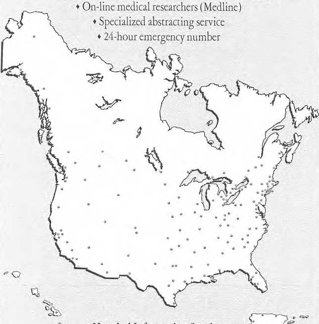
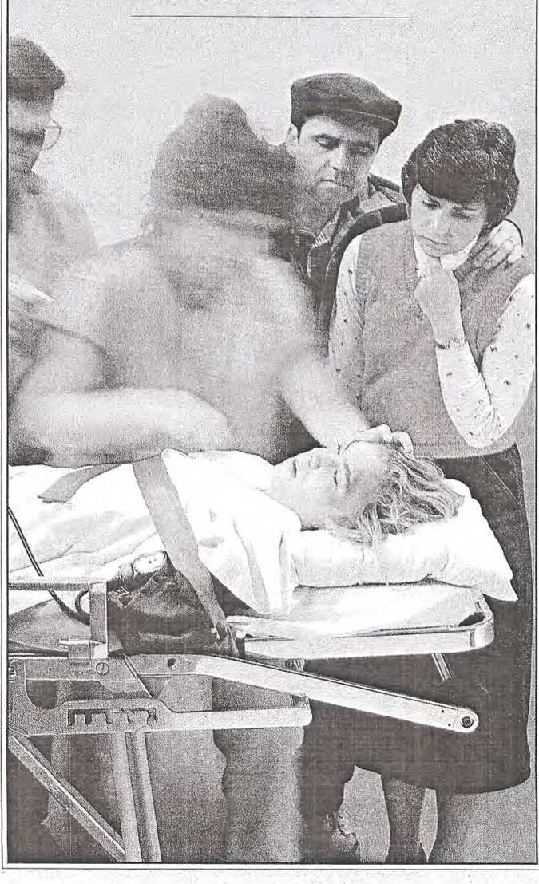
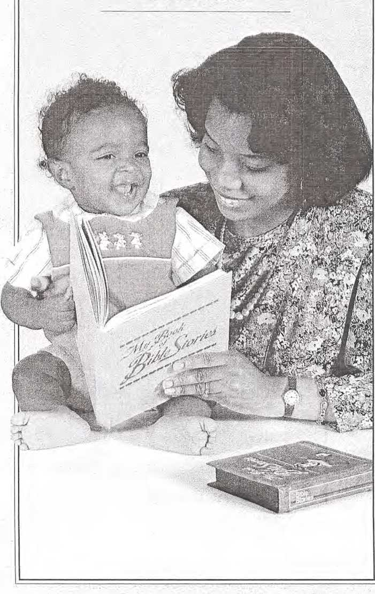
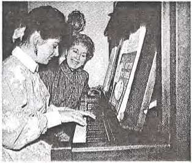

©1992 WATCH TOWER BIBLE AND TRACT SOCIETY OF PENNSYLVANIA All rights reserved
Publishers WATCHTOWER BIBLE AND TRACT SOCIETY OF NEW YORK, INC. INTERNATIONAL BIBLE STUDENTS ASSOCIATION Brooklyn, New York, U.S.A.
Family Care and Medical Management for jehovah’s Witnesses English (/c-E)
Made in the United States of America
Health care for children of Jehovah’s Witnesses at times presents a challenge to the medical community. However, our refusal of blood transfusions, founded on deep religious convictions, does not make us antimedicine. On the contrary, Jehovah’s Witnesses accept most medical treatments and surgical procedures available. We cherish health and love life. That is why we seek medical care for our families.
Physicians occasionally feel that a child’s life or health will be seriously threatened if blood is not given. Most likely, treatment involving blood will conflict with the wishes of the Witness parents. Physicians and others may be inclined to take action to force a blood transfusion. However, before any decision is made in such a serious matter, certainly all the pertinent facts need to be considered.
Therefore, we arc making this publication available to professionals (physicians, judges, social workers, and others) who may become involved in health-care decisions involving children of Jehovah’s Witnesses.
This handbook will acquaint you with
♦ Jehovah’s Witnesses as a people noted for the love and care given to their children
♦ a worldwide network of Hospital Liaison Committees that assist families of Jehovah’s Witnesses and the medical community to resolve problems that can arise pertaining to the use of blood
♦ the standards of treatment and the most up-to-date medications and surgical procedures that experienced physicians arc using to treat children when nonblood alternatives arc requested
We are confident that this family care and medical management program will benefit our children, the parents, and the physicians in providing optimum care without violating our strong religious convictions.
Local congregation elders
Hospital Liaison Committees in 163 key cities (For the committee in your area, see last page of “Network” section)
Worldwide support services at Watch Tower headquarters and in branches
Advance medical directive documents
Hospital protocol for treating
Jehovah’s Witnesses
Medical emergencies—What to ask
Medical emergencies—What to do
Jehovah's Witnesses’ religious position on medical therapy
What Jehovah’s Witnesses believe
Good family life important to Jehovah’s Witnesses
(Selected articles from publications of Jehovah’s Witnesses)
Contents
When physicians appeal to social services and judges for orders to transfuse children of Jehovah’s Witnesses
Allegations of medical neglect require careful examination of the facts
Protection of children and respect for families
Docs a mature minor have the right to refuse a blood transfusion?
Accommodating Jehovah’s Witnesses’ choice of nonblood management
Alternatives—Strategies for avoiding and controlling hemorrhage and anemia without blood transfusion
Anemia (noncancerous)
Blood risks
Burns
Cancer
Hemophilia
Leukemia
Newborn (including premature)
Surgery
Trauma (including emergency, hemorrhage)
Word index for “Medical Research" section
NETWORK
NETWORKED SUPPORT SERVICES TO ASSIST PATIENTS WHO ARE JEHOVAH’S WITNESSES
The names and telephone numbers of the members of the Hospital Liaison Committee for Jehovah’s Witnesses in your area are shown on the last page of this section. In a medical emergency involving one of Jehovah’s Witnesses, please get in touch with a member of this committee.
Local Congregation Elders: In all congregations of Jehovah’s Witnesses, a body of elders functions to provide needed spiritual and emotional support to each member, each family, on a weekly basis. These elders know best the convictions of the Witness patient and can better communicate with the patient. This has often helped eliminate misunderstandings, thus facilitating application of acceptable treatment by physicians.
The Hospital Liaison Committee Network: These committees in all major cities are composed of trained and experienced professionals who act as a liaison between the doctor and the Witness patient at the patient's request. Their services are programmed to solve problems that arise when physicians feel blood is necessary. They support the family and the attending physician by locating doctors and medical teams experienced in nonblood management techniques. There are more than 25,000 physicians around the world (more than 12,000 in the United States alone) who arc cooperating in utilizing such alternative medical strategies.
Hospital Liaison Committee members have extensive information on available alternatives to blood transfusion therapy. They maintain a file of up-to-date articles on nonblood management strategies from respected medical literature that can be made readily available to the attending physician. They may also assist in transferring a patient. The expanding network of more than 160 of these committees in the United States and Canada (more than 800 throughout the world) has already proved very useful to doctors and patients alike.
Hospital Information Desk: At most branches of the Watch Tower Society around the world (see title page), personnel are assigned to care for medical emergencies. They are equipped with a listing of cooperative physicians in their respective countries and a file of medical alternatives. Each branch is networked with other branches for expanding the available pool of cooperative physicians where necessary. Committee members also are ready to arrange for transfer of a patient from one hospital to another within the country or from one country to another where this may be required in unusual cases.
Hospital Information Services: This department at the international headquarters of Jehovah’s Witnesses in Brooklyn, New York, coordinates the work of the Hospital Liaison Committees and branches in caring for medical emergencies. It researches a vast medical data base regularly in order to supply Hospital Liaison Committees, as well as cooperative doctors, risk managers, some hospital and medical associations, and others, with up-to-date information of the very latest in alternatives to donor blood, transfusion risks, new surgical techniques, and the latest in medications that assist in maintaining an adequate hematocrit and in controlling hemorrhage. To meet emergency situations, this department maintains an extensive data base of articles on medical alternatives to blood products and provides an international fax service to Hospital Liaison Committees, individual doctors, hospitals, and social workers to give needed nonblood care for Witness patients.
We sincerely urge you to take full advantage of this reservoir of up-to-date medical information, the skilled services of the Hospital Liaison Committees, and other support services for providing the best medical care for Jehovah’s Witnesses and their children. From our experience we are convinced these initiatives will greatly minimize negative confrontations and maximize positive cooperation between Jehovah’s Witnesses and the dedicated members of the medical profession.
HOSPITAL LIAISON COMMITTEES NETWORK
163 key Cities in the United States and Canada ♦ 13,000 doctors for consultation/transfer
♦ Medical centers offering bloodless medicine and surgery
Hospital Information Services u for Jehovah’s Witnesses
25 Columbia Heights, Brooklyn, NY 11201 (718)625-3600 (718) 596-2906 (fax)
Emergency: Call nearest Hospital Liaison Committee for Jehovah’s Witnesses. (See listing for your area on last page of this section. If unable to reach them, call above number [8:00 a.m.-5:00 p.m. EST] or (718) 624-8100 at other times.)
Anchorage, AK Fairbanks, AK Juneau, AK Birmingham, AL Mobile, AL Little Rock, AR Phoenix, AZ Tucson, AZ Bakersfield, CA Fresno, CA Los Angeles, CA Oakland, CA Riverside, CA Sacramento, CA San Diego, CA San Francisco, CA San Jose, CA Stockton, CA Colorado Springs, CO Denver, CO Hartford, CT New Haven, CT Washington, DC Wilmington, DE Ft. Myers, FL Jacksonville, FL Miami, FL Orlando, FL Palm Beach, FL Tampa/
St. Petersburg, FL Atlanta, GA Augusta, GA Savannah, GA Hawaii (East), HI Hawaii (West), Hl Kauai, HI Maui, HI Oahu, HI
Davenport, TA Des Moines, IA Boise, ID Chicago, IL Peoria, IL Indianapolis, IN Wichita, KS Lexington, KY Louisville, KY Baton Rouge, LA New Orleans, LA Shreveport, LA Boston, MA Springfield, MA Worcester, MA Baltimore, MD Portland, ME Detroit, MI Flint, MI Grand Rapids, MI Saginaw, MI Minneapolis/
St. Paul, MN Kansas City, MO St. Louis, MO Springfield, MO Jackson, MS Billings, MT Charlotte, NC Greensboro, NC Raleigh/Durham, NC Fargo, ND Omaha, NE Manchester, NH Newark, NJ Paterson, NJ Albuquerque, NM Las Vegas, NV Albany, NY
Buffalo, NY Nassau County, NY New York, NY Rochester, NY Suffolk County, NY Syracuse, NY Westchester County, NY Akron/Canton, OH Cincinnati, OH Cleveland, OH Columbus, OH Dayton, OH Toledo, OH Oklahoma City, OK Tulsa, OK Medford, OR Portland, OR Allentown, PA Harrisburg, PA Philadelphia, PA Pittsburgh, PA Arecibo, PR Mayaguez, PR Ponce, PR Sanjuan, PR Providence, RI Charleston, SC Columbia, SC Greenville/
Spartanburg, SC Sioux Falls, SD Chattanooga, TN Knoxville, TN Memphis, TN Nashville, TN Amarillo, TX Austin, TX Beaumont, TX Corpus Christi, TX
|
Dallas, TX El Paso, TX Ft. Worth, TX Harlingen, TX Houston, TX Lubbock, TX |
San Antonio, TX Salt Lake City, UT Norfolk, VA Richmond, VA Virgin Islands Seattle, WA |
Spokane, WA Tacoma, WA Madison, W1 Milwaukee, WI Charleston, WV |
|
CANADA | ||
|
Calgary, Alta. |
St. John’s, Nfld. |
Thunder Bay, Ont. |
|
Edmonton, Alta. |
Halifax, N.S. |
Toronto, Ont. |
|
Kamloops, B.C. |
Hamilton, Ont. |
Windsor, Ont. |
|
Nanaimo, B.C. |
Kingston, Ont. |
Charlottetown, P.E.I. |
|
Prince George, B.C. |
Kitchener, Ont. |
Montreal, Que. |
|
Vancouver, B.C. |
London, Ont. |
Quebec City, Que. |
|
Victoria, B.C. |
Niagara Falls, Ont. |
Sherbrooke, Que. |
|
Winnipeg, Man. |
Ottawa, Ont. |
Regina, Sask. |
|
Fredericton, N.B. |
Sarnia, Ont. |
Saskatoon, Sask. |
|
Moncton, N.B. |
Sauk Ste. Marie, Ont. |
Whitehorse, YT |
|
St.John, N.B. |
Sudbury, Ont. |
EMERGENCY
MEDICAL DOCUMENT/IDENTITY CARD FOR JEHOVAH’S WITNESSES
Allergies:____________________________________________________
Current medication:________________________________
Medical problems:
MEDICAL DIRECTIVE (signed document inside)
IN CASE OF EMERGENCY, PLEASE CONTACT:
Name
Telephone:_________________________________________
Address:___________________________________________
ALTERNATE CONTACT:
Name:_________
Telephone:________________________________________
Address: ___________________________
Open to signed document *
IDENTITY CARD
Child's Name
Parents:____________________________________________
Address
Telephone
IMPORTANT MEDICAL INFORMATION ON OTHER SIDE
(For reverse side of these documents, see other side of this page.)
(Reverse side)
ADVANCE MEDICAL DIRECTIVE/RELEASE
I, , make this
advance directive as a formal statement of my wishes. These instructions reflect my resolute decision.
I direct that no blood transfusions (whole blood, red cells, white cells, platelets, or blood plasma) be given to me under any circumstances, even if physicians deem such necessary to preserve my life or health. I will accept nonblood volume expanders (such as dextran, saline or Ringer’s solution, or hetastarch) and other nonblood management.
This legal directive is an exercise of my right to accept or to refuse medical treatment in accord with my deeply held values and convictions. I am one of Jehovah’s Witnesses, and I make this directive out of obedience to commands in the Bible, such as: “Keep abstaining . . . from blood.” (Acts 15:28, 29) This is, and has been, my unwavering religious stand for years. I am years old.
I also know that there are various dangers associated with blood transfusions. So I have decided to avoid such dangers and, instead, to accept whatever risks may seem to be involved in my choice of alternative nonblood management.
I release physicians, anesthesiologists, and hospitals and their personnel from liability for any damages that might be caused by my refusal of blood, despite their otherwise competent care.
I authorize the person(s) named on the reverse to see that my instructions set forth in this directive are upheld and to answer any questions about my absolute refusal of blood.
Signature
Address Date
Telephone
Witness
Witness PrimtdinUSA.
(Reverse side)
As parents we are deeply interested in the welfare of our child .
Because of our family’s convictions as Jehovah’s Witnesses we do not accept blood transfusions. We do accept non-blood expanders and other medical treatment. In case of accident, please contact us immediately. We likely can provide information as to physicians who respect our religious convictions and may already have provided medical care for us.
Signature Date
Signature Date
Printed In U.S.A.
HOSPITAL PROTOCOL FOR Treating Jehovah’s Witnesses
REVIEW nonblood medical alternatives, and treat the patient without using homologous blood.
CONSULT with other doctors experienced in nonblood alternative management at same facility, and treat without using homologous blood.
CONTACT local Hospital Liaison Committee of Jehovah’s Witnesses to locate cooperative doctors at other facilities for consultation on alternative care.
TRANSFER patient, if necessary, to cooperative doctor or facility before patient’s condition deteriorates.
IN A RARE SITUATION, if court advice is deemed necessary, the patient, the parents, or the guardian should be notified as soon as possible of such intended action. This will allow for due process of law and for the court to hear both sides so as to weigh all factors in reaching a decision, including alternative medical nonblood management of the case.
Medical Emergencies What to Ask
1. What arc the basic symptoms and dangers of the disease or problem?
2. Is the proposed treatment essential medical care or experimental? Would a second, independent opinion be beneficial?
3. What are the risks associated with the doctor’s proposed treatment, including the risks of giving a blood transfusion?
4. What alternatives to giving blood has the doctor explored? Why does the doctor feel a blood transfusion is necessary in this case? (Knowing this will help focus on the alternatives that have proved effective.)
5. Is the doctor willing to consult the medical literature on nonblood treatment?
6. is the doctor willing to consult with other doctors who have successfully treated Jehovah’s Witnesses without the use of blood?
7. Is the doctor willing to yield to another medical team who will take over medical care of the patient?
See corresponding numbers on flowchart "Medical Emergencies—What to Do” (following page). See also “Hospital Protocol for Treating Jehovah’s Witnesses.”
|
medical Emergencies WHAT TO Do | |||||
|
FAMILY/PATIENT |
DOCTOR | ||||
|
Requests nonblood treatment. FAMILY CHECKLIST |
Proposes blood transfusion. DOCTOR CHECKLIST | ||||
|
Understands medical problem? |
1. ISOLATE PROBLEM |
Clarify diagnosis and verify medical experience. | |||
|
Understands treatment recommended? |
2. CLARIFY TREATMENT |
Explain treatment and reasons for prescribing it. | |||
|
Explain what treatments are acceptable/ |
3. RISKS/BENEFITS |
Explain blood transfusion risks. Can doctor guarantee that there will be no risk? | |||
|
unacceptable. | |||||
|
Ask doctor to use nonblood alternatives. Choose |
4. ALTERNATIVES |
Discuss nonblood alternatives explored. | |||
|
acceptable treatment. | |||||
|
Give nonblood-treatment medical articles to doctor. |
5. MEDICAL RESEARCH |
Review medical literature. Is doctor prepared to use available alternatives? | |||
|
Supply names of doctors for consultation. |
6. CONSULTATION |
Consult with other doctors experienced in nonblood management. | |||
|
If necessary, request transfer to medical team |
7. TRANSFER |
If present doctor feels he/she cannot treat | |||
|
willing to accept patient. |
without blood, is he/she willing to yield to a doctor who is able to do so? | ||||
|
FACILITATE TRANSFER TO ALTERNATIVE MEDICAL TEAM | |||||
|
OBJECTIVE: OPTIMUM MEDICAL TREATMENT OF PATIENT | |||||
|
See corresponding numbers on list "Medical Emergencies—What to Ask” (preceding page). EMERGENCY 7 | |||||
BELIEFS
JEHOVAH’S WITNESSES’ RELIGIOUS POSITION ON MEDICAL THERAPY
Jehovah’s Witnesses avail themselves of the various medical skills to assist them with their health problems. They do not adhere to so-called faith healing and arc certainly not opposed to the practice of medicine. They love life and want to do whatever is reasonable and Scriptural to prolong it. (For a detailed discussion of the following subjects, see the Watch Tower publications cited.)
Deliberately induced abortion simply to avoid the birth of an unwanted child is the willful taking of human life. If (at the time of childbirth) a choice must be made between the life of the mother and that of the child, it is up to the individuals concerned to make that decision.—Reasoning From the Scriptures, pp.25-6.
Autotransfusion is acceptable to many of Jehovah’s Witnesses (this being a matter of conscience) when the equipment is arranged in a closed circuit that is constantly linked to the patient’s circulatory system and there is no storage of the patient’s blood. Jehovah’s Witnesses do not accept preoperative collection, storage, and later reinfusion of blood—The Watchtower, March 1, 1989, pp. 30-1; How Can Blood Save Your Life?, pp. 13-15.
Jehovah’s Witnesses have definite objections to blood transfusions for both religious and medical reasons. They are deeply religious people who believe that blood transfusion is forbidden by Biblical commands such as: “Only flesh with its soul—its blood—you must not eat’’ (Genesis 9:3,4), “[You must] pour its blood out and cover it with dust” (Leviticus 17:13, 14), and, “Keep abstaining from ... blood and from things strangled and from fornication.” (Acts 15:28, 29)—The Watchtower, June 1, 1990, pp. 30-1; How Can Blood Save Your Life?, pp. 4-6; Reasoning From the Scriptures, pp. 70-3.
While these verses of the Bible are not stated in medical terms, Witnesses view them as ruling out transfusion of whole blood, packed red blood cells, and plasma, as well as white blood cells and platelet administration. However, Witnesses’ religious understanding does not absolutely prohibit the use of components such as albumin, immune globulins, and hemophiliac preparations; each Witness must decide individually whether he will accept these.—The Watchtower, June 1, 1990, pp. 30-1; The Journal of the American Medical Association (/zLVlzl), November 27, 1981, Vol. 246, No. 21, p. 2471.
Some Witness patients permit the use of a heart-lung machine when the pump is primed with nonblood fluids and blood is not stored in the process.—The Watchtower, March 1, 1989, pp. 30-1; How Can Blood Save Your Life?, p. 15.
Hemodialysis is a matter for each Witness patient to decide conscientiously if a closed circuit is employed, if no blood prime is used, and if there is no blood storage.—The Watchtower, March 1,1989, pp. 30-1.
Induced hemodilution is a matter for the Witness patient to decide according to his conscience when a closed circuit is used and no blood storage is involved. Jehovah’s Witnesses do not accept preopcrative collection and storage of blood and its later transfusion.—The Watchtower, March 1,1989, pp. 30-1; How Can Blood Save Your Life?, pp. 3-5,15.
While the Bible forbids consuming blood, there is no Biblical command specifically forbidding the taking in of other human tissue or bone. For this reason, each individual faced with making a decision on this matter should carefully and prayerfully weigh matters and then decide conscientiously what to do before God. It is a matter for personal decision.—The Watchtower, March 15,1980, p. 31; How Can Blood Save Your Life?, p. 28.
Serums are not forbidden; however, an individual Witness may still conscientiously refuse them. The same applies to albumin as a minor component of blood.—The Watchtower, June 1, 1990, pp. 30-1.
Nonblood expanders arc acceptable to Witness patients. (See Advance Medical Directive/Rclease.)—Reasoning From the Scriptures, pp. 73-4.
Reprinted from Jehovah’s Witnesses in the Twentieth Century, page 13
|
BELIEF |
SCRIPTURAL REASON |
BELIEF |
SCRIPTURAL REASON |
|
Bible is God’s Word and is truth |
2 Tim. 3:16,17; 2 Pet. |
Adamic death will cease |
I Cor. 15:26; Rev. |
|
1:20,21; John 17:17 |
21:4; ba. 25:8; 1 Cor. | ||
|
Bible is more reliable than tra |
Matt. 15:3; Cot 2:8 |
15:54 | |
|
dition |
Only a little flock of 144,000 go |
Luke 12:32; Rev. 14: | |
|
God’s name is Jehovah |
Ps. 83:18; Isa. 26:4; |
to heaven and rule with Christ |
l,3;lCor. 15:40-53; |
|
42:8, AS; Ex. 6:3 |
Rev. 5:9,10 | ||
|
Christ is God's Son and is infe |
Matt. 3:17; John |
The 144,000 arc bom again as |
1 Pet. 1:23 John 3:3; |
|
rior to him |
8:42;14:28;20:17; |
spiritual sons of God |
Rev. 7:3,4 |
|
1 Cor. 11:3; 15:28 |
New covenant made with spiri |
Jer. 31:31; Heb. 8: | |
|
Christ was first of God’s cre |
Col. 1:15; Rev. 3:14 |
tual Israel |
10-13 |
|
ations |
Gal. 3:13; Acts 5:30 |
Christ's congregation is built |
Eph. 2:20; Isa. 28:16; |
|
Christ died on a stake, not a |
upon himself |
Matt. 21:42 | |
|
cross Christ’s human life was paid as |
Matt. 20:28; 1 Tim. 2: |
Prayers must be directed only to Jehovah through Christ |
John 14:6,13,14; 1 Tim. 2:5 |
|
a ransom for obedient humans |
5,6; Titus 2:14; 1 Pet. | ||
|
2:24 |
Images must not be used in wor |
Ex. 20:4,5; Lev. 26:1; 1 Cor. 10:14; Ps. 115: | |
|
Christ’s one sacrifice was suf |
Rom. 6:10; Heb. 9: |
ship | |
|
ficient |
25-28 |
4 0 | |
|
Christ was raised from the dead |
IPet. 3:18; Rom. 6:9; |
Spiritism must be shunned |
Dent. 18:10-12; GaL |
|
as an immortal spirit person |
Rev. 1:17,18 |
5:19-21; Lev. 19:31 | |
|
Christ’s presence is in spirit |
John 14:19; Matt. |
Satan is invisible ruler of world |
1 John 5:19; 2 Cor. |
|
24:3; 2 Cor. 5:16; Ps. |
4:4; John 12:31 | ||
|
110:1,2 |
A Christian must have no part |
2 Cor. 6:14-17; 11: | |
|
Kingdom under Christ will rule earth in righteousness and peace |
Isa. 9:6,7; 11:1-5; |
in interfaith movements |
13-15; Gal. 5:9; Deut. |
|
Dan. 7:13,14; Matt. |
7:1-5 | ||
|
Kingdom brings ideal living |
6:10 Ps. 72:1-4; Rev. 7:9, 10,13-17; 21:3,4 |
A Christian must keep separate from world All human laws that do not con |
Jas. 4:4; 1 John 2:15; John 15:19; 17:16 |
|
conditions lo earth | |||
|
Matt. 22:20,21;! Pet. | |||
|
Earth will never be destroyed or |
EccL 1:4; Isa. 45:18; |
flict with God’s laws should be |
2:12; 4:15 |
|
depopulated |
Ps. 78:69 |
obeyed | |
|
God will destroy present system of things in the battle at Har Magcdon |
Rev. 16:14,16;Zeph. 3:8; Dan. 2:44; Isa. 34:2 |
Taking blood into body through mouth or veins violates God’s laws |
Gtn.9:3,4;Lev. 17:14; Acts 15:28,29 |
|
Wicked will be eternally destroyed |
Matt. 25:41-46; 2Thess. 1:6-9 |
Bible's laws on morals must be obeyed |
1 Cor. 6:9,10; Heb. 13:4; 1 Tim. 3:2; |
|
People God approves will receive eternal life |
John 3:16; 10:27,28; 17:3; Mark 10:29, 30 |
Prov. 5:1-23 Deut. 5:15; Ex. 31:13; | |
|
There is only one road to life |
Sabbath observance was given | ||
|
Matt. 7:13,14;Eph. |
only to the Jews and |
Rom. 10:4; GaL 4: | |
|
4:4,5 |
ended with Mosaic Law |
9,10; Col. 2:16,17 | |
|
We arc now in the ‘time of the end’ |
Matt. 24:3-14; 2 Tim. 3:1-5; Luke 17:26-30 |
A clergy class and special titles are improper |
Matt. 23:8-12; 20: 25-27; Job 32:21,22 |
|
Human death is due to Adam's sin |
Rom. 5:12; 6:23 |
Man did not evolve but was created |
ba. 45:12; Gen. 1:27 |
|
The human soul ceases to exist at death |
Ezek. 18:4; Bed. 9:10; Ps. 6:5; 146:4; John |
Christ set example that must be |
IPet. 2:21; Heb. 10:7; |
|
11:11-14 |
followed in serving God |
John 4:34; 6:38 | |
|
Hell is mankind's common |
Job 14:13, Dy; Rev. 20: |
Baptism by complete immersion |
Mark 1:9,10; John |
|
grave |
13,14, A Pfmargin) |
symbolizes dedication |
3:23; Acta 19:4,5 |
|
Hope for dead is resurrection |
1 Cor. 15:20-22; John |
Christians must give public tes |
Rom. 10:10; Heb. |
|
5:28,29; 11:25,26 |
timony to Scriptural truth |
13:15; Isa. 43:10-12 |
FAMILY
SELECTED ARTICLES FROM PUBLICATIONS OF JEHOVAH’S WITNESSES
The family unit is very important to Jehovah's Witnesses. Witness parents love their children and want them to grow up to enjoy productive and meaningful lives. A comprehensive educational program is conducted in each congregation to help families develop such desirable values as honesty, morality, integrity, and dependability. The Bible shows this is necessary to please God. The Bible also requires abstinence from blood. (Acts 15:28, 29) Witness parents seek medical care for themselves and their children and ask physicians to use alternatives to blood.
Keeping God’s approval and having a good conscience are very important to Jehovah’s Witnesses, religiously and psychologically, and they ask that others respect these sincere aspirations. Witness parents believe God’s promise that those who are obedient to him have the hope of everlasting life on our earth restored to a paradise. They want this inheritance for their children also.—2 Peter 3:13; Revelation 21:1-4.
In this section of Family Care, we invite you to examine a sampling of articles (titles below) specially prepared for use in family education.
“Families—Draw Close Before It’s Too Late” “Love at First Sight—And Forever After! ” “Raising Families Worldwide—Parenting With Love, Discipline, Example, and Spiritual Values” (Reprinted fromAwW, September 22,1991)
“What Children Need From Parents” “Parents Who Have Done Their Homework” "What Else Can Parents Do?” (Reprinted from Awahel, Septembers, 1988) “How to Strengthen Family Bonds” (Reprinted from The Watchtower, April 1,1988) “Family Problems Solved by Bible Counsel” (Reprinted from The Watchtower, November 1,1986) “Safeguarding Your Children From Misuse of Blood" (Reprinted from Our Kingdom Ministry, September 1992) (Articles appear in the order listed)
Families
Draw Close Before It's Too Late
“Family is the oldest human institution. In many ways it is the most important. It is society's most basic unit. Entire civilizations have survived or disappeared, depending on whether family life was strong or weak."
—The World Book Encyclopedia (1973 Ed it ion).
THE family unit is an umbrella of protection for children. In many places today, that umbrella is full of holes; in many other places, it’s being closed and stuck in the closet. The traditional family is frequently sidetracked as outmoded. Television comedies often portray fathers as ninnies, mothers as smarter, but children know best.
Marital infidelity is commonplace. In some industrialized countries, one of every two first marriages ends in divorce. As divorces escalate, single families proliferate. In increasing numbers, two become one without benefit of marriage. Homosexuals seek to dignify their relation with marital vows. Sex, normal and abnormal, takes center stage in movies and videos. Schools view chastity as impractical and pass out condoms to make fornication safe—which they don't. Sexually transmitted diseases and teenage pregnancies skyrocket. Babies are the victims—if they are allowed to come to birth. With the demise of the traditional family, children are the primary losers.
Years ago, Nobel prize winner Alexis Carrel, in his book Man, the Unknown, sounded this warning: “Modern society has committed a serious mistake by entirely substituting the school for the familial training. The mothers abandon their children to the kindergarten [sooner now, with day care and preschool) in order to attend to their careers, their social ambitions, their sexual pleasures, their literary or artistic fancies, or simply to play bridge, go to the cinema, and waste their time in busy idleness. They are, thus, responsible for the disappearance of the familial group where the child was kept in contact with adults and learned a great deal from them.... In order to reach his full strength, the individual requires the relative isolation and the attention of the restricted social group consisting of the family."—Page I76.
More recently, comedian Steve Allen commented on television’s assault on the family, with its preoccupation with foul language and sexual immorality. He said: “The flow is carrying us all along right into the sewer. The very sort of language parents forbid their children to use is now being encouraged not only by anything-goes cable entrepreneurs, but the once high-minded networks. Shows that depict children and others using vulgar language only point up the collapse of the American family."
What legacy is society now leaving to its children? Read the papers, watch television, note the videos, tune in the evening news, listen to the rap music, see the adult examples everywhere around you. Children are glutted on mental and emotional junk food. “If you want to destroy a country,” former British education secretary Sir Keith Joseph said, “you debauch its currency.” And he added: “The way to destroy a society is to debauch the
Awake! September 22,1991 3
children.” “Debauch," according to Webster's, means “to lead away from virtue or excellence.” That is being done with a vengeance today. Much is said about juvenile delinquency; more should be said about adult delinquency.
They Will Come Back to Haunt Us
Geneva B. Johnson, president and chief executive officer of Family Service America, said in a lecture delivered earlier this year: “The family is deeply, perhaps fatally, ill." Calling it a “grim picture for many of our children,” she then said forebodingly: “The willingness of the nation to relegate so many of our poorly housed, poorly fed, poorly treated medically, and poorly educated children to the role of outcasts in a rich society is going to come back to haunt us.” It is already coming back to haunt us. You can read about it in the newspapers, hear about it on the newscasts, and see it on your television set. Here is a small sampling:
Judonne pulls out a gun and shoots Jermaine three times in the chest. Jermaine is dead; he was 15. Judonne is 14. They had been best friends. They argued over a girl.
One hundred people gather at the funeral of 16-year-old Michael Hilliard. He was shot in the back of the head as he walked away from an argument at a basketball game.
In Brooklyn, New York, three teenagers set fire to a homeless couple. When rubbing alcohol didn't work, they tried gasoline. Il worked.
In Florida a five-year-old pushed a toddler to his death from a fifth-floor stairwell.
In Texas a ten-year-old took a gun and shot his playmate and stuffed his body under the house.
In Georgia a 15-ycar-old boy stabbed his principal while being disciplined.
In New York City, a gang in their late teens and early 20’s, armed with bats, pipes, axes, knives, and a meat cleaver, went “wilding” near a settlement of homeless men, injuring many and leaving one with his throat slashed. Motive? One investigator explained: “They were getting their jollies attacking the homeless.”
in Detroit, Michigan, an Il-year-old boy joined a 15-year-old in raping a 2-year-old girl They allegedly left their victim in a garbage Dumpster.
In Cleveland, Ohio, four boys ages six to nine raped a nine-year-old girl at an elementary school. Commenting on this, columnist Brent Larkin, writing in the Cleveland Plain Dealer, said: “It speaks volumes about what’s happening in this country, about how our value systems are headed straight for the sewer.”
Dr. Leslie Fisher, a professor of psychology at Cleveland State University, blamed television. He called it “a big sex machine,” and “kids 8 and 9 years old are watching these things.” He also blamed parents for the deterioration of the American family: “Mommy and daddy are too involved in their own problems and can’t take the time to tend their children.”
4 Awake! September 22r 19&1
Garbage In, Garbage Out
Various elements in society, especially the media, entertainers, and the entertainment industry—elements that profit by pandering to the worst in humanity—disgorge sex and violence and corruption and thereby contribute heavily to the degradation of the young and the family. So the rule goes into operation: Sow rot, reap rot. Garbage in, garbage out. The chickens are coming home to roost—and the homecoming is horrendous.
Is society breeding a generation of children without conscience? The question was raised after the notorious “wilding” spree in New York’s Central Park where a 28-year-old woman was beaten and raped and left for dead by a roving gang of teenagers. Police said they were “smug and remorseless” and when arrested “joked and rapped and sang.” They gave reasons for doing it: “It was fun,” “We were bored,” “It was something to do.” Time magazine called them “psychic amputees" who had “lost, perhaps never developed, that psychic appendage we call conscience.”
U.SJIews & World Report urged: “This nation must act to avoid another generation of the children without conscience.” Dr. Ken Magid, a prominent psychologist, and Carole McKelvey highlight that very danger in their explosive book High Risk: Children Without a Conscience. Case histories and testimony from many psychologists and psychiatrists give overwhelming support to Magid’s contention: The root cause is a failure of strong bonding between parent and child at birth and in the formative years that follow.
Surely, families must draw close during those formative years before it’s too late!
Love at First Sight
And Forever After!
yyTTF YOU watch babies after they are I born," notes Dr. Cecilia McCarton, JL of the Albert Einstein College of Medicine in New York, “they are exquisitely awake and tuned into their environment.
They are responsive to their mothers. They turn toward sounds. And they fixate on their mother’s face." And the mother makes eye contact with her baby. It’s love at first sight —for both of them!
Awake! September 22,1001
This moment of bonding between mother and baby happens naturally if the birth is natural, without drugs that dull the senses of mother and baby. His cries stimulate her production of milk. The touch of his skin against hers releases a hormone that reduces her postdelivery bleeding. The child is born with brain programs to ensure attachment—crying, sucking, babblings and gurglings, smiling and ecstatic kickings to entice mother's attentions. Attachment, to the mother primarily, makes it possible for the infant to develop a sense of love and caring and trust. The father quickly becomes important as an attachment figure. His relations lack the intimacy of the mother’s but add an important dimension: poking, tickling, gentle roughhousing, which the baby responds to with excited laughter and wigglings.
Dr. Richard Restak reports that for the newborn to be held and cuddled is like a nutrient. “Touch,” he says, “is as necessary to normal infant development as food and oxygen. Mother opens her arms to the infant, snuggles him, and a host of psychobiological processes are brought into harmony.” Under this treatment even the physical brain develops “a different physiognomy of bumps and crevices.”
Guard Against Detachment
Some have indicated that if this attachment between mother and baby does not take place at the time of birth, tragedy lies ahead. Not so. With loving mothering there are hundreds of intimate moments in the weeks that follow that make bonding secure. Denial of such intimacies over a longer period of time, however, can lead to dire consequences. “Although we all need one another throughout our lives,” Dr. Restak tells us, “that needing is most acute in the first year. Deprive a baby of light, the opportunity to gaze at a human face, the delight of being picked up, cuddled, cooed at, fussed over, touched—and the infant doesn’t abide such deprivations.”
Babics cry for many reasons. Usually they want attention. If their cries are not responded to after a time, they may stop. They feel that their care-giver is not responding. They cry again. If still no response, they feel neglected, insecure. They try harder. If this goes on for a longer time and if it is repeated frequently, the baby feels abandoned. It is first angry, even enraged, and finally it gives up. Detachment occurs. Not receiving love, it does not learn to love. Conscience is undeveloped. It trusts no one, cares for no one. It becomes a problem child and, in extreme cases, a psychopathic personality incapable of feeling remorse for criminal acts.
Love at first sight is not the end of it. It must continue forever after. Not just in words but also in deeds. “Let us love, neither in word nor with the tongue, but in deed and truth.” (1 John 3:18) Lots of hugs and kisses. Early on, before it’s too late, teach and instruct in the true values of God’s Word, the Bible. Then it will be with your children as it was with Timothy: “From infancy you have known the holy writings, which are able to make you wise.” (2 Timothy 3:15) Daily spend time with them, throughout childhood and the teen years. “These words that I am commanding you today must prove to be on your heart; and you must inculcate them in your son and speak of them when you sit in your house and when you walk on the road and when you lie down and when you get up.” —Deuteronomy 6:6, 7.
'We May Cry, but It’s for the Best'
Discipline is a touchy subject for many. When properly administered, however, it is an essential part of parental love. One little girl recognized this. She made a card for her mother, addressed “To Ma, To a Nice Lady.” It was decorated with crayon drawings of a golden
Awake! September 22,1991
A close bond with the mother helps the baby to develop emotionally
sun, flying birds, and red flowers. The card read: “This is for you because we ail love you. We want to show our appreciation by making a card. When we have low marks you sign our paper. When we’re bad you smack us. We may cry, but we know it’s for the best.... All 1 want to say is that I love you very, very much. Thanks for all you do for me. Love and kisses. [Signed] Michele.”
Michele agrees with Proverbs 13:24: “The one holding back his rod is hating his son, but the one loving him is he that does look for him with disci
pline." Use of the rod, representing authority, may involve a spanking, but many limes it does not. Different children, different misbehaviors, call for different disciplining. A rebuke kindly given may suffice; stubbornness may require stronger medicine: “A rebuke works deeper in one having understanding than striking a stupid one a hundred times.” (Proverbs 17:10) Also applicable: “A servant [or, a child] will not let himself be corrected by mere words, for he understands but he is paying no heed.”—Proverbs 29:19.
In the Bible the word “discipline" means to instruct, train, chasten—including spanking if it takes that to correct behavior. Hebrews 12:11 shows its purpose: “True, no discipline seems for the present to be joyous, but grievous; yet afterward to those who have been trained by it it yields peaceable fruit, namely, righteousness.” Parents are not to be overly harsh in their disciplining: “You fathers, do not be exasperating your children, so that they do not become downhearted.” (Co-lossians 3:21) Neither are they to be overly permissive: “The rod and reproof are what give wisdom; but a boy let on the loose will be causing his mother shame.” (Proverbs 29: 15) Permissiveness says, ‘Do as you like; don’t bother me.’ Discipline says, ‘Do what is right; I care about you.’
U.S.News & Hbr/d Report, August 7, 1989, rightly said: “Parents who are not harshly punitive, but who set firm boundaries and stick to them, are significantly more likely to produce children who are high achievers and who get along well with others.” In its
Awake! September 22,1991
conclusion the article stated: “Perhaps the most striking theme to emerge from all the scientific data is that establishing a pattern of love and trust and acceptable limits within each family is what really counts, and not lots of technical details. The true aim of discipline, a word that has the same Latin root as disciple, is not to punish unruly children but to teach and guide them and help inner controls.”
instill
They Hear What You Say, They Copy What You Do
An article on discipline in The Atlantic Monthly was introduced with this statement:
Father's tbne with the child Is also vital
“A child can be expected to behave well only if his parents live by the values they teach." The article proceeded to show the value of inner controls: “Teenagers who behaved well tended to have parents who were themselves responsible, upright, and self-disciplined—who lived in accord with the values they professed and encouraged their children to follow suit When the good teenagers were exposed, as a part of the investigation, to problem teenagers, their behavior was not permanently affected. They had far too securely internalized their parents’ values." It proved to be as the proverb says: “Train up a boy according to the way for him; even when he grows old he will not turn aside from it."—Proverbs 22:6.
Parents who tried to instill true values in their children, but which they themselves did not follow, had no success. Their children “had not been able to internalize those values.” The study proved that “what made the difference was how closely the parents lived by the values that they tried to teach their children.”
It proves to be as author James Baldwin said: “Children have never been very good at listening to their elders, but they have never failed to imitate them." If you love your chil-
Awake! September 22,1991
dren and you want to leach them the true values, use the best method of all: You be the example of your own teachings. Do not be like the scribes and the Pharisees that Jesus condemned as hypocrites: “Therefore all the things they tell you, do and observe, but do not do according to their deeds, for they say but do not perform.” (Matthew 23:3) Or like the ones the apostle Paul questioned accusingly: “Do you, however, the one leaching someone else, not teach yourself? You, the one preaching ‘Do not steal,’ do you steal?” —Romans 2:21.
Today many dismiss the Bible as outmoded and its guidelines as impractical. Jesus challenges that position with these words: “All the same, wisdom is proved righteous by all its children.” (Luke 7:35) The following accounts by families from many countries prove his words true.
RAISING FAMILIES
WORLDWIDE
Parenting With Love, Discipline, Example, and Spiritual Values
PARENTS from several countries have sent in reports on their successful rearing of children from babyhood through the teen years. All of them are Jehovah’s Witnesses, and therefore their reports stress the need for attention in the four areas listed in the title above. The excerpts reproduced here reflect only a few different aspects of the family training they followed.
From Hawaii
“As the Bible tells us, love is the ‘greatest’ quality. Love in all its precious facets must radiate throughout the home and family. Carol and I have shared this divine quality in our marriage. We arc close. We like to be together. I cannot overemphasize my belief that the major key to successful child-rearing is a happily married couple.
“I remember to this day the powerful feelings that young children like welled up in my heart during the days and weeks after Rebecca need genuine affection
Awake! September 22,1991
Taking the time to do things together will contribute to a strong family bond
our first child was bom. There was wonder over the beginning of a new living creature. I remember seeing Carol so happy and contented while nursing baby Rachel. I was happy for her, but 1 also felt a little resentment, a tinge of jealousy. Carol was bonding with Rachel, but where was I? I felt as if I had been pushed—ever so gently but nevertheless pushed—outside our family center. With Jehovah’s help I was able to express my feelings and concern to Carol, and she showed me much sympathy and support.
“Thereafter I was able to get closer to our new baby by helping with all the baby chores, including some of the disagreeable ones —washing a soiled diaper is a unique experience, to say the least! We’ve had five more children after Rachel. Rebecca is the last one, now eight years old. We’ve conducted personal, individual Bible studies with each one of our children.
“One more thing about the early childrearing. Carol and I enjoyed talking with our babies from the time they were born. We
Awake! September 22,1991
talked about all manner of things. Sometimes we talked about Jehovah and his beautiful, wondrous works. Sometimes we talked about silly, playful, funny things. Of course, we were trying to teach them something, but more than that we were just having a pleasant, relaxed, innocent time together. I believe such talks contributed a great deal to parentchild bonding. No doubt they helped to create the good communication that we have had in our family.
“Jehovah has taught us the greater value of spiritual things, of giving of ourselves. Carol and I have never had an abundance of material things, but we’ve never really sought them or missed them. If we had spent more of our time slaving for riches, we would not have had enough lime to devote to Jehovah and our family. We made the right choice." (Carol’s comments follow.)
“I think nursing your babies helps greatly in the bonding of babies to their mothers. You spend so much time cuddling and carrying your baby that you can’t help getting close. The mother can never leave the baby’s side for more than two to four hours. Ed and I have always been very strict about not leaving our children with sitters. I always wanted to be able to teach my babies and watch them as they grew up. So during the lime that they were little, I did not hold an outside job. I think this helped them realize how important they were to us. The main way to get close to your children is to spend time with them. Nothing takes the place of your being there physically. All the material things will not take the place of you.
“The teen years were difficult only because I had to adjust to the babies’ growing up. It was very hard to take, to realize that they didn’t need me as much and were becoming independent. It is a scary time, and it tests al! your work of teaching, disciplining, and molding that you have done. It is really too late to start when they are teenagers. Too late to try then to teach them morals, a love for mankind, and especially a love for Jehovah. These things must be inculcated from birth on.
“You have 12 years to get your work done before those critical teen years. But if you have worked hard to apply Bible principles, it is time to reap joy and peace when they decide they want to serve Jehovah from the heart’’—Edward and Carol Owens.
From Zimbabwe
“Children are ‘an inheritance from Jehovah.’ So says the Bible at Psalm 127:3. Bearing this in mind has helped us as parents to do all we could in caring for this inheritance. One of the primary efforts in our family was to do things together—pray together, study the Bible together, worship together, work together, visit friends together, play together.
“Discipline was needed at times. One time our son, in his early teens, was late getting home. We were worried. He was evasive. We sensed that something was wrong, but we decided to shelve the matter until the next morning. Around midnight we heard a knock on our bedroom door. It was our son, with tears in his eyes.
“‘Father, Mother, I have not been able to sleep for the last four hours, all because I did not listen when you counseled me from the Bible about bad association. After school today some of the kids pressured me into going swimming with them, and one of the boys pulled me under the water. If another boy had not helped me, I would have drowned. They laughed at me and called me a coward. I came straight home, but I stayed outside the house because I felt guilty. I’m sorry I didn’t listen to you when you warned me about bad associations, as shown in the Bible.’— 1 Corinthians 15:33.
Awake! September 22,1981 11
“He wept and so did we. We were pleased that he had learned a lesson, but we disciplined him to make a deeper impression. Exodus 34:6, 7 shows that Jehovah is merciful and pardons error, but still ‘by no means will he give exemption from punishment.’” —David and Betty Mupfururirwa.
From Brazil
“I am a widow and have to raise my boy by myself. At the same time, I work as a teacher. It is not easy to instruct and discipline children. What is needed is coherent instruction, balanced discipline, and a good example on the part of the parents. It was hard for me to be firm and at the same time sympathetic. I had to develop the art of listening, especially listening with my heart. It is important to communicate, not just talk, but get the child involved, make him respond emotionally. I tried to make him feel a part of the family by getting him involved in the family budget. When the light bill or the water bill arrived, or the price of clothes or shoes went up, we discussed these matters together.
“It is important to commend with sincerity for things well done. As opportunities arose, I would show him the value of following God’s laws and principles. On one occasion, after having counseled him several times, I had to use the literal rod. How difficult it was for me, but, oh, what blessed results! In the adolescent phase we have our ups and downs, but we can see the value of instruction and discipline. He tells me his personal problems and expresses his sentiments.
“I have to stay alert to maintain good communication. So 1 try not to get too involved in my secular work in order always to have time for my son. When we do have problems, I try to listen very attentively, and with the help of Jehovah, we overcome them. I let him know that I make my share of mistakes. On one occasion I was very angry, and I told him to ‘shut his mouth.’ He told me that to tell someone to ‘shut his mouth’ showed a lack of love. He had a point. That afternoon we had a real long talk.”—Yolanda Moraes.
From Republic of Korea
“I eagerly applied Bible principles in my family life. Especially Deuteronomy 6:6-9 was deep in my heart. So I tried to be with my children as much as I could, to draw close to them, to inculcate the principles of God’s Wbrd in their minds and hearts. I also invited full-time missionaries and Bethel family members to our home to give my children a feel for full-time service.
“The first thing parents should do when children cause problems is to display the fruits of the spirit. It is easy to get upset at the children and to lose one’s temper. We parents, however, must be patient and show exemplary conduct. It is important to respect children and give them the opportunity to explain the situation. If there is no clear evidence of wrongdoing, then trust them and always build them up. When you have to discipline a child, first reason with him, show him what he did wrong, and point out how displeasing his action was to Jehovah and to his parents. Only then discipline. Often my sons would say after they were disciplined: ‘Dad, 1 don't understand myself, why I was rebellious. I was so foolish.’ They appreciate parents who care enough to discipline them.
“Parents need to be alert to the start of bad conduct. When my oldest son was in middle school third grade, I heard loud rock music coming from his room. I discovered that he had joined a student discipline team (older, exemplary students who counseled other students), and he had been exposed to worldly influences. I learned that under continued pressure from team members and out of curiosity, he had smoked. We reasoned together on the dangers of smoking, and my son con-
12 Awnko! Snptombor 22,1091
eluded on his own that he should resign from the team, which he did. To fill the vacuum left by dropping objectionable school activities, we arranged for healthy recreation with the family and congregation members.
“Finally, I want to say that the most important thing is for parents to set a good example. I had always told my two boys that 1 wanted to serve God full-time as a minister preaching the good news. When my second boy finished school, 1 was able to retire from my job at a silk factory and become a full-time minister. My two boys saw my determination and followed suit. After serving time in prison because of the neutrality issue, both entered full-time service and are continuing to this day.”—Shim Yoo Ki,
From Sweden
“We have raised seven children, five boys and two girls. Now grown, all are very active in preaching the good news of God’s Kingdom. From an early age, the children attended the congregation meetings and went with us in field service. Step-by-step they learned to do the preaching work—ring the doorbell, say hello, give their name, and offer a handbill, tract, or magazine. When still quite young, they gave talks in the Theocratic Ministry School.
“Sometimes serious problems required special attention. Showing love and patience is then important—no shouting or quarreling. Problems were solved by reasoning things out and stressing Jehovah’s views. We trained them in money matters. When older, they worked distributing newspapers, peat harvesting, gardening, and so forth. Visiting their grandparents far away from home made them aware of older people’s problems and sympathetic toward them.
“On our 30th wedding anniversary, we received the following letter:
“To Our Beloved Parents:
“THANK YOU FOR ALL! The warm love you have lavished on us, the genuine faith you have instilled in us, the wonderful hope you have given us—this cannot be evaluated in words or money. However, we do hope that through this little keepsake, you will understand how much we feel for you, our beloved father and mother. [Signed! Your children.’
“Looking back on all these L20-year-projects,’ we feel deep gratitude to Jehovah, our heavenly Father, who has been so merciful toward us,” —Bertil and Britta Ostberg.
Miscellaneous Tidbits From Parents
“The nursing mother is Jehovah’s method of bringing baby in close physical contact with mother, but a father can augment it with a rocking chair. I took personal delight in cradling our children in my arms and rocking them to sleep nearly every night.”
“As their father, I was not equipped to nurse our children, but 1 did get close physical contact by giving them their nightly bath. For me and for them, it was fun time.1"
“From time to time, I have taken each one of our children, separately, out to eat with me alone. They love this one-on-one time with Daddy.”
“As the years passed, little by little we entrusted them with more freedom and responsibilities. A squeezed spring in one’s hand must be released slowly to avoid having it fly away unrestrained,”
“Show lots of affection. No child ever died from hugs and kisses—but their feelings can die without them.”
“Be patient, don’t beat them down. Don’t harp at them all the time. Let them develop self-esteem. For every criticism give four praises!"
“Give them your best, to make them their best.”
Awake! September 22,1S££1 13
Reprinted from Awake!, September 8, 1988, pages 5-12
JLhe success of a child's education should not be measured simply by the grades he receives. Of greater importance are the values he develops, his moral standards, his behavior, and his thinking. But who bear the principal responsibility for the child’s development in these fields?
“The parents do,” answers one longtime school counselor. “The primary objective of formal education is to support parents in producing responsible young adults who are well-developed intellectually, physically, and emotionally."
Such school counselors have frequently learned what works and what doesn’t work when it comes to producing well-adjusted young adults. Roddy Cameron, another such counselor, has dealt with hundreds of cases over the years. He was asked by
Awake!: “What do children really need most to succeed?”
After pondering for a moment, he replied: “You show me a troubled kid, and the chances are extremely high that I can show you troubled parents.” In reviewing his experiences in talking with such parents, he noted: “When trying to explain to me why they work so hard and have to be away from home so much, they almost always say they want to give their kids what they themselves didn't have.”
Yet, are the material advantages that so many parents lacked when they were young what children really need? Are expensive cars, fine clothes, and exotic vacations important to becoming successful, well-adjusted students? “What’s wrong with a hug, a kiss, love, attention?” asked

ow me a troubled kid, and the chances are that I can show you troubled parents’
Cameron rhetorically. “These cost nothing, but they are things that kids need most."
Time, Love, anti Concern
Tender loving care is the basic need of children. And the most effective way parents can provide it is by unselfishly giving of themselves, giving of their time, and not being ashamed to show genuine, uninhibited love and deep concern. One writer noted that the best gift one person can give another is "being there.”
In its brochure Plain Talk About Raising Children, the U.S. National Institute of Mental Health reported the results of a survey of successful parents. They were identified as those whose children, over age 21, “were all productive adults who were apparently adjusting well to our society." The parents of these well-adjusted young adults were asked: ‘Based on your personal experience, what is the best advice you could give to other parents?’ The most frequent responses were: ‘Love abundantly,' ‘discipline constructively,' ‘spend time together,’ ‘teach your children right from wrong,’ ‘develop mutual respect,’ ‘really listen to them,' ‘offer guidance rather than a speech,’ and ‘be realistic.’
Does that sound prosaic, old-fashioned? Yet, parents might well ask themselves: Tf

e, love, and concern make up the glue that holds families together
6 something works well, why abandon it for something different, something that doesn’t work?' Yes, time, love, and concern make up the glue that holds families together. It is the parents’ homework to provide these basic needs for their children. Fulfilling their assignment will help their children to become successful students and then successful adults. There are no shortcuts, no substitutes, such as providing material things, thinking that they will make the difference.
Comparable to Plants
In many respects, children grow and develop like plants. The successful farmer knows what it takes to reap a good crop —fertile, cultivated soil; warm sunshine; water; weeding; and protective care. Often there are difficult times and heartaches along the way, right up to the harvest But how proud successful farmers are when they see their hard-earned rewards!
Surely, a human life is more valuable than a farmer’s harvest! Should it therefore, be expected that the desired result could be obtained with less effort? Not according to the parents surveyed by the National Institute of Mental Health, nor according to the scores of parents and students interviewed by Awake! over the past two years.
The successful parent knows that raising a child takes commitment The home environment must be right, with plenty of warmth and understanding. Gently and persistently, parents need to cultivate in their children an appreciation for learning and living. Patiently they need to adjust, watch, and helpfully share the difficult times and heartaches that mar every life’s path. If parents do these things, the chances are very good that the harvest will be a successful young adult
AWAKE!—September 8, 1988

JLaRENTS who do their homework vide their children with the things they really need. Obviously, this involves more than simply paying the bills. Such parents also help their children develop proper values and goals in life, and they give them plenty of time and loving concern.
“When the children were younger, we crawled on the floor with them, banged pots, wore pan covers as helmets, and swung kitchen ladles at one another to act out famous Bible characters in historic events," explains Wayne, a father of four. "The kids loved it."
As the children grew older, Wayne and his wife, Joanne, adjusted their teaching methods; yet they continued to stir their children's imagination and desire to learn. They thereby practiced some of the finest principles of teaching. Julie M. Jensen, president of the U.S. National Council of Teachers of English, believes that a good teacher never forgets his own childish excitement when he was learning, and he nourishes this in his students.
The Importance of Praise
Wayne and Joanne developed a system to help their children with their schoolwork. There is an “in” basket in tiie kitch-
Who Have Done Their
Homework
pro- en where the children put their graded
papers on arriving home from school.
Joanne reviews the papers while the children play or do their homework, and at supper the family often discuss them. The better ones are displayed on the refrigera-
Reading stirs children’s curiosity and imagination
tor and on the kitchen walls, which resemble a cluttered art gallery.
"It is our way of extending praise to the children,” says Joanne, “and they thrive on it.” In the living room, the family has an “out” basket where the finished homework goes before bedtime. "This way,” explains Joanne, "we don’t have to look for it in the morning when the children are rushing off to school.”
AWAKEI—September 8, 1988
_
Beatrice, a mother of two girls, also decorates her kitchen with the schoolwork of her children. She says: “I do it because I’m proud of my kids and want them to know it.”
Recognizing the high value of praise, the Dallas, Texas, Independent School District encourages its volunteer tutors to make generous use of encouraging expressions, such as: Terrific! Much better. Keep it up! Good for you. That’s clever. Exactly right. Very creative. Good thinking. Excellent work. Now you’ve got it. I appreciate the way you’re trying.
If you are a parent, could you give encouragement more often?
Providing Support in Other Ways
In addition to praising their children’s efforts, parents who do their homework cultivate a home environment that is conducive to study. They get their children interested in reading and learning about the world around them.
“My parents supported me,” explained Julie, “by putting a fence around my study time. I had a particular place in the house to do my homework, and I was off limits to the rest of the family until it was done. During my study time, I was not required to do chores. Interruptions in my concentration were thereby avoided.”
Mark tells how his parents supported him and his sisters: “They made sure we always had available a dictionary and other books to assist us in our studies. They encouraged us to build personal libraries by letting us buy books we were interested in without having to pay for them out of our allowances."
8
"We began our reading program with the children when they were about three months old,” explains Althea, mother of four. “It was difficult to maintain because, like many women today, I had to work. To make room for it, I had to buy out the time from other activities. The children had over 300 books—nursery rhymes, scientific books, all kinds. They would bring me their favorites to read to them. Sometimes 1 would skip sections to try to shorten the session, but that didn’t work. The kids always knew the missing part and would remind me by filling it in from memory!”
Johan from Finland says that his parents would read to him 10 to IS minutes every night before bedtime. “I could pick the story,” Johan explains. “Mom would play the characters in the story. My sister and I got so attached to the arrangement that even when my parents didn’t have the
Parents who spend time reading to their children strengthen the family bond
AWAKE!—September 8, 1988
Family trips to a museum or to the country can be real family fun—and a learning experience
time, we would pick out a book and try it on our own. This helped us develop very good reading habits. It has made our schoolwork easier and widened our world."
Ravindira from Sri Lanka loved having her father put her to bed because of his reading style. “My favorite bedtime story was How the Camel Got Its Hump. Father would thump, pump, laugh, and do everything else during the reading. That was supposed to put me to sleep, but it only succeeded in keeping me wide awake and wanting more. He pretended not to know this, but he knew exactly what he was doing. Later, when I was older, he would let me carry the books back to the library. That made me feel important and further encouraged me to enjoy reading.”
Describing how her father helped her, Susan says: “Dad loved Held trips. He would take me everywhere—museums, bird sanctuaries, libraries, to pick wild ber-
AWAKE!—September 8, 1988 ries in the woods. Sometimes we would just explore unknown forest areas. We would come home all scratched up, but it was fun. Those trips gave purpose to my school studies.”
Emilo from Puerto Rico recalls: “My mother wanted us to know that we were always learning. When I would come home from school, she would ask, ‘So, what did you learn today?’ If I said, ‘Oh, nothing,’ she would come back with, ‘What do you mean, nothing? You must have learned something.' She would stay with the questioning until I came up with what I had learned. She did the same thing with my two brothers. She wanted us to know that we were very important to her and that she cared for us. This made us a close-knit family.”
Cultivating Family Closeness
Successful families get along well together, but this requires effort. So parents who do their homework seek to cultivate a cooperative family spirit.
“We discuss family business honestly and almost on a daily basis,” observes Carol, a single parent of two teenage daughters. “Sometimes the girls will hold their problems back because they feel I have enough of my own. I can tell when they do this, for they get into arguments over silly things. I have to remind them that the family arrangement works best when we talk out our problems with one another honestly.”
Money is a source of problems in many families, but Carol says that her being open with the girls regarding the family’s financial situation has elicited their support. She explains: “I encourage them to find jobs to earn their own money for the extra things they would like. I respect
9 them for earning it and let them know it is their money."
Some parents use their family’s financial situation to teach their children budgeting, banking, and mathematical skills. “Another lesson we have been able to teach through this arrangement,” observes Henry, father of three boys and a girl, “is cooperation in family activities through involvement"
But where can parents find the time for such homework? Audrey, a mother of two, says that because of her tight schedule, she invites the children to join her while she runs errands. She gets her talking time in then.
Handling Problems
In order to do their homework well, parents need to learn to listen carefully to their children. As the Bible proverb says: “A wise person will listen and take in more instruction.” (Proverbs 1:5) Attentive listening builds trust, and this is vital in handling problems successfully.
For example, when Leon and Carolyn learned that their eldest daughter, Nikki,
Your youngsters need personal attention
was skipping school and failing some courses, Carolyn’s first reaction was to blame the had influence of school friends. However, Leon explained: “I suggested we reserve judgment until we had all the facts.”
“But even then,” Leon notes, “it took a week of patient, gentle probing and listening before we reached the root of Nikki’s problem. What a shock it was to us! Nikki felt we weren’t interested in her, since we had been so busy with our own activities! Carolyn and I made adjustments, and Nikki responded by becoming more alert to her responsibilities around the house and at school.”
Dan and Dorothy have eight children. These spend an hour and a half on school buses each day, and a major problem has been the worsening conditions there. “When the older ones were in school, it was an easy matter to utilize the time on the bus to do homework or catch up on reading,” Dan noted. “In just the last 12 years, however, that has all changed. Now there are many unwholesome distractions —foul language, loud rock music, and smoke from cigarettes and marijuana, usually in the rear of the bus.”
Dan explained that they brainstormed this problem with the children. “Two ideas surfaced,” he noted. “Sit as close to the bus driver as possible, and equip each child with lightweight headphones connected to a personal AM/FM cassette player. Now the children are able to isolate themselves from the trouble, enjoying easy-listening music while they read or do light homework. The solution seems rather simple, but it has worked!”
Working With the School System
During the school year, students spend about six hours a day under the direct
AWAKE!—September 8, 1988
In modem society, teachers and schools are important to the successful development of children. That doesn't mean they can fulfill the role of parents, but they can be of vital assistance in rearing children successfully. So another homework assignment that you parents have is to cooperate asfuUy as possible with the school system in which your children are enrolled.
What, then, if there is a special function or program at school ! For example, ata school in Massachusetts, there was a Student Awards Achievement Presentation program. “I went because 1 wanted my children to know I was proud of them," explained Joanne, a mother of four boys. Twenty students received special achievement awards that day, yet most of the parents did not show up. Do you think that their absence encouraged their children to do better in school! Hardly!
Consider also the teachers. Schools often set aside evenings to exhibit the students'work and to review their progress with parents, and many teachers give up personal time to prepare for these activities. One teacher observed: “We have our own families and our own lives to live too. It is discouraging when you spend so much time preparing for special events and see only one, turn, or three parents all evening."
AWAKEI—September 8, 1988
As parents, you may at times expect schools and teachers to make adjustments to meet the special needs of your children. Should you not be willing to make similar sacrifices to support the efforts of the school system, especially since it is endeavoring to help your children grow into successful adults!
The brochure “School and Jehovah’s Witnesses,” published topromote understanding and cooperation between parents and teachers, outlined the following homework for Jehovah’s Witnesses who are parents: “It is important that parents become acquainted with their children's teachers—making arrangements to meet and talk with them....
“In such a meeting the Witness father or mother should let the teacher know that the parents expect proper Christian conduct from their children, and that if the children misbehave, they want to be informed. The parents also should give assurance that they will support the teacher in whatever reasonable discipline is administered, even reinforcing it at home.
“Other ways that parents can help: Make sure children get a good breakfast before they leave for school. See that their homework is complete and that they have all their books with them. Always show respect for school regulations and expect the children to respect these as well. Get the children to talk at home about school activities and any problems they may encounter there."
Don’t you agree that these are fine suggestions! Are you as parents applying them! Part of your homework is to do so.
11 influence of teachers. Parents who appreciate what that means in terms of learning potential for their children will want to see to it that this time is well spent. A mother of three children explained how she and her husband made sure that it was.
“When John and I were dissatisfied with one of our children’s classes," she relates, “we would go to the school and work out a suitable adjustment with the guidance counselor, the teacher, or the principal. We stayed deeply involved in our children’s formal education from beginning to end. Now that it is over, we are satisfied they got the best of what was available to them.”
Children may need help with their schoolwork, and part of a parent’s homework should be to become involved. Yet, the parent wisely cooperates with the school system. “One thing I remember about my parents,” says Wesley, “is that they never interfered with the teacher’s classroom strategies. They realized that the teaching process can be varied.
Questions for
Parental Self-Examination
1. Dol take a real interest in my children’s schooling?
8. Do I know their teachers?
3. Do the teachers know that I appreciate their efforts?
4. Do I make sure that my children take their schoolwork seriously?
5. Do I see to it that their homework is done properly and on time?
6. Is my attitude toward knowledge and learning a positive one?
7. Do my children see me study?
12
“For example, when I was baffled by the process that would get me to the answer of a math problem, Dad would give me the answer and let me struggle with the process until I figured it out. I knew I had it when my answer matched Dad’s."
Not an Easy Assignment
Any child will tell you that some homework assignments are harder than others. But the homework you parents have is much more difficult than any that you ever had in school. Indeed, rearing children successfully is a complex, long-term assignment. Some have called it a 20-year project.
The key to success includes being an attentive, friendly, understanding parent, one who knows the children well and responds to them as individuals. Remember, what your youngsters really need is personal attention that is demonstrated by loving concern for their welfare. Nourish in them a thirst for learning, and help them make the gaining of knowledge a pleasurable experience.
All the Effort Worth It
You parents who do your homework are self-sacrificing, not self-indulgent. You are ready to make adjustments. You realize that to help your children, you must ‘be there,' and you must expend yourselves by providing the time, love, and concern that your children really need.
When you do your homework, the results may be comparable to the harvest of a farmer who prepares the soil and then plants, cultivates, and waters his crop. You may be rewarded with a delightful harvest. It is as the Bible says: “Train up a boy [or girl] according to the way for him; even when he grows old he will not turn aside from it.”—Proverbs 22:6.
AWAKE!—September 8, 1988
How to Strengthen Family Bonds
The reasons why youths leave home are many and often quite involved. While this article cannot address them in depth, it does show that Bible principles, when applied, can work to keep the family intact.
IT IS hard to establish just how many children run away from home. Printed estimates range from 600,000 to 3,000,000 missing children a year in the United States alone. Such estimates often lump together such categories as runaways, pushouts, throwaways, and children abducted by divorced parents without legal custody. Estimates they must be, for children who are abandoned by their parents are not reported as missing, and some
4 THE WATCHTOWER—APRIL 1. 1988 children regularly run away. “A 16-year old who runs away five times in a year and stays overnight each time he runs away would show up in the . . , statistics as five missing children,” says The Neui York Times.
More important than numbers are the reasons why children leave home. “When a youngster runs away, it is generally a symptom of dysfunction in the home environment,” states the magazine Medical Aspects of Human Sexuality. It may be because of problems that already exist, such as physical abuse, neglect, lack of love, divorce, excessive demands, or harsh and unbending rules. Or it may be due to fear of repercussions, as in cases of pregnancy or brushes with the law. When asked why they left home, most runaways cite reasons involving their relationship with their parents. “The parent-child relationship is apparently an extremely influential factor relative to runaway behavior,” says the journal Adolescence. It adds: “Runaways report poor parent-child relationships, extreme family conflict, alienation from parents, interpersonal tension, and poor communication with parents as primary factors behind running away from home.”
Understanding the Reasons
These are stressful times. “With unemployment climbing, and more and more families in difficult financial straits, domestic tensions and problems multiply," says the magazine Ladies’ Home Journal. “When a father is laid off and a mortgage goes unpaid, everyone in the family feels the stress. Young people, who haven’t developed the skills to cope with these pressures, use flight as a means to escape.” Sometimes parents themselves unwittingly drive their children out. Angrily, they may tell their offspring to accept their decisions or leave. Irritated and exhausted from fighting their daily economic battles, they have little energy to deal with their children.
At the same time, just being an adolescent produces its own stress. Teens are torn between the need for the security and
Parent-child relationships are most Important
care they received as children and the sense of being independent from their parents as they struggle to become adults. It causes confusion and anxiety for them. Bodily changes are also taking place. Their lives have suddenly become quite complex, and they may feel overwhelmed. They feel pressure from parents and peers. They also experience periods of selfdoubt and depression. “While you try to figure yourself out, don’t be surprised if you sometimes feel misunderstood at home,” advises ’Teen magazine. “After all, if you can’t understand yourself, how can your parents know what’s on your mind?”
THE WATCHTOWER—APRIL 1, 1988 5
Many parents, especially with their first offspring, are unsure as to how much freedom to allow their children. Overcontrol and lack of understanding have led many youths to run away.
“But running away doesn’t solve anything,” notes author Judy Blume in her book Letters to Judy. “Running away is a symptom, not a solution. Instead, families have to sit down together and face the facts. They have to deal with reality. Only then can they make the changes that will help them live together in peace. And often they need help in doing that.”
Finding the Needed Help
The best source of that help is God’s Word, the Bible. Why so? Because as man’s Creator, God knows what is best for his creation. And he has given us instruction with that purpose in mind, “for teaching, for reproving, for setting things straight, for disciplining in righteousness, that the man of God may be fully competent, completely equipped for every good work." (2 Timothy 3:16, 17) Bible principles work, and they cover every aspect of life.
As noted, though, all members in the family must be willing to face the facts and make changes. Without such recognition and desire, improvement will not be made, and the impelling force to escape will remain. Especially is that so in families with problems of alcohol, drug, and sexual abuse. These must be overcome before the normal pressures of life can be dealt with. Faith in God and a sincere desire to please him, based on accurate knowledge of his Word, have helped many families to overcome tragic situations that in other families have impelled youths to run away.—Compare 1 Corinthians 6: 9-11.
Just living in this modern world with its increasing selfishness, distrust, and soaring crime rate can put a strain on the
6 THE WATCHTOWER-APRIL 1, 1988 family bonds. That is why “all the things that were written aforetime [in the Bible] were written for our instruction, that through our endurance and through the comfort from the Scriptures we might have hope.”—Romans 15:4.
Applying Bible Principles
With knowledge of the factors that induce a child to run away, Bible principles can be applied. The Bible addresses these factors by advising parents to spend the needed quality time with their children, to give consistent, loving training. Both extremes of lack of interest and of overly strict discipline are to be avoided. God’s Word advises: “Fathers, do not be irritating your children, but go on bringing them up in the discipline and mentalregulating of Jehovah.”—Ephesians 6:4; Proverbs 22:6.
As in Bible times, proper supervision, attention, and instruction are to be things that parents constantly give—‘when they sit in their house, when they walk on the road, when they lie down, and when they get up.’ (Deuteronomy 11:19) While discipline is needed at times, it is to be administered with love. (Proverbs 13:24) Family happiness certainly will be enhanced if such advice is followed!
Children also are to do their share: “Children, be obedient to your parents in union with the Lord, for this is righteous: ‘Honor your father and your mother.'” (Ephesians 6:1, 2) The ancient wise man Solomon, who wrote so as “to give to the inexperienced ones shrewdness, to a young man knowledge and thinking ability,” also advises: “Listen, my son, to the discipline of your father, and do not forsake the law of your mother.... If sinners try to seduce you, do not consent.”—Proverbs 1:1-10.
How would family problems be handled?
WHAT PARENTS CAN DO
Spend time with your children; know their problems and needs
Be constant in attention and supervision
Administer discipline and training in love
Make the home a happy place
WHAT CHILDREN CAN DO
Be obedient, loving, and respectful to parents
Avoid isolation; take an active interest in family affairs
Think of the family as a whole, not just your own desires
Be open and communicate
In love, for the Bible counsels: “Let all your affairs take place with love.” (1 Corinthians 16:14) This should be a deep-rooted love that is willing to overlook the imperfections and idiosyncrasies of another, which might otherwise irritate and grate on one’s nerves. “Above all things, have intense love for one another,” says the Bible, “because love covers a multitude of sins.”—1 Peter 4:8.
Such love also takes an interest in the happiness and well-being of others and draws the family closer together. Note that the so-called golden rule was positive: “Do for others what you want them to do for you.” (Matthew 7:12, Today’s English, Version) Most runaway youths interviewed in one study said that their involvement in their family was at a minimum prior to leaving home. “‘Family disengagement’ is a major factor in the process of deciding to run and remain away from home,” says Adolescence. But by following the Bible’s admonition to be “keeping an eye, not in personal interest upon just your own matters, but also in personal interest upon those of the others,” more time will be spent together as a family, and the problems of poor relationships, alienation, and poor communication can be overcome. (Philippians 2:4) With close feeling and interest at home, the influence by peers that may induce a child to run away will be minimal.
With the application of Bible principles, running away from home no longer appears as the solution to the problems in life that each person must face. With loving support from individual family members, the family becomes a sanctuary from the pressures of the outside world. A fuller understanding of Bible principles and their application, together with the hope that God gives, will further enhance that happiness. Why not let Jehovah's Witnesses discuss it with you?
THE WATCHTOWER-APRIL 1, 1988 7
66VX7IVES [choose] to be divorced, chil-
T T dren to be disinherited,___rather
than be unfaithful to Christ,” wrote Ar-nobius, a professed Christian of the fourth century.* Yes, even then, bitter religious opposition by unbelievers split up families. Jesus stated that those who had “greater affection" for family members than for him would not be worthy of him. Hence, there would be “a sword” causing division in some households, because of the believer’s showing less love for his family, “yes, and even his own soul.” (Matthew 10:34-37; Luke 14:26) Such divisions in families continue to our day.
2 Though the Christian may do all he can
* Against the Heathen, Book II. 5.
1, 2. (a) What are some causes of disrupted families? (b) Why should the problems of those in disrupted families be of concern to all? (1 Corinthians 12:26)
26 THE WATCHTOWER-NOVEMBER 1, 1986 to keep the family intact, some unbelieving mates simply are not “agreeable to dwelling” with the Christian, and a separation or a divorce ensues. (1 Corinthians 7:12-16) Disrupted families also occur because during “the conclusion of the system of things” there has been a ‘cooling off’ of love for God and his laws, including those regarding marriage. (Matthew 19:6, 9; 24: 3,12) In the United States the divorce rate increased 236 percent just between 1960 and 1980! Since about three out of five divorcing couples in the United States have children, those in broken homes face complex problems. Usually when people learn the truth of God’s Word, their family life improves, but some persons were involved in divorces before becoming Jehovah’s Witnesses. Sometimes even a Christian who failed to apply Bible counsel earnestly at home has ended up in a divorce. (John 13:17) What can Christian parents do under these circumstances to rear children to love Jehovah?
“Fellow Feeling” Vital
3 In Malachi’s day certain Israelite men were treacherously divorcing their wives. The “weeping and sighing” of these rejected women as they appealed for God’s help were, in effect, “covering with tears the altar of Jehovah.” (Malachi 2:13-16) The breaking up of a marriage today is likewise painful, even if there are solid Scriptural grounds for the breakup. Though the husband and the wife suffer, the children often suffer more.
* Even if the divorce brings relief from abuse, a child’s whole world sometimes seems to fall apart. Hence, it is necessary for a believing parent to show out-of-the-ordinary love and understanding in handling the situation. “I was always in the middle. I felt divided,” explained a youth whose Christian father obtained a Scriptural divorce when the boy was five. “I kept my true feelings to myself. This caused bouts of depression.” Helping a child deal with such intense emotions requires that a parent have “fellow feeling" and be “tenderly compassionate.” (1 Peter 3:8) The child may be silent out of guilt, feeling that he is in some way to blame for the divorce. A parent needs patiently to explain that he loves the child and that the divorce is not the child’s fault.
s Bitterness between parents can become intense, especially so when religious issues are involved. Yet, rather than “paying back injury for injury or reviling for reviling,” the believing parent should consider the welfare of the child. (1 Peter 3:9) In her book Growing Up Divorced, Linda
3. What suffering is caused by divorce?
4. (a) In what ways do children suffer when their parents divorce? (b) How can a parent help the child?
5. Why should a Christian parent endeavor to end hostilities with the ex-mate?
Francke states: “Parents who are hostile to each other make these children’s problems far more difficult and even destructive. Not wanting to risk alienating either parent, the child can withdraw from positive relationships with both parents.” Yes, “bitter jealousy and contentiousness” are not only wrong but can even estrange the child from you. (James 3:14, 16) Thoughtless verbal attacks against an unbelieving parent can deeply hurt a child. (Proverbs 12:18) If an unbelieving ex-mate wishes to continue the conflict, “as far as it depends upon you [the believer], be peaceable with all men.”—Romans 12:18-21.
Protect Your Child's Heart
6 After custody is determined, there may still be difficulties to contend with. “One of the major problems," states a report from the Watch Tower Society’s branch in Australia, “is that the parent who has gained custody of the child tends to relax... Even a parent in the truth can lose sight of the basic reason he or she wanted custody of the children. The primary reason should be to bring them up as true worshipers of Jehovah.” To do so requires constant effort.—Ephesians 6:4.
7 Of course, a law court often grants visitation rights to the parent who no longer has custody of the child. Can these be respected while still protecting the child’s heart? Yes, and as appropriate, the child should show due respect to an unbelieving parent. If during the visit the unbeliever engages in unchristian conduct, rather than build hatred by condemning that parent, the believer can explain to the child that God has set standards of conduct in the Bible and that “each of us will
6. After custody is determined, what can be a problem with some parents?
7. (a) Why should a child be taught to respect the unbelieving parent? (b) How can you reason with a child if the unbeliever engages in unchristian conduct?
THE WATCHTOWER-NOVEMBER 1. 1966 27 render an account for himself to God,” the final Judge. (Romans 14:12) Yet, make clear that such conduct is not to be imitated. Discreetly show that though some people do not live by these standards, in time many change because of seeing a Christian example in the child and the ex-male. In this way, it may be possible for the child to have a measure of respect for that parent. A divorced couple’s differences about religion should not prevent a parent from affecting the child in a positive way. The Christian parent will “let [his or her] reasonableness become known to all men.” (Philippians 4:5) What, though, if the unbeliever tries to undermine godly training?
8 Preparation for the visits is the key! One Christian mother whose ex-husband became an apostate reported: “Before the visit, I would study with the children about how their conduct would be regarded by Jehovah. We would act out situations. I would say: ‘If your father says this or that, how will you answer?’” Another Christian who was divorced because she became a Witness adds: “Before [my two teenagers] leave for their weekend visit with their father, we say a prayer asking Jehovah to be with them and to help them to witness to their dad, especially by their fine conduct.”
9 An unbelieving parent with visitation rights may try to woo the child with lavish gifts, expensive entertainment, and other recreational pleasures. Jochebed, the mother of Moses, (and Amram if he was still living) knew what would face Moses when he was turned over to Pharaoh’s daughter. So she no doubt applied herself in shaping his sense of values while be was still with her. (Exodus 2:1-10) Despite facing the tempting “treasures of Egypt,”
8. How did two parents prepare their children for visits to opposing ex-mates?
9. How can Christian parents imitate the example of Moses’ mother?
28 THE WATCHTOWER-NOVEMBER 1, 1986 Moses made his own choice to follow godly principles. He “esteemed" his spiritual privileges as real riches! (Hebrews 11: 23-26) Christian parents should similarly prepare their children to meet such temptations by discussing Scriptural material that focuses on spiritual treasures.* Children often see through the shallow motive of a parent who would attempt to buy their affection.—Proverbs 15:16, 17.
‘“In some extreme cases, such visits may pose a serious threat to the child. A parent would have to decide what to do under the circumstances, prayerfully evaluating the severity of the threat, the legal recourse available, and the possible consequences of refusing to honor visitation rights.” Avoid rash actions that could put into question your fitness as a parent, —Galatians 6:5; Romans 13:1; Acts 5:29; 1 Peter 2:19, 20.
Use “Practical Wisdom”
11 What if it is the Christian parent who has only visitation rights? When the child is no longer in the Christian home, that parent has limited spiritual control over the child. (1 Corinthians 7:14) For instance, the faithful patriarch Abraham would likely have insisted that his son Ishmael, like Isaac, marry a fellow wor-
* See 11 Youth’s Greatest Opportunity*1 in cur August 15, 1985, issue, as well as “How Do You View Material Possessions?” in the book Your Youiii —Getting the Best out of It, published by the Watchtower Bible and Tract Society of New York, Inc.
a The Uniform Marriage and Divorce Act in the United States says: “A parent not granted custody of the child is entitled to reasonable visitation rights unless the court finds, after a hearing, that visitation would endanger the child's physical health or significantly impair his emotional development/
10. In an extreme situation, what are some factors for a parent to consider?
11. When a Christian parent loses custody, what must he or she recognise?

shiper. But after Ishmael, still a teenager, and his mother Hagar were dismissed from the household, Abraham was unable to prevent Hagar from arranging for Ishmael to marry an Egyptian who evidently was not a worshiper of Jehovah.—Genesis 21: 14, 21; 24:1-4.
12 Despite what might be limited opportunities, a noncustodial Christian parent can do much to instill in the child a deep love for Jehovah. To do so, the parent must “safeguard practical wisdom and thinking ability." (Proverbs 3:21) Yes, more than intensity of effort is needed. “If an iron tool has become blunt and someone has not
12. (a) What positive effort may a noncustodial Christian parent make? (b) Illustrate how a Christian parent can ‘use wisdom to success.’ whetted its edge, then he will exert his own vital energies [with little results]. So the using of wisdom to success means advantage.” (Ecclesiastes 10:10) For instance, on occasion the unbeliever may make excuses to prevent access to the child. Rather than make an immediate issue of this, a parent may get better results by applying Proverbs 25:15: “By patience a commander is induced, and a mild tongue itself can break a bone.” Patience and mildness, though not easy to show when one is faced with unjust restrictions, can soften even one w’ho is as hard in his opposition as a bone. (Compare 2 Timothy 2:23-25.) Arguments can often be avoided by your being punctual and following suggestions (not in conflict with the
THE WATCHTOWER-NOVEMBER 1, 1986 29
Scriptures) that are given by the custodial parent regarding the child’s care. If you are concerned that the unbeliever is making derogatory remarks about you to the child, remember 1 Peter 2:15: “By doing good you may muzzle the ignorant talk of the unreasonable men [and women]." If you set a good example, the child will see who is right.—Proverbs 20:7.
13 During the visits, endeavor to put the Word of God into the child's heart by, whenever possible, personally studying spiritual material with him and by taking him to congregation meetings. Even if there are stringent legal restrictions, the parent can informally refer to God’s creative works, and in other ways help the child to love God. (Romans 1:19, 20; Matthew 6:28-30) Jesus recognized the limitations of his listeners. He “would speak the word to them, as far as they were able to listen.” (Mark 4:33, 34) So in addition to discussing serious spiritual matters, engage in other upbuilding activities, such as visiting with good friends, including some who are of the child’s age. (Proverbs 13: 20) Enjoy wholesome recreation together. Make the visit a precious occasion. Reasonable discipline shows love. (Proverbs 13:24) At times, however, the problems may seem overwhelming. Pressures come
13. How can a believing parent make a visit truly beneficial?
Do You Remember?
□ How can the custodial Christian parent protect the child’s heart?
□ How will “practical wisdom" help a believing parent who has only visitation rights?
□ What assurance is given at Psalm 37:23, 24, and how does Jehovah fulfill this promise? from many quarters. How can al) of these be endured?
Rely on Jehovah
14 Concerning a person in whose course of life Jehovah “takes delight," David wrote: “Although he may fall, he will not be hurled down, for Jehovah is supporting his hand.” (Psahn 37:23, 24) Yes, a Christian struggling with the pressures of a disrupted family may at times “fall" in terms of frustrations, disappointments, and legal or financial reversals, but he will not be spiritually “hurled down” completely. As the New Berkeley Version renders the phrase: “When he falls, he shall not be down and out.” Why? Because Jehovah offers his hand of uplift by means of his holy spirit and his loving worshipers. —James 1:27.
15 One Christian woman, after her opposing ex-husband was granted custody of her two young children, stated: “When matters were taken completely out of my hands, I learned really to rely on Jehovah. 1 have learned to accept what he allows and not try to take things into my own hands. I am still learning. It’s a hard lesson.” However, she is making full use of her visitation rights and has drawn comfort not only from her new husband, a faithful Christian elder, but also from others in the congregation.
“ Another Christian whose apostate ex-husband kept the children with him for several months against the court’s ruling, said: “I was so depressed that I thought I was going to fall apart. The one thing that kept me from losing my mind during that period was being involved in the field ministry.” Her daughter, who was seven at the time, took a firm stand for Jehovah, even
14. What assurance do we have at Psalm 37: 23, 24?
15, 16. How have some in disrupted families been sustained?
30 THE WATCHTOWER—NOVEMBER 1, 1906
enduring several beatings by her father because she refused to read his apostate literature. When she returned to her mother, she was determined to stick even closer to Jehovah. These and other faithful servants have seen fulfilled Psalm 54:2-7: “0 God, hear my prayer; . . . look! God is my helper; Jehovah is among those supporting my soul. . . . For out of every distress he delivered me." Yes, we can count on Jehovah’s support!—1 Corinthians 10:13.
17 So if you are a parent in a disrupted family, be sensitive to your child’s feelings. Fortify that one’s heart with God’s Word. If you only have visitation rights, then exercise “practical wisdom" as you use these to the full. Have confidence in the power of God’s Word planted in a receptive heart. (1 Thessalonians 2:13) Seeing a child come to love Jehovah is well worth all the effort.
17. How can parents in disrupted families help their children, with what possible reward?
THE WATCHTOWER—NOVEMBER 1, 1986 31
Safeguarding Your Children From Misuse of Blood
1 “Look! Sons are an inheritance from Jehovah.” (Ps. 127:3) If you have such a precious inheritance from Jehovah, you, as parents, have a happy, although serious, responsibility to train, care for, and protect your children. Fur example, have you taken every reasonable step to protect your young children from a blood transfusion? How would your cliildren react if faced with the prospects of a transfusion? Have you discussed as a family what you might do to deal effectively with an emergency situation in which a transfusion is threatened?
’ Preparing your family for such situations need not be a cause for anxiety or undue stress. You cannot anticipate and prepare for every eventuality in life, but there are many things you, as parents, can do in advance to protect your children from a transfusion. Neglecting these responsibilities could result, in your child being transfused when getting medical care. What can be done?
1 Firm Conviction Important: Serious thought should be given to how firm your own convictions are regarding God’s law on blood. Are you teaching your children to obey Jehovah on tliis matter, just as you teach them ills law on honesty, morality, neutrality, and other aspects of life? Do we really feel as God’s law commanded at Deuteronomy 12:23: “Be firmly resolved not to eat the blood"? Verse 25 adds: “You must not eat it, in order that it may go well with you and your sons after you, because you will do what is right in Jehovah’s eyes." A doctor may claim that blood will 'make tilings go well’ for your sick child, but you must be firmly resolved before any emergency comes up to refuse blood for yourself and your children, valuing your relationship with Jehovah as higher than any alleged extension of life that would involve breaking his divine law. I'avor with God now and everlasting life in the future are involved!
4 Yes, Jehovah’s Witnesses are life-oriented. They have no desire to die. They want to live so they can praise Jehovah and do his will. That is one reason why they go to hospitals and take their children there for treatment. They ask physicians to treat them, and when they are told blood is the standard or medically indicated course of treatment, they ask for alternative nonblood medical management. There are many alternatives to blood. Experienced physicians are using them. Such alternative management is not quack medicine but consists of medically sound treatments and procedures that arc documented tn leading medical journals. Thousands of physicians around the world are cooperating with us in providing good medical care without the use of blood, although it is still a problem at times to locate physicians who will treat Witness cliildren without using blood.
5 Finding a Cooperative Doctor: Physicians have many concerns in treating patients, and when you ask them to treat your cliild without blood, this increases the challenge. Some physicians will agree to treat adults while respecting their wishes on blood as long as an acceptable release is filled out. Some may similarly agree to treat minors who have demonstrated they are mature minors, since some courts have recognized that mature minors have the right to make their own medical choices. (See The Watchtower, June 15,1991, pages 16-17, for discussion of what constitutes a mature minor.) However, physicians may refuse to treat young children, especially infants, unless they have permission to give blood. In fact, very few physicians will give 100-percent assurance tliat they will not use blood under any circumstances when treating a child. For medical and legal reasons, most doctors feel that they cannot give such a guarantee. Nevertheless, an increasing number want to provide care for the cliildren of Jehovah’s Witnesses while going as far as they feel they can in respect' ing our wishes on blood.
* In view of this, what if, in your search for a suitable doctor for your cliild, you find one with a record of good cooperation with Jehovah’s Witnesses and who had in the past jierformed the same bloodless procedure for other Witnesses, yet he feels that the law does not allow him to give you an absolute guarantee that blood would not be used? However, he assures you that he feels there will be no problem this time as well You may decide this is your best option. Under these circumstances you might conclude that you could grant permission to proceed. Make it quite clear, however, that in giving permission for medical treatment for your child you are not giving permission for blood transfusions. Taking this course would be a responsibility you would have to bear without your decision being viewed as a compromise.
3 OUR KINGDOM MINISTRY. SEPTEMBER 1992
’ Or course, if you could And a reasonable alternative treatment option that would further reduce or possibly eliminate the problem of blood being used, then you likely would take the less risky course. It would be expected that you would make a diligent effort to find the physician or surgeon who would go further than any other in agreeing not to give blood. The best defense is to anticipate problems. Make every effort to find a cooperative doctor in advance. Try to stay away from uncooperative doctors and hospitals where possible.
• In some lands another factor that can make a difference in whether a blood transfusion is given Is how hospital care will be paid for. Where parents have health insurance or other security that permits searching out a doctor of their choice, the children can more easily be kept out of the hands of uncooperative physicians or hospital personnel. Sufficient financial coverage often determines the type of service and cooperation a family receives from doctors and hospitals. Also, whether a hospital or physician is willing to accept transfer of a child will often depend on the parents’ ability to pay for care. And prospective mothers, it is important that you look after your health during pregnancy! This will do much to prevent premature births and the associated complications, since the standard treatment for premature babies and their problems many times involves blood.
• At times physicians complain that Jehovah’s Witnesses do not discuss their objections to blood until the last minute. This should never be the case. One of the first things Witness parents should do when going to the hospital or when engaging the services of a physician is to discuss their position on blood. If surgery is involved, request an early meeting with the anesthesiologist. The surgeon may be able to assist you in doing this. The admittance forms should be checked carefully. You have a right to cross out anything objectionable. To remove any doubt, write on the admittance form clearly that blood, for religious and medical reasons, is not wanted or permitted under any circumstances.
10 Help From Jehovah's Organization: What provisions has Jehovah's organization made to help you in protecting your children from blood? There are many. The Society has published much to educate us on blood and nonblood alternative management. You have studied the brochure How Can Blood Save Your Life? and other publications on this subject. And you have your brothers and sisters in the local congregation who can give you much help and support. When there is a crisis, elders may consider it advisable to arrange a 24-hour watch at the hospital, preferably by an elder with the patient's parent or another close family member. Blood transfusions often are given when all relatives and friends have gone home for the night.
“ In the United States, there arc over a hundred Hospital Liaison Committees located in major cities. All congregations are assigned to a committee made up of trained brothers who are available to assist. Call on them, through your elders, when they are needed. They should not be called about minor problems, but do not wait too long to call If it is perceived that a serious problem may be developing. They often can supply the names of cooperative physicians and suggestions on alternatives. Where necessary and possible, these brothers arrange to be on the scene and help to manage the problem.
” Anticipating and Dealing With Court Involvement: What if a doctor or a hospital intends to get a court order to transfuse your child? Is this the time to quit, assuming that there Is nothing more that can be done? By no means! It may still be possible to avert a transfusion. Preparation for such a possibility should be made ahead of time. What can be done?
” Understanding some of the legal principles that guide or influence hospitals and judges in these matters will help you greatly in making a defense. One such principle of fundamental Importance is the fact that the law does not give parents unlimited authority to accept or refuse medical treatment for their children. Although adults generally have the right to accept or refuse medical treatment as they wish, parents are not free to refuse treatment considered necessary for their child's welfare even when their refusal Is based on sincerely held religious beliefs.
14 This basic principle was reflected In the 1944 U.S. Supreme Court decision that said: “Parents may be free to become martyrs themselves. But it does not follow they are free, in identical circumstances, to make martyrs of their children before they have reached the age of full and legal discretion when they can make that choice for themselves." This same primary concern for the child’s physical health and welfare is embodied in childwelfare laws today. These laws, which are aimed at child abuse, are also designed to protect children from medical neglect
15 Protecting children from parental abuse and neglect certainly is not objectionable to Christian parents. But child-neglect laws and the Supreme Court statement quoted above often are inappropriately applied to cases involving children of Jehovah's Witnesses. Why? For one thing, Witness parents have no intention of “martyring" their children. If they did, why would they take their children to the hospital in the first place? On the contrary. Witness parents willingly seek medical treatment for their children. They love their children and want them to have good health. But they believe they have a God-given duty to choose responsibly the kind of medical treatment that is best for their children. They want their children’s health problems managed without blood. Not only is such alternative nonblood care better and safer than blood but, most important, it keeps their children in the favor of the great Life-Giver, Jehovah God.
*• Despite the benefits of nonblood medical management, many doctors and child-welfare officials view transfusion therapy as standard medical practice that may be necessary or even lifesaving in certain circumstances. Thus, when Witness parents refuse recommended transfusions, problems can arise. Generally speaking, doctors cannot lawfully treat children without the parents’ consent. To overcome the lack of parental consent to use blood, doctors or other hospital personnel may seek consent from a Judge in the form of a court order. Such court-authorized consent may be obtained through child-welfare officials or by doctors or by hospital officials acting to protect the child from alleged medical neglect?
1T Many times court orders authorizing the use of blood are obtained very quickly with little or no notice to the parents. Doctors, hospital administrators, or child-welfare officials try to justify such expedited orders by claiming there is a medical emergency that does not allow time for the parents to be fully informed of what is going on. Often under questioning, however, doctors have admitted that a real emergency does not exist and that
• (July when Uiere is a picseiit. ongoing emergency which, in the <lector's opinion, requires Immediate attention may treatments deemed necessary to the child's Ilie or health (including blood transfusions) be lawfully provided without either parental or Judicial consent OX course, a physician mnet be accountable when he relics ou this emergency power In the law they want a court order “just in case" a transfusion might, in their opinion, become necessary in the future. As the natural guardians of your child, you have a fundamental right to know what doctors, hospital administrators, or child-welfare officials are doing with respect to your cliild at all times. The law requires tiiat, if at all possible, you should be Informed of efforts to obtain a court order and should be allowed to present your side of the dispute before the court.
11 These legal realities highlight the value of finding a cooperative doctor Work with him, and with assistance from members of your Hospital Liaison Committee, help him pursue nonblood management of your child’s medical problem or have your child transferred to a doctor or hospital that will provide such treatment. But if there are signs that the doctor, hospital administrator, or cliild-welfare worker is contemplating obtaining a court order, you should be alert to ask if tills is what is being planned. Sometimes this is done secretly by telephone. If there is a plan to go to court, emphasize that you want to know about it so that you can present your side to the judge also. (Prov. 18:17) If there is time, it often is advisable to seek the help of an attorney. On some occasions attorneys have been appointed by the court. If you have your own or a court-appointed attorney, the Society’s Legal Department can share information with him that will help him make the best defense possible under the circumstances.
*• If your refusal of blood is taken to court, the doctor's opinion that blood is necessary to preserve your child’s life or health can be very persuasive. The judge, as a medical layman, will usually defer to the doctor’s medical expertise. This is especially true when parents are given little or no opportunity to present their side of the case and the doctor, without challenge, is allowed to express his claims about the “urgent" need for blood. Such one sided proceedings are not conducive to determining the truth. The fact is, when and why doctors feel blood Ls needed is highly subjective and uncertain. Often, when one doctor says blood is absolutely necessary to save a child's life, another doctor, experienced in managing the same medical problem without blood, will say blood is not necessary to treat the patient
“ What will you do if an attorney or a judge asks you why you are refusing a “lifesaving" transfusion for your child? Although your first inclination might be to explain your belief in the resurrection and express your strong faith that God will bring your child back if he dies, such an answer by itself may do no more than convince the judge, whose paramount concern is the physical welfare of the child, that you are a religious fanatic and that he must step in to protect your child.
21 What the court needs to know Is that, although you are refusing blood on deeply held religious grounds, you are not refusing medical care. The judge needs to see that you are not neglectful or abusive parents but, rather, loving parents who want their child treated. You simply do not agree that the alleged benefits of blood outweigh its potentially lethal hazards and complications, especially when medical alternatives that do not carry these risks are available.
“ Depending on the situation, you might make known to the judge that it is the opinion of one doctor that blood Is needed, but doctors differ in their approaches, and you would like the opportunity to find a doctor who will care for your child with widely available methods of nonblood management. With the help of the Hospital Liaison Committee, you may have already found such a doctor who will treat your child without blood and who may give helpful testimony in court, perhaps by telephone. Likely the liaison committee will be able to sliare with the judge—even the doctor pressing for the court order-—medical articles that show how your child’s medical problem can be effectively managed without the use of blood.
23 When judges are called upon to issue court orders hastily, often they have not considered or been reminded of the many dangers of blood, including AIDS, hepatitis, and a host of other hazards. You can point these out to the judge, and you can also make known to him that you, as a Christian parent, would view the use of another person’s blood in an effort to sustain life as a serious violation of God’s law and that forcing blood upon your child would be viewed as tantamount to rape. You and your child (if old enough to have his own convictions) can explain your abhorrence for such bodily invasion and can appeal to the judge not to grant an order but to permit you to pursue alternative medical management for your child.
24 When a proper defense is made, judges are able to see more clearly the other side—your side—as parents. 'Phen they are not so quick to authorize a transfusion. In some cases judges have severely restricted the doctor’s freedom to use blood, even requiring that alternatives be considered first, or have given parents the opportunity to find doctors who will treat without blood.
25 In dealing with those seeking to force a transfusion, it is essential that you never give any evidence of wavering in your convictions. Judges (and doctors) sometimes ask if parents would have any difficulty "transferring" to them the responsibility for the decision to transfuse, feeling that this would make it easier for the parents to live with their conscience. But it should be made clear to all concerned that you, as parents, feel an obligation to continue to do all that you can to avoid a transfusion. This is your God-given responsibility. It is not transferable.
24 Hence, in speaking with doctors and judges, you need to be prepared to state your position clearly and convincingly. If a court order is issued despite your best efforts, continue to implore the physician not to transfuse and urge alternative treatment. Continue to seek Ills willingness to consider medical articles and the advice of any doctors who are willing to be consulted on the medical problem so as to avoid blood. On more than one occasion, an apparently unyielding doctor has come from the operating room and proudly announced that he did not use blood. So, even after a court order has been issued, never give up, regardless!—See June 15,1991, issue of The Watchtower, "Questions From Readers."
27 Remember, Jesus said: “Be on your guard against men; for they will deliver you up to local courts ... You will be haled before governors and kings for my sake, for a witness to them and the nations." For our comfort under such circumstances, Jesus added that the holy spirit would help us recall what would be appropriate and beneficial to say on such occasions.—Matt. 10: 10-20.
29 “He that is showing insight in a matter will find good, and happy is he that is trusting in Jehovah." (Prov. 16:20) Parents, make the necessary preparations in advance to protect your child from a spiritually contaminating blood transfusion. (Prov. 22:3) Children, respond to the training of your parents in making these preparations and apply them to your heart. As a family, “be firmly resolved not to eat the blood... that it may go well with you" because of having Jehovah’s blessing and smile of approval.—Deut. 12:23-25.
ETHICS/LEGAL
WHEN PHYSICIANS APPEAL TO SOCIAL SERVICES AND JUDGES FOR ORDERS TO TRANSFUSE CHILDREN OF JEHOVAH’S WITNESSES
Legal/ethical/social factors that reasonably should be considered before decision is made:
In brief:
1. Jehovah’s Witnesses are not opposed to medical treatment, only blood.
2. Has the local Hospital Liaison Committee for Jehovah’s Witnesses been contacted for assistance?
3. Docs a true emergency exist?
4. Have the parents been heard from if at all possible?
5. Has treatment with alternative nonblood management been fully explored?
6. Have the hazards of using blood been fully considered?
7. If a court order is issued, are limitations appropriate?
More details on the above points are discussed below:
1. Jehovah’s Witnesses are not opposed to medical treatment in general. Witness parents have no desire to “martyr” their children for the sake of their religion. On the contrary, they want their children to enjoy good health and to receive necessary medical care. It is just blood transfusions that they refuse in favor of alternative nonblood medical management.
2. The local Hospital Liaison Committee should be consulted as early as possible to help resolve the problem. As this manual shows, members of such committees have information on nonblood management as well as the names of physicians who may be consulted on or assist in providing nonblood management of the problem at hand. (Names and telephone numbers of members of the nearest liaison committee appear on the last page under the tab “Network.”)
3. If the doctor says the child’s life or health is in serious danger unless a transfusion is given, how valid is the claim? If a bona fide emergency exists, likely the doctor would not need a court order to treat the child legally. So why is the physician petitioning the court for an order in this case to give him permission to use blood?
4. If at all possible, the parents should be heard from and given the chance to present evidence about effective nonblood management and to question the doctor’s opinion about the need for blood. While one physician may feel only blood will preserve the life or health of the child, often more knowledgeable or experienced doctors will realize the patient can be managed with acceptable and effective medical care that is an alternative to blood. Have other physicians, providing at least an independent second opinion, examined the patient? What are their recommendations?
5. Nonblood medical management for many health problems afflicting minors is reported as effective care in the medical literature, even in emergency situations. Such alternative care should be fully explored in all cases involving the children of Witness parents.
6. Has due consideration been given to all the lethal risks involved in giving blood, such as AIDS, hepatitis, and so forth?
Alleged benefits should be weighed against known risks before making any medical decision. Arc all concerned aware of the emotional trauma that would be imposed upon the patient/family if there is a forced transfusion?
7. When considering the above information, many judges (especially when a clear emergency does not exist or the alleged need for blood remains speculative or unclear) have seen a basis for refusing authority to give blood, while encouraging further diligent effort to treat the child with alternatives to blood, as requested by the parents. When some judges have felt compelled by the circumstances and the law to issue a court order to permit blood, they have considered the following questions:
(a) Could limitations be placed in the order pertaining to when and how blood might be used? For example, the physician could be required to use or consider the use of reasonable alternatives and record in the child’s medical chart why blood was deemed necessary.
(b) Since blood is the only issue, could the order be limited to only matters having to do with blood, without taking away parental authority to make other medical decisions for their child?
(c) Could a time limit be put on the order, showing a specific expiration date or time for judicial review?
MEDICAL NEGLECT REQUIRE CAREFUL EXAMINATION OF THE FACTS
Before a parent's choice of medical treatment is adjudged neglectful and a child is determined to be in need of protection, knowledge about the medical treatment in question is essential. Thus, in cases involving parents who are Jehovah’s Witnesses, knowledge about transfusion practice in general and about the particular transfusion situation at hand is of the utmost importance.
When disruption of families and interference with parental authority over children is at stake, the danger of assuming the medical facts can hardly be overemphasized. As writers have observed: “The necessity of the recommended treatment is not an assumption in refusal cases. Rather, the necessity of the recommended treatment is a key issue to be resolved in each refusal case.” Clarke, The Choice to Refuse or Withhold Medical Treatment: The Emerging Technology and Medical-Ethical Consensus, 13 Creighton L. Rev. 795, 795 n.l (1980). “The issue of compulsory treatment should only be reached after the medical diagnosis is found to be sound. In determining whether the judgment is sound, the opinion of the doctors seeking authorization should be carefully scrutinized in view of their involvement.” Note, Compulsory Medical Treatment: The State's Interest Re-evaluated, 51 Minn. L. Rev. 293,304 (1966). Such “[j Judicial scrutiny ... must include painstaking inquiry into the alleged necessity and efficacy of the proposed intervention and into the availability of. .. alternatives.” Gallagher, Prenatal Invasions & Interventions: What’s Wrong With Fetal Rights, 10 Harv. Women’s L.J. 9, 55 (1987).
Even in emergencies there is need for careful examination of the facts. A Council of Judges for the National Council on Crime and Delinquency explained:
[Although an emergency may exist from the physician’s point of view, the person may not in fact be in extremis. This docs not imply that doctors do not testify in good faith as to a person's likelihood of surviving a crisis without undergoing a particular procedure. It means, rather, that medical knowledge is not sufficiently advanced to enable a physician to predict with reasonable certainty that his patient will live or die or will suffer a permanent physical impairment or deformity. Doctors tend to urge the imposition of a treatment when, in their expert opinion, death or permanent physical impairment is more likely to occur if the treatment is not given than if it is. However, it is the duty of the court to determine the seriousness of the emergency in a particular case, to press the testifying physician on the imminent likelihood of death or impairment, the chance of survival or of alleviation of prolonged agonizing pain if the proposed treatment is given, and the danger of the treatment itself.
National Council on Crime and Delinquency, Guides to the Judge in Medical Orders Affecting Children, Crime & Dclinq., Apr. 1968 at 109,116. See also Health Law Center, The Hospital Law Manual H 1-9, at 17 (Supp. 1990) (“[d]etermining whether the degree of urgency is sufficient to constitute an emergency ... is a factual question”).
Just because the ready use of blood has been or may be the standard or preferred choice of treatment does not mean the case cannot be managed without transfused blood. Numerous cases involving Jehovah’s Witnesses have shown that patients can be successfully managed without administering blood, despite physicians’ dire predictions that blood was or would be necessary to save the patient’s life or avoid serious injury.1
Judicial scrutiny of the medical details of any request for court-authorized treatment is of the utmost importance in view of the fact that “[hjealth care professionals often reflect their own value preferences when they favor one alternative over another.” If alternatives are available, the parents’ choice of treatment should be accommodated. President’s Commission for the Study of Ethical Problems in Medicine, Making Health Care Decisions, 42 (1982). As the President’s Commission explained:
[Health care providers and others have an obligation to see that patients can choose among a range of available and potentially beneficial treatments. Sometimes the range is limited wrongly because a practitioner is unwilling to make available an option or is ignorant of a possible treatment that is especially pertinent to a particular decision about life-sustaining therapy.
President’s Commission for the Study of Ethical Problems in Medicine, Deciding to Forego Life-Sustaining Treatment, 50 (1983).
PROTECTION OF CHILDREN AND RESPECT FOR FAMILIES
In Stanley v. Illinois, 405 U.S. 645,92 S. Ct. 1208,31 L. Ed. 2d 551 (1972), the Supreme Court said that a parent’s interest in his children
undeniably warrants deference and, absent a powerful countervailing interest, protection. It is plain that the interest of a parent in the companionship, care, custody, and management of his or her children “come[s] to this Court with a momentum for respect lacking when appeal is made to liberties which derive merely from shifting economic arrangements.” Kovacs v. Cooper, 336 U.S.
77,95 (1949) (Frankfurter, J., concurring).
Id. at 651, 92 S. Ct. at 1212, 31 L. Ed. 2d at 558. The Supreme Court expressed the same fundamental principle in Parham v. J.R., 442 U.S. 584, 99 S. Ct. 2493, 61 L. Ed. 2d 101 (1979):
Our jurisprudence historically has reflected Western civilization concepts of the family as a unit with broad parental authority over minor children. Our cases have consistently followed that course; our constitutional system long ago rejected any notion that a child is ‘‘the mere creature of the State” and, on the contrary, asserted that parents generally “have the right, coupled with the high duty, to recognize and prepare [their children) for additional obligations.”. . . The law’s concept of the family rests on a presumption that parents possess what a child lacks in maturity, experience, and capacity for judgment required for making life’s difficult decisions. More important, historically it has recognized that natural bonds of affection lead parents to act in the best interests of their children.
W. at 602,99 S. Ct. at 2504,61 L. Ed. 2d at 118.
In Moore v. City of East Cleveland, 431 U.S. 494, 506, 97 S. Ct. 1932, 1939, 52 L. Ed. 2d 531, 541 (1977), the Supreme Court explained that “the Constitution prevents [the government] from standardizing its children—and its adults—by forcing all to live in certain narrowly defined family patterns.” Similarly, in Meyer v. Nebraska, 262 U.S. 390,402,43 S. Ct. 625,628,67 L. Ed. 1042, 1046 (1923), the Supreme Court had observed that the government’s desire “to foster a homogeneous people with American ideals” does not justify interference with fundamental liberties. These expressions apply with full force to a parent’s liberty interest in caring for and managing his child’s physical health and welfare.
The state’s general interest in seeing that parents provide for their children’s medical needs should not devolve into rigid, state-mandated standards for parental decision-making in matters of health care. The uncertainty and subjectivity of medical practice make hard and fast rules unrealistic and unreasonable. To suggest that what is routine among doctors should become mandatory for parents is to replace parental choice with professional preference. As the court said In re Cicero, 101 Mise. 2d 699, 421 N.Y.S.2d 965 (Sup. Ct. 1979): “Certainly, every physician who prefers a course of treatment rejected by a parent is not privileged to have the court decide upon the treatment under its parens patriae powers.” Id. at 702, 421 N.Y.S.2d at 968.
Choice of medical treatment naturally and logically lies with the parents. As the Supreme Court said in Parham v.J.R., 442 U.S. 584, 603, 99 S. Ct. 2493, 2504-05, 61 L. Ed. 2d 101, 119 (1979): “Simply because the decision of a parent . . . involves risks does not automatically transfer the power to make that decision from the parents to some agency or officer of the state.” If at all possible, parental choice should especially be respected when uncertainty, controversy, and danger attend the medical intervention sought to be imposed. In this regard, the balanced position of the New York Court of Appeals is worthy of note:
[ T]he most significant factor in determining whether a child is being deprived of adequate medical care ... is whether the parents have provided an acceptable course of medical treatment... in light of all the surrounding circumstances. This inquiry cannot be posed in terms of whether the parent has made a “right” or a “wrong” decision, for the present state of the practice of medicine, despite its vast advances, very seldom permits such definitive conclusions. Nor can a court assume the role of a surrogate parent and establish as the objective criteria with which to evaluate a parent's decision its own judgment as to the exact method or degree of medical treatment which should be provided, for such standard is fraught with subjectivity.
In re Hofbauer, 47 N.Y.2d 648, 656, 393 N.E.2d 1009, 1014, 419 N.Y.S.2d 936, 940-41 (1979). Professor Joseph Goldstein of the Yale Law School made the same point when he wrote:
Precisely because there is no objectively wrong or right answer, the burden must be on the state to establish wrong, not on the parent to establish that what is right for them is necessarily right for others. Indeed it is in just such cases that the Constitution, which separates church and, to a different degree, science from state, dictates abstention from imposing one group’s orthodoxy about health care or truth about the meaning of life or, for that matter, death upon another.
Goldstein, Medical Care for the Child at Risk: On State Supervention of Parental Autonomy, 86 Yale L.J. 645 , 655 (1977).
DOES A MATURE MINOR HAVE THE RIGHT TO REFUSE A BLOOD TRANSFUSION?
The important threshold question for every patient, adult or minor, should be decision-making capacity, not status. Human experience, and therefore the common law, have long recognized the decision-making capacity and responsibility of some older minors. As explained by the Tennessee Supreme Court in Cardwellv. Bechtol, 724 S.W.2d 739 (Tenn. 1987):
[Recognition that minors achieve varying degrees of maturity and responsibility (capacity) has been part of the common law for well over a century. See, e.g., The Queen v. Smith, 1 Cox C.C. 260 (1845); 42 Am.Jur.2d, Infants, §§ 9, 45, 142. The rule of capacity has sometimes been known as the Rule of Sevens: under the age of seven, no capacity; between seven and fourteen, a rebuttable presumption of no capacity; between fourteen and twenty-one, a rebuttable presumption of capacity.
Id. at 744-45.
In re E.G., 133 Ill. 2d 98, 549 N.E.2d 322 (1989), the Illinois Supreme Court ruled that a 17-year-old Witness suffering from leukemia had the common-law right to direct the course of her own medical care, since she possessed maturity, understanding, and judgment to make her own medical decisions. Id. at 110-11, 549 N.E.2d at 327-28. Although the age of majority in Illinois was 18, the Illinois high court explained that this “age is not an impenetrable barrier that magically precludes a minor from possessing and exercising certain rights normally associated with adulthood.” Id. at 106,549 N.E.2d at 325. The court could “see no reason why [the] right of dominion over one’s own person should not extend to mature minors.” Id. at 109, 549 N.E.2d at 326.
Similarly, In re Swan, 569 A.2d 1202 (Me. 1990), the Supreme Judicial Court of Maine held that a 17-year-old in a persistent vegetative state had the right to refuse artificial life support. The Maine high court ruled that expressions the young man had made before the car accident that had rendered him incapacitated were sufficiently clear and informed to warrant the law’s respect. As the Swan court explained:
The fact that [the patient] made these declarations as to medical treatment before he reached the age of 18 is at most a factor to be considered by the factfinder in assessing the seriousness and dcliberativcness with which his declarations were made. See Slate v. Hussey, 521 A.2d 278, 280 (Me. 1987) (minority of witness is a factor taken into account but not dispositive regarding the minor's competency to testify; common law presumption of competency for all persons 14 and older). It is well recognized that in all facets of life, "[a] minor acquires capacity to consent to different kinds of invasions and conduct at different stages of his development. Capacity exists when the minor has the ability of the average person to understand and weigh the risks and benefits.” Prosser and Keaton on Torts § 18, at 115 (5th ed. 1984). See also Restatement (Second) of Torts § 892A, comment b (1979) ("If the person consenting is a child or one of deficient mental capacity, the consent may still be effective if he is capable of appreciating the nature, extent, and probable consequences of the conduct consented to”). We recognize this in the law of our own state in the different ages at which persons attain capacity to consent to adoption, operate a motor vehicle, purchase tobacco products, leave school, vote, marry, and purchase and drink alcoholic beverages.
Id. at 1205; see also In re W.M., 823 S.W.2d 128, 131 (Mo. Ct. App. 1992) (in case of alleged parental medical neglect, juvenile court should have conducted hearing to determine “the propriety of ordering transfusions for mature minors against their will" and to consider “the contention of the juvenile and his parents that transfusion at the time was not necessary”).
In view of the Fourteenth Amendment’s protection of the privacy rights of pregnant and sexually active teenagers, see Hodgson v. Minnesota, 110 S. Ct. 2926, 111 L. Ed. 2d 344 (1990), Carey v. Population Services International, 431 U.S. 678, 97 S. Ct. 2010, 52 L. Ed. 2d 675 (1977), and the Fourteenth Amendment’s protection of the personal liberty interests of “competent’’ persons, Cruzan v. Missouri Department of Health, 110 S. Ct. 2841, 2851, 111 L. Ed. 2d 224, 241 (1990), including incarcerated criminals and involuntarily committed mental patients,2 it would be, to say the least, incongruous if mature Witness minors with the intelligence and capacity to make their own medical decisions had any less control over their own bodies.
ACCOMMODATING JEHOVAH’S WITNESSES’ CHOICE OF NONBLOOD MANAGEMENT3
The following article was written by Donald T. Ridley, attorney, Brooklyn, N.Y.
Jehovah’s Witnesses want good medical care. They are not opposed to medicine and they do not believe in or practice any kind of faith or spiritual healing. Yet because of their choice of medical treatment without blood transfusion, Witnesses regularly encounter opposition from health care providers. When a Witness parent or patient refuses blood, medical personnel and hospital administration may pressure the family or the patient to accept it, or the hospital may seek court authority to administer the transfusions against the parent’s or patient’s will. Such confrontations are frustrating for all involved.
With the number of Jehovah’s Witnesses and their associates in the United States now totaling more than 1.8 million and growing, the prospect of ongoing conflict between Witness patients and health care providers is very real. It is hoped that improved understanding of the Witnesses’ motivations and concerns will help avoid or at least minimize future conflict. This article will discuss the basis for the Witnesses’ choice of alternative nonblood management, the problems with the health care industry’s typical handling of Witness families and patients, and the benefits to the industry and the Witnesses from dealing with the Witnesses in a spirit of cooperation.
Jehovah’s Witnesses respect the gift of life and believe they have an obligation to God to safeguard their own and their children’s health. The Witnesses do not smoke, use illicit drugs, overindulge in alcohol, or practice abortion. When they are sick, they freely seek medical care. However, in seeking such care, Jehovah’s Witnesses obey the plain Biblical directive to “abstain . . . from blood” (Acts 15:28, 29). For Jehovah's Witnesses, abstaining from blood is a very serious matter. In the same Bible passage directing Christians to abstain from blood, Christians also are told to abstain from idolatry and fornication. Jehovah’s Witnesses therefore view the violation of God’s word on blood to be as serious a wrong as engaging in false worship or sexual immorality; also, they consider the forcible, nonconsensual ad ministration of blood to be morally equivalent to rape.
Although Jehovah’s Witnesses view their relationship with their God and their obedience to his word to be of the highest importance, they also are aware of the many hazards and complications of transfusion therapy (ref. 1). Notwithstanding the popular medical opinion of our day, Jehovah’s Witnesses believe that Jehovah God, as man’s creator and as the creator of blood, knows infinitely more about the use of blood than any human or group of humans will ever know. Indeed, the Witnesses’ confidence in the wisdom of Jehovah’s prohibition of blood continues to be confirmed by medical science. The growing professional acknowledgment and public awareness of the hazards and complications of transfusion therapy strengthens the Witnesses’ conviction about the benefits to be gained from heeding God’s word.
The Witnesses’ choice of nonblood management of their medical and surgical needs is therefore not a reckless decision based on blind faith. It is an informed choice that comports not only with Scripture, but also with an acceptable standard of medical care. It must candidly be acknowledged that although blood transfusion certainly has attained the status of “standard” practice, it is a practice based on very little science. As the U.S. Congress’ Office of Technology Assessment (OTA) Task Force recently observed: “[D]ata by which to evaluate the overall appropriate use of blood products do not exist, in many cases because of lack of scientific precision concerning when a component or derivative should be administered” (ref. 2). This same report noted that “[b]oth blood suppliers and users agree that blood is overused and used inappropriately” (ref. 3).
Corroborating those statements, a recent survey of anesthesiologists "confirmed the existence of widespread variations in transfusion practices... It would appear that many transfusion practices are based on habit rather than scientific data” (ref. 4). As the OTA Task Force concluded, “To some extent, then, controversy surrounds the appropriate use of all blood products” (ref. 5). Thus, although it might sound extreme to say so, clinical practice and the literature show that transfusion therapy is largely a matter of habit resting on anecdotal assumption and guesswork.
Au example of a transfusion practice being dictated by medical habit as opposed to medical science was the focus of a recent consensus conference convened by the National Institutes of Health to review perioperative red cell transfusion practice, including the long-observed requirement that a patient have 10 grams of hemoglobin before receiving an anesthetic. The report of this consensus conference concluded that “the available evidence does not support the necessity of the ‘10/30’ (100/.30) rule. However, the literature is remarkable for the absence of carefully controlled, randomized trials that would permit definitive conclusions regarding perioperative transfusion practice” (ref. 6). One speaker described this rule as “a myth” whose origin was “cloaked in tradition, shrouded in obscurity, and unsubstantiated by clinical or experimental evidence” (ref. 7). A major textbook of transfusion medicine agrees: “[RJules of thumb about when to transfuse, optimal hematocrit levels, and other such notions are unrealistic” (ref. 8). Information such as this does little to bolster confidence in the “science” of transfusion therapy.
In contrast to the general uncertainty of transfusion practice is the certainty of its dangers. Although medical science has known that many serious, potentially lethal hazards and complications attend all blood transfusions, the advent of AIDS has stimulated reexamination of all aspects of transfusion practice. For example, the recent report of the Presidential commission on the HIV epidemic exposes the error in assuming that what is or has been standard practice is necessarily good practice. Casting much doubt on the accepted standards of transfusion practice for the past several decades, the report stated: "[T]hc surest preventive measure with regard to the blood supply is to eliminate exposure of a patient to the blood of others ...” (ref. 9). The Presidential commission recommended that informed consent be obtained before the administration of any blood product. The commission explained that the process of obtaining such consent
should include an explanation of the risks involved with the transfusion of blood and its components, including the possibility of HIV infection, and information about appropriate alternatives to homologous blood transfusion therapy. These specifically include predeposit autologous blood, intraoperative autologous transfusion, hemodilution techniques, and postoperative collection (ref. 10).
The same commission also made the following more comprehensive recommendation (ref. 11):
In health care facilities, all reasonable strategies to avoid homologous transfusion (blood from others) should be implemented including piedeposit autologous transfusions, hemodilution techniques, intraoperative autologous transfusions, and postoperative collection. Health care facilities should offer aggressive in-service training to their staff, particularly blood banking and transfusion services personnel, to bring them up-to-date on current autologous transfusion therapy techniques (ref. 11).
Some of the methods of alternative nonblood management recommended by the Presidential commission (that is, intraoperative blood salvage, hemodilution, and some methods of postoperative blood salvage) have been sought by Jehovah’s Witnesses for years (ref. 12). Moreover, as reflected in the medical literature, the experience of Jehovah's Witnesses shows that all nature of medical and surgical care has been safely and successfully managed without blood (ref. 13).
Current Response to Jehovah’s Witnesses
The health care industry’s reluctance to acknowledge the uncertainty, subjectivity, and danger of transfusion practice, together with its general unawareness of the effectiveness of alternative nonblood management, have shaped the way health care providers and courts of law deal with Jehovah’s Witnesses. A single doctor’s opinion that blood is “needed” to save the patient’s life sets the tone. Witness parents and patients are viewed as people who refuse “life-saving” treatment rather than as people making an informed choice between alternative courses of management. In the minds of many hospital administrators, risk managers, and hospital counsel, Witnesses are grouped with those asserting a right to die. Not surprisingly, when such matters are brought before courts of law, it is this right-to-die characterization that imbues the proceeding; the hazards and complications of blood are either ignored completely or cursorily brushed aside because of the attending physician’s opinion that transfusions are needed to save the patient’s life.
Such courtroom confrontations often begin when either hospital policy or a member of the medical team demands the use or at least the availability of blood for the proposed intervention. Although the Witness parent’s or patient’s choice of nonblood management is known to the attending physician, hospital administration, and hospital personnel from the outset, conflict over that choice often does not arise until the eleventh hour.
Initial attempts to “resolve” the conflict may include coordinated efforts to pressure or frighten the patient into consenting to the use of blood. Doctors, hospital personnel, and nurses will talk of certain death without blood and of never seeing loved ones again. They may also threaten to obtain a court order in any event if the family or patient does not acquiesce. In anticipation of the proposed intervention, such tactics do little to calm any patient old enough to sense such pressure (ref. 14).
If such efforts at intimidation are unsuccessful, the hospital may indeed take steps to obtain a court order. The family or the patient often is not informed of the hospital’s actions until much later, if at all (ref. 15). Despite this lack of timely notice, indications that court intervention is being sought can be seen in the administration’s and the medical team’s sudden change of attitude, from one of hostility to one of either uncharacteristic solicitude or concerted silence in which all responsible persons mysteriously disappear and are unavailable to answer any questions.
If the family or the patient does receive notice of the hospital's petition or complaint, they usually have only a few hours or minutes to prepare their response. Once before the court, the hospital attorney and the doctor do their best to make things appear as cut and dried as possible—blood equals life, no blood equals death. The Witness parent or patient is politely portrayed as an unthinking religious fanatic whose child or life must be saved by the court.
There is little the parent or patient can do to counter such misrepresentation because the attending physician is usually the only medical expert to testify and the parent or patient has had no time to retain an attorney or consult other doctors. Evidence about the uncertainty and danger of transfusion therapy or about effective alternative management rarely is heard. Thus, with the alleged death of the patient looming over the entire proceeding, the judge (a medical layperson) generally defers to the only expert medical testimony adduced and does nothing more than rubber-stamp the doctor’s opinion (ref. 16).
When proceedings are so hurriedly convened and conducted, they are adversarial in form only—there is no real search for the truth, no real cross-examination of the attending physician, nor any independent expert testimony about the alleged need for blood. The usual care and deliberateness of the judicial process are abandoned in the face of the attending physician's untested and unchallenged cries of “life-threatening emergency” (ref. 17). The result invariably is a court order authorizing not only blood but all "necessary” treatment, even though it is only blood that is at issue.
The lack of basic procedural fairness in such irregular proceedings is patent. Substantive constitutional and common law rights also are violated. Invasion of the parent-child relationship and the nonconsensual administration of medical treatment necessarily implicate f undamental rights of parental autonomy and individual self-determination. Public hospitals are “state actors” for federal civil rights purposes and arc liable for deprivations of such rights. And although private hospitals are not themselves state actors, they too are subject to liability under federal law when they work in concert with or perhaps direct state actors (social workers, child welfare agencies, courts of law) in depriving families or patients of their federal civil rights. In addition, in many states, hospitals, whether public or private, are places of public accommodation and are statutorily prohibited from discriminating in providing services on the basis of religion (ref. 18). Hastily issued orders obtained on dubious procedural and substantive grounds do not insulate doctors or hospitals from liability (ref. 19).
Blood transfusion is a “dangerous," “error-prone” intervention that unavoidably exposes the patient to “substantial" and “significant” risk (ref. 20). Such risk should not be forcibly imposed on unwilling families or patients simply because many doctors believe the risk is worth it. Assuming there also are risks with nonblood management, the question is not which risks should be chosen but who should make the choice of risk. Who is to say what is right or best for a particular patient when there are risks no matter which choice is made?
Arguments about the “routine” and “nonextraordinary” nature of blood transfusion arc unavailing. They ignore the lethal hazards and complications of blood and put institutional values ahead of individual self-determination. The controlling consideration should not be what the medical profession views to be routine, nonextraordinary treatment, but what the individual views as acceptable. In a matter as subjective and value-laden as choice of medical treatment, it is the values and preferences of the family or individual patient, not those of some doctor, hospital, or judge, that should control.
By disregarding the uncertainty and danger of transfusion therapy and by failing to inform themselves about the feasibility of nonblood management, health care providers complacently assume that blood transfusion is the medically (and therefore the ethically and legally) “right” or “correct” way to treat certain medical problems. Such a pat, idealized vision of medical practice replaces parental and individual choice with professional habit. If a parent’s or patient’s choice is to be respected only when the doctor agrees, the choice is entirely the doctor’s and respect for the family or the individual is a charade.
Jehovah’s Witnesses want to avoid confrontation. They are ready to do what they can to help health care providers accommodate their choice of alternative nonblood management. The Witnesses realize that such accommodation often will not come easily. They realize that most practitioners are unfamiliar with and therefore doubtful about alternative nonblood management. The Witnesses also realize that, to a great degree, a provider’s dealings with Witness patients and families are beyond the control of risk managers. The habits of the medical profession establish standards of practice. Largely on the basis of those standards, health care insurers and hospital counsel establish hospital policy for liability avoidance. Risk managers are therefore in the position of enforcing policies adopted by others. And because those others are often licensed professionals, risk managers undoubtedly would feel and be viewed as presumptuous if they were to question doctors about their transfusion habits or hospital counsel about their institutional policies. In view of these realities, the Witnesses have taken steps to help health care providers accommodate Witness patients. In more than 100 major U.S. cities, hospital liaison committees of Jehovah’s Witnesses are active in meeting with physicians, medical societies, hospital representatives, and risk managers. Coordinated by the Hospital Information Services department at the Witnesses’ national headquarters in Brooklyn, NY (ref. 21), the members of those local committees have been trained to work as intermediaries to help avoid conflict whenever possible. Each committee maintains directories of cooperative doctors for purposes of consultation and possible transfer. If a specialist offering nonblood management is not available locally, committee members can contact neighboring committees or the national office for names of the nearest cooperative physicians or hospitals. The local liaison committees, under the oversight of the national office, are ready to provide help not only to Witness families, but also to doctors, hospitals, and risk managers.
Medical treatment forcibly administered against a parent's or patient’s will should not be viewed as an acceptable solution to the Witnesses’ choice of alternative nonblood management. The handling of Witness patients described in this article is usually the product of institutional authority exercised for the perceived welfare of the institution, not the patient. Many times insurers, and therefore hospital counsel, administration, and risk management, appear to be more concerned about dollars than about the humane and respectful treatment of families and individual patients. This approach produces needless confrontation, which, in turn, creates added liability concerns. There is a better way.
Jehovah’s Witnesses are trying to work with and improve communications with health care providers. They want cooperation, not confrontation. However, providers also must be willing to cooperate. The Witnesses are not going to go away. If the violations of their fundamental rights continue, confrontations will continue. Surely, cooperation is the better way.
l. Sec, e.g., Watch Tower Bible and Tract Society of Pcnnsylvania./c/wwA'a Witnesses and the Question of Blood. Brooklyn, NY: Watchtower Bible and Tract Society of New York, Inc., 1977, pp. 41-49;/w&/1988 Oct. 8. pp. 11,13-14.
2. U.S. Congress, Office of Technology Assessment Task Force. Blood Technologies, Services, and Issues. Washington, DC: U.S. Government Printing Office, 1988, p. 121.
3. Ibid.
4. Stehling, L. C., and others. A survey of transfusion practices among anesthesiologists. Vox Sanguinis. 1987 Mar. Vol. 52. pp. 60-62.
5. U.S. Congress, Office of Technology Assessment. Op at., p. 127.
6. National Institutes of Health. Consensus Conference: Perioperative red [blood| cell transfusion./ Amer. Med. Assn. 1988 Nov. 11. Vol. 260. pp. 2700-2701. Sec also National Institutes of Health. Consensus conference: Platelet transfusion therapy./ Amer. Med. Assn. 1987 Apr. 3- Vol. 257. p. 1777 ("Clinical decisions regarding platelet transfusion arc hampered by an insufficient number of properly controlled trials, by imprecise methods of evaluating clinical need, and by uncertain methods for measuring effects."); National Institutes of Health. Consensus conference: Fresh-frozen plasma./ Amer. Med. Assn. 1985 Jan. 25. Vol. 253. p. 551 ("The administration of F|resh] F[rozcn| P|lasma| has increased dramatically in recent years despite the paucity of definitive indications for its use.").
7. Zauder, H. L. How did we get a “magic number" for preopcrativc hematocrit/ hemoglobin level? In Perioperative Red Cell Transfusion: Program and Abstracts, Bethesda, MD: National Institutesof Health, June 27-29,1988, p. 29.
8. Nusbacher, J. Transfusion of red blood cell products. In Petz, L. D., and Swisher, S. N., cds. Clinical Practice of Blood Transfusion. New York City: Churchill-Livingstone, 1981, p. 305.
9. Report of the Presidential Commission on the Human Immunodeficiency Virus Epidemic. Washington, DC: U.S. Government Printing Office, 1988, p. 78.
10. Ibid.
11. Ibid., p. 79
12. The Watchtower. 1989 Mar. 1. Vol. 110. pp. [30-31]; Thomas/. M. Meeting the surgical and ethical challenge presented by Jehovah’s Witnesses. Can. Med. Assn. J. 1983 May 15. Vol. 128. p. 1153; Dixon, J. L., and Smalley, M. G. Jehovah’s Witnesses: The surgical/ ethical challenge./. Amer. Med. Assn. 1981 Nov. 27. Vol. 246. p. 2-471; Jehovah's Witnesses and the Question of Blood. Op. at., pp. 49-58.
13- See, e.g., Alcdort. New approaches to management of bleeding disorders. Hospital Practice. 1989 Feb. 15. p. 207; Mannucci. Desmopressin: A nontransfusional form of treatment for congenital and acquired bleeding disorders. Blood. 1988. Vol. 72. p. 1449; Kaufman, D. B., and others. A single-center experience of renal transplantation in thirteen
Jehovah’s Witnesses. Transplantation. 1988June. Vol. 45. p. 1045; Stone, D. J., and Di Fazio, C. A. DDAVP to reduce blood loss in Jehovah’s Witnesses. Anesthesiology. 1988 Dec. Vol. 69. p. 1028. Howell, P. J., and Bamber, P. A. Severe acute anaemia in a Jehovah’s Witness—Survival without blood transfusion. Anesthesia. 1987Jan. Vol. 42. p. 44; Kainbouris, A. A. Major abdominal operations on Jehovah’s Witnesses. American Surgeon. 1987 June. Vol. 53. p. 350; Como, A. F., and others. Heart transplantation in a Jehovah’s Witness.^. Thoracic and Cardiovascular Surgery. 1985 June. Vol. 89- p- 914; Nelson, C. L., and others. Total hip arthroplasty in Jehovah's Witnesses without blood transfusion.-/. Bone andJoint Surgery, American Volume. 1986 Mar. Vol. 68A. p. 350; Dudrick, S. J., and others. Rapid restoration of red cell mass in severely anemic surgical patients who refuse transfusion. Archives of Surgery. 1985 June. Vol. 120. p. 721; Winter, R. B., and Swayze, C. Severe neurofibromatosis kyphoscoliosis in a Jehovah’s Witness —anterior and posterior spine fusion without blood transfusion. Spine. 1983 Jan.-Feb. Vol. 8. p. 39; Bonakdar, M. L, and others. Major gynecological and obstetric surgery in Jehovah’s Witnesses. Obstetrics and Gynecology. 1982 Nov. Vol. 60. p. 587; Levinsky, L., and others. Intracardiac surgery in children of Jehovah’s Witnesses.Johns Hopkins Med. J. 1981 May. Vol. 148. p. 196.
14. "The tactics of opposition too often include emotionally loaded persuasion, threats, deception, and withdrawal from the patient’s care; these emotional responses indicate new risks, impositions, and indignities that must be weighed against the risks of proceeding without blood transfusion but with the patient's full cooperation and consent.’’ Andrews, I. C., and others. Legal, ethical, and medical guidelines for Jehovah's Witnesses in surgery. Weekly Anesthesiology Update (lesson 34). 1979- Vol. 2. pp. 1,3; cf. Nelson, Buggy, and Weil, Forced medical treatment of pregnant women: 'Compelling each to live as seems good to the rest.’ Hastings LawJ. 1986. Vol. [ 37]. p[p. 703,1718.
15. See, e.g.,Fosmire v. Nicoleau, 144 A.2d 8,536N.Y.S.2d 492 (2d Dept. 1989).
16. Cf. Rhoden. The judge in the delivery room: The emergence of court-ordered cesareans. Calif. L. Rev. 1986. Vol. 74. pp. 1951,2017,2025.
17. “| Although an emergency may exist from the physician’s point of view, the person may nor in fact be in extremis... | M ]edical knowledge is not sufficiently advanced to enable a physician to predict with reasonable certainty that his patient will live or die or will suffer a permanent physical impairment or deformity.” National Council on Crime and Delinquency. Guides to the judge in medical orders affecting children. Crime & Delinq. 1968 Apr. pp. 109,116.
18. See, e.g., Cal. Civ. Code 51 (West Supp. 1989); Mich. Comp. Laws Ann. secs. 37.2301,37.2 3 02 (West 1985); Minn. Stat. Ann. secs. 363.01(18), .03(3) (West Supp. 1989); N.J. Stat. Ann. secs. 10:1-3, -5 (West 1976); N.Y. Civ. Rights Law sec. 40 (McKinney 1976); N.Y. Exec. Law secs. 291, 292(9) (McKinney 1982); Pa. Stat. Ann. tit. 43, secs. 953,954( 1) (Purdon Supp. 1989); Wash. Rev. Code Ann. secs. 49.60.040, 49.60.215 (Supp. 1989).
19- See, e.g., Bcndiburgv. Dempsey, 707 F. Supp. 1318 (N.D. Ga. 1989).
20. Waterbury, L. Hematology for the House Officer (3rd ed.). 1988. p. 129 ("Transfusions are dangerous."); Cancilia. JCAH to review clinical outcomes. Am. Med. News. 1986
Sept. 19. pp. 1,34 (transfusion practice is “high-risk and error prone”); Amer. Assn, of Blood Banks. Blood Transfusion Therapy (2nd ed.). 1987. p. 69 (“Transfusion of any blood product presents a substantial risk to the recipient."); Allen and Allen. The minimum acceptable level of hemoglobin. International Anesthesiology Clinics. 1982. pp. 1,14 (“In any patient, transfusion of blood or packed cells represents a significant risk.”).
21. Hospital Information Services, 25 Columbia Heights, Brooklyn, NY 11201. Phone: 718/625-3600.
medical Research
INTRODUCTION
The risks in accepting a blood transfusion and the refusal of some to receive blood on religious and conscientious grounds have motivated caring physicians to develop many alternative ways to treat the patient. Actually, having to select and use alternative management in a case is not unusual in the practice of medicine. When one therapy is not acceptable or available, the doctor gives thought to using an acceptable alternative. This is part of weighing the benefits against the risks and making choices of therapy. Such alternative management can often be provided without reducing the level of care needed by the patient.
Presented on the following pages are techniques developed and used by leading medical professionals for treating their patients who object to blood. These treatments have proved to be effective, even in emergency situations. In many instances they represent the cutting edge of medical practice. Not all physicians may be familiar with some of these techniques.
The Table of Contents, located on the next page for easy reference, shows some of the most common maladies of young children. Turning to the respective tabs will provide information that supports the validity of alternative nonblood medical management, as reported in medical publications. Parents who are Jehovah’s Witnesses respectfully ask for such medical care, since it does not conflict with their deep religious convictions, nor violate their conscience as to use of blood.
CONTENTS SECTION
ALTERNATIVES 2
(strategies for avoiding
and controlling hemorrhage
and anemia without
blood transfusion)
(noncancerous)
(including premature)
(including emergency, hemorrhage)
(a word index for the
“Medical Research” section)
ALTERNATIVES STRATEGIES FOR AVOIDING AND CONTROLLING HEMORRHAGE AND Anemia without blood transfusion
A. Electrocautery
B. Laser surgery1,2
C. Argon beam coagulator3
D. Gamma knife radiosurgery4
E. Microwave coagulating scalpel5
F. Shaw hemostatic scalpel6
G. Endoscope7
H. Arterial embolization8,9
1. Tissue adhesives10
A. For bleeding:
1. Direct pressure
2. Icepacks
3. Elevate body part above level of heart
4. Hemostatic agents (see Section VI)
5. Prompt surgery11
6. Tourniquet
B. For shock:
1. Trendelcnburg/shock position (patient supine with head lower than legs)
2. Medical Antishock Trousers (M.A.S.T.)
3- Appropriate volume replacement after bleeding controlled
A. Hypotensive anesthesia12
B. Induced hypothermia13
C. Intraoperative hemodilution14-15
D. Hypervolemic hemodilution16-17
E. Intraoperative blood salvage18-19
F. Mechanical occlusion of bleeding vessel20-21
G. Reduce blood flow to skin22
H. Meticulous hemostasis23-24- 251 26
I. Preopcrative planning:24-25
1. Enlarged surgical team/minimal time27
2. Surgical positioning24-28
3. Staging of complex procedures29
A. Transcutaneous pulse oximeter30
B. Pulse oximeter31
C. Pediatric microsampling equipment32-33
D. Multiple tests per sample32-34
A. Crystalloids:
1. Ringer’s lactate
2. Normal saline
3. Hypertonic saline35
B. Colloids:
1. Dextran36
2. Gelatin37
3. Hetastarch38-39
C. Perfluorochemicals:
1. Fluosol DA-2040
A. Topical:
1, Avitene
2. Gelfoam
3. Oxycel
4. Surgicel
5. Many others
B. Injectable:
1. Desmopressin41’42
2. 8-aminocaproic acid43
3. Tranexamic acid44
4. Vitamin K45
C. Other drugs:
1. Vasopressin22
2. Conjugated estrogens46
3. Aprotinin47
4. Vincristine48
A. Stop any bleeding
B. Oxygen support
C. Maintain intravascular volume49
D. Iron Dextran (Imferon)50
E. Folic acid
F. Vitamin B-12
G. Erythropoietin51-52> 53> 54
H. Nutritional support
1. Immunosuppressive agents if indicated55
J. Perfluorocarbon solutions (Fluosol DA-20)40
K. Granulocyte-Colony Stimulating Factor56
L. Hyperbaric Oxygen Therapy57,58
M. 10/30 rule not scientific basis49,59,60
1. " Neurosurgica 1 Appiicatio ns of Laser Technology," Tcbler WD, Tew JM, Jr, /ff® w« m NdtYAG Laser Surgery, 1988, pp. 118-30.
2. "Mucosal Vascular Malformations of the Gastrointestinal Tract: Clinical Observations and Results of Endoscopic NeodymiutmYttrium-Aluminum-Garnet Laser Therapy Gostout CJ, ct al, ALrjw Clinic Proceedings, October 1988, pp. 993-1003, Vol. 63.
3. "A Significant New Contribution to Radical Head and Neck Surgery—The Argon Beam Coagulator as an Effective Means of Limiting Blood Loss," Ward PH, ct al,/lr-chives of Otolaryngology Head & Neck Surgery, August 1989, pp. 921-3, Vol. 115.
4. "Stereotactic Gamma Knife Radiosurgery—Initial North American Experience in 207 Patients," Lunsford LD, et A, Archives of Neurology, February 1990, pp. 169-75, Vol. 47.
5. "The Microwave Coagulating Scalpel: Clinical Use,” Reed WP, Taylor LS, Contemporary Surgery, June 1990, pp. 22-5, Vol. 36.
6. "The Shaw Haemostatic Scalpel in Paediatric Surgery: Clinical Reporton 3000 Operations," Stauffer UG, Progress in Pediatric Surgery, 1990, pp. 39-47, Vol. 25.
7. “Endoscopic Hemostasis—An Effective Therapy for Bleeding Peptic Ulcers,” Sacks HS, etal, Tbejoiirnal ofthe American Medical ArwM/wa, July 25,1990,pp. 494-9, Vol. 264, No. 4.
8. "Internal Iliac Artery Embolisation for the Control of Severe Bladder and Prostate Haemorrhage,” Appleton DS, ctal, British Journal of Urology, 1988, pp.45-7, Vol. 61.
9. "Transcathctcr Arterial Embolization in the Management of Postpartum Hemorrhage Due to Genital Tract Injury," Yamashita Y, et al, Obstetrics and Gynecology, January 1991, pp. 160-3, Vol. 77, No. 1.
10. “Techniques of Hepatic Hemostasis Using Fibrin Glue," Kram HB, et al, Contemporary Surgery, September 1990, pp. 11-15, Vol. 37, No. 3-
II. “Hematocrit and Post-Surgical Recovery,"’ Tartter PI, et al, Conversations in Surgery, December 1990, pp. 1-8, Vol. 1, No. 1.
12. “Induced Hypotension," Petrozza PH, International Anesthesiology Climes, Fall 1990, pp. 223-9, Vol. 28, No. 4.
13. "Risk Facrors for Cardiac Operations in Adult Jehovah's Witnesses," Lewis CTP, Murphy MC, Cooley DA, Annals of Thoracic Surgery, 1991, pp. 448-50, Vol. 51.
14. "Acute Hemodilution in an Anemic Jehovah’s Witness During Extensive Abdominal Wall Resection and Reconstruction,’’ Grubbs PE, Jr, et al.Hsw/r of Plastic Surgery, May 1989, pp. 448-52, Vol. 22, No. 5.
15. "Acute Intraoperative Hemodilution and Perioperative Blood Salvage," Kafer ER, Collins ML,Anesthesiology Clinics ofNorth America, September 1990, pp. 5 43-67, Vol. 8, No. 3-
16. "Acute Hypervolaemic Haetnodilution to Avoid Blood Transfusion During MajorSttt-gery," Trouwborst A, et al, The Lancet, November 24,1990, pp. 1295-7, Vol. 336.
17. "Hypervolaemic Haemodilurion in an Anaemic Jehovah’s Witness," Trouwborst A, er al, BritishJournal of Anaesthesia, 1990, pp. 646-8, Vol. 64.
18. "Autologous Transiusion,"Srehling L, International Anesthesiology Climes, Fall 1990, pp. 190-6, Vol. 28, No. 4.
19. "Open-Heart Surgery in Jehovah's Witnesses,” Olsen JB, et ^ScandinavianJomalof Thoracic and Cardiovascular Surgery, 1990, pp. 165-9, Vol. 24, No, 3-
20. "Intractable Venous Sacral Hemorrhage: Use of Stainless Steel Thumbtacks to Obtain Hemostasis," Patsncr B, Orr JW, Jr, AmericanJournal of Obstetrics and Gynecology, 1990, p. 452, Vol. 162.
21. "A New Intracranial Silastic Encircling Clip for Hemostasis," Ishiwata Y, er al Journal oj Neurosurgery, October 1990, pp- 638-9, Vol. 73.
22. "Burn Excision With Intraoperative Vasopressin," Achauer BM, er A Journal of Burn Care & Rehabilitation, July/August 1989, pp. 375-8, Vol. 10, No. 4.
23. “Factors Influencing Survival After Pancreaticoduodenectomy for Pancreatic Cancer,” CameronJL, et al, The AmericanJournal of Surgery, January 1991, pp. 120-5, Vol. 161.
24. "Blood Preservation in Spine Surgery: An Overview," Milani JC, Spine: State of the Art Reviews, January 1991, pp. 17-27, Vol. 5, No. 1.
25. "Blood Conservation Techniques in Orthopaedic Surgery,” Nelson CL, Nelson RL, Cone J, Instructional Course Lectures, 1990, pp. 425-9, Vol. XXXIX.
26. "Elective Surgery Without Transfusion: Influence of Preoperative Hemoglobin Level and Blood Loss on Mortality, ’’ Spence RK, et al, The AmericanJournal of Surgery, March 1990, pp. 320-4, Vol. 159-
27. "Hypotensive Anesthesia for Scoliosis Surgery in Jehovah's Witnesses," Brodsky JW, et al, Spine: State of the Art Reviews, 1991, pp. 304-6, Vol. 16, No. 3.
28. “Anesthetic Considerations in Lumbar Spinal Surgery," Murphy JM, Spine: State of the An Reviews, January 1991, pp. 29-33, Vol. 5, No. 1.
29. “Management Strategies in rhe Jehovah’s Witness Patient," Bragg LE, Thompson JS, Contemporary Surgery, March 1990, pp. 45 -9, Vol. .36.
30. "Report of Consensus Meeting, December 5 to 6,1986," American Academy of Pediatrics Task Force on Transcutaneous Oxygen Monitors, Avery GB, et al, Pediatrics, January 1989, pp. 122-6, Vol. 83, No. 1.
31 "Neonatal Pulse Oximetry: Accuracy and Reliability," Hay WW, Jr, et al, Pediatrics, May 1989, pp. 717-22, Vol. 83, No. 5.
32. "Blood Conservation—A Critical Care Imperative," Chernow B, et al, Critical Can Medicine, March 1991, pp. 313-14, Vol. 19, No. 3.
33- "Heart Transplantation in Jehovah’s Witnesses—An Initial Experience and Follow-Up," Burnett CM, aA, Archives of Surgery, November 1990, pp. 1430-3, Vol. 125-
34. "Blood Sampling in Very Low Birth Weight Infants Receiving Different Levels of Intensive Care," Obladen M, et al, EuropeanJournal of Pediatrics, 1988, pp. 399-404, Vol. 147.
35. "Hypertonic Saline Fluid Therapy Following Surgery. A Prospective Study," Cross JS, et al, TheJournal of Trauma, June 1989, pp. 817-26, Vol. 29, No. 6.
"36. "Hypertonic Saline-Dextran Solutions for the Prehospital Management of Traumatic Hypotension,” Maningas PA, et al, The AmericanJournal of Surgery, May 1989, pp. 528-33, Vol. 157.
37. "Hemodynamic and Oxygen Transport Response to Modified Fluid Gelatin in Critically 111 Patients," EdwardsJD, et al, Critical Care Medicine, October 1989, pp. 996-8, Vol. 17, No. 10.
38. “Hetastarch: An Alternative Colloid in Burn Shock Management,” Waters LM, et al, Journal of Burn Care & Rehabilitation, January/Fcbruary 1989, pp. 11-16, Vol. 10, No. 1,
39. "Hemodynamic and Oxygen Transport Effects of Pen tastarch in Burn Resuscitation," Waxman K, et A, Annals of Surgery, March 1989, pp. 341-5, Vol. 209, No. 3
40. “Fluosol DA-20 in the Treatment of Severe Anemia: Randomized, Controlled Study of 46 Patients," Spence RK, et al, Critical Care Medicine, November 1990, pp. 1227-30, Vol. 18, No. 11.
41. "Treatment of Refractory Thrombocytopenic Bleeding With l-Desamino-8-D-Arginine Vasopressin (Desmopressin),” Kobrinsky NL, Tulloch H, TheJournal of Pediatrics, June 1988, pp. 993-6, Vol. 112, No. 6.
42. "Desmopressin and Jehovah's Witness," Martens PR, The Lancet, June 10,1989, p. 1322.
43. “Control of Bleeding in Patients With Immune and Nonimmune Thrombocytopenia With Aminocaproic Acid," Bartholomew JR, et al, Archives ofInternal Medicine, September 1989, pp. 1959-61, Vol. 149.
44. "Tranexamic Acid Therapy in Acute Myeloid Leukemia: Possible Reduction of Platelet Transfusions,” Ben-Bassat I, et al, EuropeanJournal ofllaematology, July 1990, pp. 86-9, Vol. 45, No. 1.
45. "The Use of Antenatal Vitamin K in the Prevention of Early Neonatal Intraventricular Hemorrhage,” Morales WJ, et A, AmericanJournal of Obstetrics and Gynecology, September 1988, pp. 774-9, Vol. 159, No. 3.
46. "Clinical Practice—Treatment of Bleeding Gastrointestinal Vascular Malformations With Oesrrogen-Progcstcronc," van Cutsem E, et al, The Lancet, April 21,1990, pp. 953-5, Vol. 335.
47. "Influence of High-Dose Aprotinin Treatment on Blood Loss and Coagulation Patterns in Patients Undergoing Myocardial Revascularization," Dietrich W, et A, Anesthesiology, December 1990, pp. 1119-26, Vol. 73, No. 6.
48. “Vincristine for Thrombocytopenic Purpura,” Welborn JL, et al, The Lancet, February 9, 1991, pp- 377-8, Vol. 337.
49. "How Low Can We Go? Is There a Way to Know?," Stchling L, Zaudcr HL, Transfusion. January 1990, pp. 1-3, Vol. 30, No. 1.
50. "Clinical Use of the Total Dose Intravenous Infusion of Iron Dextran," Auerbach M, et A,Journal of Laboratory and Clinical Medicine, May 1988, pp. 566-70, Vol. Ill, No. 5.
51. "Erythropoietin as a Pharmacologic Alternative to Blood Transfusion in the Surgical Patient," Goodnough LT, Transfusion Medicine Reviews, October 1990, pp. 288-96, Vol. IV, No. 4.
52. ''Preoperative Use of Erythropoietin in an Adolescent Jehovah’s Witness," Rothstein P, exsd,Anesthesiology, September 1990, pp. 568-70, Vol. 73,No. 3.
53- "Use of Recombinant Human Erythropoietin (r-HuEPO) in a Jehovah’s Witness Refusing Transfusion of Blood Products: Case Report,1’ Koestner JA, et al, TheJournal of Trauma, November 1990, pp. 1406-8, Vol. 30, No. 11.
54. "Recombinant Human Erythropoietin in the Anemia of Prematurity: Results of a Placebo-Controlled Pilot Study,” Shannon KM, et al, TheJournal of Pediatrics, June 1991, pp. 949-55, Vol. 118, No. 6.
55. “Danazol for Treatment of Refractory Autoimmune Hemolytic Anaemia," Tan AM, et al, Annals Academy ofMedicine, November 1989, pp. 707-9, Vol. 18, No. 6.
56. "Cyclosporine and Recombinant Granulocyte Colony-Stimulating Factor in Severe Aplastic Anemia," Kojima S, et al, The New Englandjoiirnaiof Medicine, September 27, 1990, pp. 920-1, Vol. 323, No. 13.
57. "Effect of Hyperbaric Oxygenation on Disorders of the Blood," Fischer B, Jain KK, et A, Handbook of Hyperbaric Oxygen Therapy, 1988, pp. 180-3.
58. "Hyperbaric Oxygen Therapy,” Grim, PS, et al, TheJournal of the American Medical Association, April 25,1990, pp. 2216-20, Vol. 263, No. 16.
59- "Consensus Conference—Perioperative Red Blood Cell Transfusion," Grcenwak TJ, et i\,The Journal ofthe American Medical Association, November 11,1988, pp. 2700-2703, Vol. 260, No. 18.
60. "Cardiovascular and Metabolic Response ro Red Blood Cell Transfusion in Critically III Volume-Resuscitated Nonsurgical Patients,” Dietrich KA, er al, Critical Care Medicine, September 1990, pp. 940-4, Vol. 18, No. 9.
Anemia
DEFINITION: “Any condition in which the number of red blood cells per cu mm, the amount of hemoglobin in 100 ml of blood, and the volume of packed red blood cells per 100 ml of blood are less than normal."
Stedman’s Medical Dictionary, 24th Edition
The traditional treatment of advanced anemia frequently relies on blood transfusions. However, medical research is progressively establishing that anemia should not automatically suggest a blood transfusion. The following research will highlight treatments for anemia that do not require blood.
|
CONTENTS |
PAGE |
|
General Considerations |
3.2 |
|
Anemia of Chronic Disease |
3.7 |
|
Aplastic Anemia |
3.8 |
|
Iron Deficiency |
3.10 |
|
Sickle-Cell Anemia |
3.11 |
|
Thalassemia |
3.14 |
|
Non-red Blood Cell Anemias | |
|
Thrombocytopenia |
3.15 |
|
White-Cell Anemias |
3.18 |
|
See also "CANCER.." |
♦ “Elective Surgery Without Transfusion: Influence of Preoperative Hemoglobin Level and Blood Loss on Mortality”
Spence RK, et al
The American Journal of Surgery, March 1990, pp. 320-4, Vol. 159, No. 3
Page 322: “Despite both clinical and laboratory evidence that hemoglobin levels below 10 g/dL arc not inherently dangerous, minimal levels for surgery are still used. The review of Kowalyshyn et al of more than 600 anesthesia departments showed that in 1972 88% used 9 g/dL levels or higher as a minimal acceptable level for anesthesia. The trend in recent years has been toward clinical assessment, with less reliance on an absolute hemoglobin level.”
Page 323: "This study supports our contention that elective surgery can be done safely without transfusion in patients with hemoglobin levels as low as 6 g/dL. The key to safety appears to be minimizing blood loss while maintaining normovolemia."
♦ “How Low Can We Go? Is There a Way to Know?" Stchling L, et al
Transfusion, January 1990, pp. 1-3, Vol. 30, No. 1
Page 2: “It has also been long accepted that hemoglobin level is but one factor in oxygen transport and that compensatory mechanisms come into play when the hemoglobin content is reduced. Why then the great emphasis on hemoglobin? The answer is simple: the hemoglobin level is easy to measure, whereas the other determinants were, until recently, relatively difficult to obtain.”
♦ “Case 14—Jehovah's Witness”
Reed AP, Kaplan JA
Clinical Cares in Anesthesia, 1989, pp. 163-71
Page 165: "The 10-g rule has proven to be unnecessarily restrictive. A minimal safe level of hemoglobin in the perioperative period has not been determined. . .. Hemoglobin levels of 7 g% or less are acceptable if normovolemia, a normal cardiac output, and high inspired concentrations of oxygen are maintained.”
♦ “Preoperative Hemoglobin Requirements”
Zander HL
Anesthesiology Clinics of North America, September 1990, pp. 472-9,
Vol. 8, No. 3
Page 478: “Recent clinical experience, along with modern monitoring modalities and contemporary anesthetic agents and techniques, make any rigid requirement unnecessary. Blood is not a tonic nor does it hasten wound healing. Anemia per se is not an indication for transfusion. . . . The transfusion trigger is variable and must be decided on the basis of clinical judgement aided by laboratory determinations when these are available. There can be no magic number.”
♦ “Influence of Clinical Knowledge, Organizational Context, and Practice Style on Transfusion Decision Making—Implications for Practice Change Strategies”
Salem-Schatz SR, et al
TheJournal of the American Medical Association, July 25,1990, pp. 476-83, Vol. 264, No. 4
Abstract: “Evidence shows that blood products, like other health care resources, are often used inappropriately ... We found widespread deficiencies in physicians’ knowledge of transfusion risks and indications.... Attending physicians routinely had lower knowledge scores than did residents, yet they exhibited more confidence in their knowledge. Residents’ transfusion decisions, however, were strongly influenced by the desires of their attending physicians, resulting in their ordering potentially inappropriate transfusions. Of the residents surveyed, 61% indicated that they ordered transfusions that they judged unnecessary at least once a month because a more senior physician suggested that they do so.”
♦ “Guidelines for Auditing Pediatric Blood Transfusion Practices” Blanchette VS, et al
American Journal of Diseases of Children, July 1991, pp. 787-96,
Vol. 145, No. 7
Abstract: “The associated risks, particularly transfusion-transmitted viral illnesses, such as hepatitis and acquired immunodeficiency syndrome, require that careful consideration be given before a decision is made to transfuse any blood product. Many institutions have established a local committee to monitor transfusion practices and audit such practices regularly.”
♦ “Transfusion Therapy in Neonates”
Strauss RG
American Journal of Diseases of Children, August 1991, pp. 904-11,
Vol. 145, No. 8
Abstract: “Transfusion practices for neonates are controversial, variable, and based on scanty scientific information. For the most part, controlled scientific studies have not been performed to clearly establish the indications for the transfusion of blood components to neonates.”
Page 906: “Generally, RBC transfusion is performed to maintain a level of hematocrit believed to be most desirable for each neonate’s clinical status. It is widely recognized that this clinical approach is imprecise, and consideration of more physiologic indications such as RBC mass, available oxygen, and measurements of oxygen delivery and tissue extraction has been suggested.... Clearly established indications for neonatal RBC transfusions, based on controlled scientific studies, do not exist. In many clinical situations, the need for RBC transfusion seems logical, but often efficacy has not been established, and a complete understanding of the risks is lacking. Because of the limited data available, it is important that pediatricians critically evaluate the following recommendations in light of neonatal practice at their institutions.”
Page 907: “Blank et al found no advantage for the prophylactic use of small-volume RBC transfusions in otherwise well, growing, premature infants. . . . Thus, this study did not indicate benefits of mandatory, small-volume RBC transfusions to maintain hematocrit levels of greater than 0.30 in stable, growing, premature infants who were otherwise healthy.”
♦ “Preservation and Clinical Use of Erythrocytes and Whole Blood” Masouredis SP
Hematology, Fourth Edition, 1990, pp. 1628-47
Page 1633: "Treatment of acute blood loss should be devoted to volume support and only secondarily be concerned with loss of red cell mass.”
"Maintaining normovolemia with crystalloid solutions appeared to be a significant factor in preventing morbidity and mortality. Another report describes 100 patients undergoing major surgery with blood losses greater than 1000 ml who were treated with Hartmann solution (lactated Ringer solution: NaCl, 102 meq/liter; KC1,4 meq/liter; CaCl2 3.5 meq/ liter; and sodium lactate, 27 meq/liter), using two to three times the estimated volume of blood lost. Postoperative mortality and morbidity were not affected by the lack of blood, and there were no unexpected complications.”
Page 1634: "The necessity for transfusing blood to patients with chronic stable anemia is rare. Blood transfusion of such patients is probably unjustifiable if the hemoglobin level is above 7 g/dl... There may be significant misuse of blood transfusions in patients with chronic anemia. Data from 300 hospitals over a 1-ycar period (1974) revealed that 401 nonoperated patients with anemia were transfused, even though they had a hemoglobin concentration greater than 10 g/dl. There is no evidence that this abuse of blood transfusion has changed markedly ...
"Multiple, repeated transfusions ol whole blood or packed red cells have been used to suppress erythropoiesis in patients with sickle cell anemia or thalassemia. . . . However, transfusional hemochromatosis . . . may limit the usefulness of this therapy of managing the hemoglobinopathies.”
"Single-unit transfusions often represent an unwarranted use of blood."
Page 1635: “Many of these patients (with autoimmune hemolytic anemia] will tolerate hemoglobin levels of 5 to 7 g/dl and should not be transfused.”
♦ “Erythropoietin as a Pharmacologic Alternative to Blood Transfusion in the Surgical Patient”
Goodnough LT
Transfusion Medicine Reviews, October 1990, pp. 288-96, Vol. IV, No. 4
Page 294: “EPO shows considerable promise as a pharmacologic alternative to homologous blood transfusion in the surgical patient.... It is anticipated that ongoing clinical trials will further define clinical applications of EPO designed to minimize or eliminate the need for homologous blood transfusions in the perisurgical period.”
♦ "Erythropoietin for Patient Refusing Blood Transfusion” Davis HP
The Lancet, August 11,1990, pp. 384-5, Vol. 336, No. 8711
Page 384: "We report the use of EPO in an anaemic Jehovah’s Witness with advanced resistant multiple myeloma. Despite extensive plasma cell infiltration of the bone marrow a useful rise in haemoglobin was achieved.”
Page 385: “Even in the presence of substantial bone-marrow infiltration by tumour a useful response to EPO may be achieved—a finding with implications for the treatment of patients with malignancies affecting the bone marrow.”
♦ “Erythropoietin for Anemia in Jehovah’s Witnesses”
Green D, Handley E
Annals of Internal Medicine, November 1, 1990, pp. 720-1,
Vol. 113, No. 9
Page 721: “These three case histories show that the combination of erythropoietin and iron raises hemoglobin levels within a relatively short period."
♦ “Erythropoietin for Chemotherapy Patient Refusing Blood Transfusion”
Heinz R, et al
The Lancet, March 3, 1990, pp. 542-3, Vol. 335, No. 8688
Page 543: “This case demonstrates the efficacy of EPO both for tumour-induced anaemia and for anaemia secondary to cytostatic therapy. Therapy was well tolerated despite severe cardiac dysfunction, and the blood pressure did not rise. Without the use of EPO chemotherapy for this patient’s Hodgkin's disease would have failed."
Anemia of Chronic Disease
DEFINITION: “Anemia associated with a variety of chronic diseases including chronic infections, cancer, rheumatoid arthritis, rheumatic fever, Hodgkin’s disease, and with fractures, severe tissue injury, and in almost every condition in which there is inflammation and necrosis of tissue.”
Taber’s Cyclopedic Medical Dictionary, 16th Edition
♦ “Anemia of Chronic Disorders”
Erslev A)
Hematology, Fourth Edition, 1990, pp. 540-6
Page 540: “These anemias [of chronic disease] are usually moderate, with hemoglobin concentrations ranging from 7 to 11 g/dl, and are rarely symptomatic or in need of therapy. The anemias are indeed so commonplace and innocuous that hemoglobin concentrations in this range often are considered ‘normal’ for patients with chronic disorders.”
Page 544: “If the anemia after such studies can be designated as an anemia of chronic disorders, it rarely demands therapy.”
“Fortunately, it seems likely that the anemia in the future can be alleviated, if not completely corrected, by treatment with erythropoietin.”
Aplastic Anemia
DEFINITION: Anemia “characterized by a greatly decreased formation of erythrocytes and hemoglobin, and usually associated with pronounced granulocytopenia and thrombocytopenia.”
Stedman’s Medical Dictionary, 24th Edition
♦ “High-Dose Intravenous Methylprednisolone for Constitutional Pure Red Cell Aplasia”
Ozsoylu S
Blood, November 1988, p. 1839, Vol. 72, No. 5
Page 1839: “Three of the infants died of causes not related to their disease... others arc hcmatologically normal and do not require transfusion for > 128 months."
“We have also used this regimen [high-dose IV methylprednisolone] successfully in the treatment of several other hematologic disorders.”
♦ “Cyclosporine and Recombinant Granulocyte Colony-Stimulating Factor in Severe Aplastic Anemia”
Kojima S, et al
The New England journal of Medicine, September 27,1990, pp. 920-1,
Vol. 323, No. 13
Page 921: “Two of the patients became transfusion-independent, and the other two patients had a significant reduction in their dependency on red-cell transfusions. Increases in platelet counts were also observed, and two patients no longer required platelet transfusions."
♦ “Cyclosporine Therapy of Aplastic Anaemia, Congenital and Acquired Red Cell Aplasia”
Leonard EM, et al
British Journal of Haematology, June 1989, pp. 278-84, Vol. 72, No. 2
Abstract: “.Eight patients showed significant clinical improvement, all but one to transfusion-independence. Although cyclosporine alone was effective, the addition of prednisone resulted in prompter and fuller haematologic improvement.”
♦ “Improvement in Anemia by Recombinant Human Erythropoietin in Patients With Myelodysplastic Syndrome and Aplastic Anemia” Hirashima K, et al
Contributions to Nephrology, 1991, pp. 254-65, Vol. 88
Page 254: “The efficacy of rhEPO in AA and refractory anemia was uncertain because of the very high level of endogenous EPO in the plasma of these patients.... Four of 12 such patients responded to rhEPO according to our evaluating criteria, including an increase in hemoglobin and a decrease in the transfusion requirement.”
iron Deficiency
Stedman’s Medical Dictionary, 24th Edition
* “Clinical Use of the Total Dose Intravenous Infusion
of Iron Dextran”
Auerbach M, ct al
Journal of Laboratory and Clinical Medicine, May 1988, pp. 566-70,
Vol. Ill, No. 5
Page 568: “In our study the situations in which treatment with parenteral iron was indicated included: ... patients with intractable blood loss of an amount for which oral iron treatment could not adequately compensate.”
♦ “Prevention of Iron Deficiency in Preterm Neonates
During Infancy”
De V Heese H, et al
South African MedicalJournal, April 7, 1990, pp. 339-45, Vol. 77, No. 7
Abstract: “The preterm infant inevitably develops iron deficiency unless supplementary iron is given. Oral iron supplementation is preferred in ideal social circumstances . . . The second similar group was given 100 mg as intramuscular iron dextran (Imfcron; Fisons) between the ages of 6 and 8 weeks. Both kinds of supplementary iron appeared to have benefited the majority of infants in this trial."
Sickle-Cell Anemia
Stedman 'j Medical Dictionary, 24th Edition
♦ “Treatment of Sickle Cell Anemia With Hydroxyurea
and Erythropoietin”
Goldberg MA, et al
The New EnglandJournal of Medicine, August 9, 1990, pp. 366-72,
Vol. 323, No. 6
Abstract: "This study confirms that hydroxyurea therapy increases hemoglobin F production and provides objective evidence that hydroxyurea reduces the rate of hemolysis and intracellular polymerization of hemoglobin S."
Page 368: “In all three patients, hydroxyurea treatment was associated with a significant decrease in serum levels of bilirubin and lactic dehydrogenase, indicative of a reduction in hemolysis.... After treatment, all three patients had a significant decrease in the percentage of irreversibly sickled cells on peripheral-blood films, as well as in prolongation of the survival of Cr-labeled endogenous red cells.”
“In all three patients, the oxygen affinity increased toward normal after treatment with hydroxyurea. . . . These changes were accompanied by significant reductions in the percentage of sickled cells observed after equilibration with gas mixtures containing 1 to 7 percent oxygen.”
Page 369: “All three patients with sickle cell anemia treated with hydroxyurea over a period of 11 to 13 months had a virtual cessation of vaso-occlusive episodes and pain crises.”
♦ “Erythropoietin for Anemia of Renal Failure in Sickle
Cell Disease”
Steinberg MH
The New EnglandJournal of Medicine, May 9,1991, pp. 1369-70,
Vol. 324, No. 19
Page 1369: “In sickle cell anemia, the anemia is rarely severe enough to merit transfusion.”
"Both patients had an increase in their packed-cell volume of about 45 percent.”
"Our patients required doses of erythropoietin that were higher than those needed in end-stage renal disease. Both patients had sustained responses over the several months of observation.”
♦ “Assessment of the Use of Transfusion Therapy Perioperatively in Patients With Sickle Cell Hemoglobinopathies”
Bischoff RJ, er al
Annals of Surgery, April 1988, pp. 434-8, Vol. 207, No. 4
Page 437: "Our data indicate no advantage of exchange transfusions over single transfusions, or even over those patients who did not receive any transfusion therapy.”
"These data imply considerable risk-morbidity rates as a result of blood transfusions to the sickle cell patient.”
♦ “Long-Term Management of Splenic Sequestration in Children With Sickle Cell Disease”
Kinney TR, et al
The Journal of Pediatrics, August 1990, pp. 194-9, Vol. 117, No. 2, Part 1
Abstract: "Our data illustrate that sequestration crisis may occur despite a reduction in hemoglobin S concentration to less than 30% of the total hemoglobin mass. In addition, the risk of recurrent splenic seques-
[ration was similar for patients who received transfusion therapy and for those who were simply observed. We conclude that a short-term transfusion program to prevent recurrent splenic sequestration is of limited benefit.”
♦ ‘‘Recombinant Human Erythropoietin Induced Rapid Healing of a Chronic Leg Ulcer in a Patient With Sickle Ceil Disease”
Al-Momen A-K M
Acta Haematologica, October 1991, pp. 46-8, Vol. 86, No. 1
Abstract: "Six months later, r-HuEPO 600-800 lU/kg subcutaneously was added at weekly intervals. This led to a rapid and complete healing of the chronic leg ulcer, further improvement in hematological parameters and relief from chronic pains. We conclude that treatment with r-HuEPO may provide an effective therapy for chronic leg ulcers in patients with sickle cell disease.”
Page 46: “Two weeks after initiating r-HuEPO, the ulcer started to heal in a surprisingly rapid way ... and within 6 weeks, the skin over the ulcer became clear. . . . There was no recurrence up to 3 months after r-HuEPO was stopped.”
Page 47: “In conclusion: r-HuEPO offer[s] a potentially effective therapeutic modality for sickle cell leg ulcers.”
Thalassemia
DEFINITION: “Any of a group of inherited hypochromic anemias controlled by a series of allelic genes which cause reduction in or failure of synthesis of one of the globin chains making up hemoglobin resulting in its deficiency.”
Webster’s Ninth New Collegiate Dictionary
♦ “Administration of Erythropoietin to Patients With [3-Thalassemia Intermedia: A Preliminary Trial”
Rachmilewitz EA, et al
Blood, August 15,1991, pp. 1145-7, Vol. 78, No. 4
Page 1146: "In all three patients there was a distinct elevation of all three parameters (Hb, Het, and RBC) when 1,000 U/kg were administered twice daily, 1 day a week for 2 weeks. .. When the dose was increased to 1,000 U/kg once a day twice a week, there was a distinct increase in the parameters.”
♦ “Preservation and Clinical Use of Erythrocytes and Whole Blood” Mason redis SP
Hematology, Fourth Edition, 1990, pp. 1628-47
Page 1634: "Multiple, repeated transfusions of whole blood or packed red cells have been used to suppress erythropoiesis in patients with sickle cell anemia or thalassemia.... However, transfusional hemochromatosis ... may limit the usefulness of this therapy of managing the hemoglobinopathies.”
See also “Anemia of Chronic Disease.”
Thrombocytopenia
♦ “Aplastic Anemia"
Adamson JW, Erslev AJ
Hematology, Fourth Edition, 1990, pp. 158-74
Page 167: “Most patients with marrow failure will not experience thrombocytopenic bleeding until the platelet count is below 10 X lO’/litcr (10,000/pl). Unfortunately, once transfusion therapy is embarked upon, allosensitization will eventually occur and platelet therapy becomes increasingly ineffective.”
♦ “Mega-dose Methylprednisolone for Chronic Idiopathic
Thrombocytopenic Purpura”
Ozsoylu S
The Lancet, June 29, 1991, pp. 1611-12, Vol. 337, No. 8757
Page 1611: “We have used oral MDMP ... in 10 children with chronic ITP .. . Platelet count increased to over 150 000/[xl in 6 patients within 3 days and in 8 by 2 weeks."
* “Intravenous Immunoglobulin Therapy for Idiopathic Thrombocytopenic Purpura and Other Immune-Related Disorders: Review and Update of Our Experiences”
Imbach P
Pediatric Infectious Disease Journal, May 1988, pp. S12O-5, Vol. 7, No. 5
Page S120: "Since 1980 we learned that the application of immunoglobulin prepared for intravenous administration (IVIG) rapidly raises the platelet counts in patients with ITP to safe hemostatic levels.... The platelet counts began to rise within 24 to 48 hours in all patients.”
♦ “High-Dose Intravenous Gammaglobulin for Neonatal Alloimmune Thrombocytopenia in Twins”
Pictz J, et al
Acta Paediatrica Scandinavica, 1991, pp. 129-32, Vol. 80
Abstract: "We report the successful treatment of neonatal alloimmune thrombocytopenia with repeated infusions of high-dose immunoglobulin G (400 mg/kg/d for 5 days) in twins. Platelet counts increased within 3 days from less than 20 X 109/l to more than 70 X 10V1.”
♦ “High-Dose Intravenous Methylprednisolone for Immune Thrombocytopenic Purpura”
Ozsoylu S
Blood, January 1989, pp. 354-5, Vol. 73, No. 1
Page 354: “In only three days, platelet counts reached normal levels in 11 (68.7%) children treated with HIVMP; it was found effective in children with chronic ITP.”
“HIVMP should be remembered as an effective approach in raising platelet counts rapidly in acute as well as chronic ITP when the treatment becomes mandatory.”
♦ “Control of Bleeding in Patients With Immune and Nonimmune Thrombocytopenia With Aminocaproic Acid”
Bartholomew JR, ct al
TnA/tw of Internal Medicine, September 1989, pp. 1959-61,
Vol. 149, No. 9
Page 1961: “In this study, responses to aminocaproic add therapy were clinically dramatic. Once therapy with aminocaproic acid was initiated, platelet transfusions were no longer necessary in the majority of outpatients. ”
♦ “Vincristine for Thrombocytopenic Purpura”
Welborn JL, et al
The Lancet, February 9,1991, pp. 377-8, Vol. 337, No. 8737
Page 377: “We describe a patient with TTP who refused transfusion therapy and was successfully managed with vincristine and antiplatelet agents.”
* “Transfusion Therapy in Neonates”
Strauss RG
American Journal of Diseases of Children, August 1991, pp. 904-11,
Vol. 145, No. 8
Page 908: “No controlled clinical trials have been reported in the literature to establish the efficacy of platelet transfusions in high-risk, thrombocytopenic infants. ”
White-Cell Anemias
Stedman’s Medical Dictionary, 24th Edition
♦ “Neutropenia in an Extremely Premature Infant Treated With Recombinant Human Granulocyte Colony-Stimulating Factor’’ Roberts RL, et al
American Journal of Diseases of Children, July 1991, pp- 808-12,
Vol. 145, No. 7
Page 808: "Granulocyte transfusions have been used with some success, but frequent infusions are required due to the short half-life of neutrophils, and the patient is exposed to blood products from several donors with the associated risks.”
Page 811: “The r-metHuG-CSF caused the neutropenia to resolve within 24 hours, produced no significant side effects, and could be discontinued after 7 months.”
♦ “Treatment of Cyclic Neutropenia With Granulocyte
Colony-Stimulating Factor”
Hammond WP, IV, et al
The New EnglandJournal of Medicine, May 18,1989, pp. 1306-11,
Vol. 320, No. 20
Page 1310: "The present study demonstrates that the effect of G-CSF on neutrophil counts translates into clinical benefits—-namely, the reduction in the frequency of infectious episodes and the reduction in the severity of the symptoms of infection and inflammation.”
»“Aplastic Anemia”
Adamson JW, Erslcv AJ
Hematology, Fourth Edition, 1990, pp. 158-74
Page 167: "Transfusion of granulocytes obtained by continuous-flow centrifugation has been used in acutely neutropenic patients with severe infection. However, effectiveness is only marginal and antibiotics are the mainstay of treatment.”
♦ “Effect of Blood Transfusion on Oxygen Consumption in Pediatric Septic Shock”
Mink RB, Pollack MM
Critical Care Medicine, October 1990, pp. 1087-91, Vol. 18, No. 10
Page 1089: “We were unable to increase Vo2 [volume of oxygen consumed] in eight children with septic shock by increasing DO2 [oxygen delivery] utilizing packed RBC transfusions.”
Page 1090: "Transfusion may have impaired oxygen utilization by its effects on the oxyhemoglobin affinity curve. Banked blood contains decreased levels of 2,3-DPG and has a higher affinity for Hgb (lower P5U). By shifting the oxyhemoglobin curve to the left, transfusion may hinder oxygen oft-loading at the capillary level and thus impair oxygen utilization.”
“Regimens that improve Vo3 are now being advocated as important in the treatment of septic shock, since maximizing Vo2 may improve survival from septic shock (1, 2,4-7). We were unable to increase VO2 by elevating Hgb concentration with blood transfusion in pediatric septic shock patients. . . . Attempts to increase VO2 in similar patients should focus on alternative methods to improve DO2."
BLOOD RISKS
Blood transfusions have received a title of standard care among physicians, but it is also universally recognized that there are dangers and therefore definite risks involved with receiving a blood transfusion. Such risks should be clearly understood by the patient or guardian so that proper evaluation of the dangers versus the alleged benefits can be made. Moreover, when patients who are Jehovah’s Witnesses refuse transfusions primarily because of their deep religious convictions, there are added significant reasons for treating the patient without transfusions.
The Report of the Presidential Commission on the Human Immunodeficiency Virus Epidemic stated: “Informed consent for transfusion of blood or its components should include an explanation of the risks involved with the transfusion of blood and its components, including the possibility of HIV infection, and information about appropriate alternatives to homologous blood transfusion therapy. . . . In health care facilities, all reasonable strategies to avoid homologous transfusion (blood from others) should be implemented.”—Page 79.
What are the risks in accepting a blood transfusion? The following pages provide information on a variety of these risks. This listing is by no means complete.
Viral Infections
1. HIV (AIDS)
An acronym for the human immunodeficiency virus, which is a viral infection that suppresses human immunity, leading to early death. This infection is referred to as acquired immunodeficiency syndrome (AIDS) in its late clinical stage.
2. Hepatitis A, B, C, D, NANBH
Hepatitis is the name given to a group of viruses that cause an infection of the liver with swelling of the liver and impaired liver function. The types, A, B, C, D, and NANBH, refer to the particular variety of hepatitis. Each variety has a different level of severity. The initial hepatitis infection can cause jaundice, vomiting, fever, weight loss, and weakness. In severe cases it can cause encephalopathy, internal bleeding, heart failure, and death.
3. Cytomegalovirus
A group of herpetoviruses that can infect the visceral, or internal, organs. Once infected, the virus can cause widespread damage and death. These infections arc most commonly seen in newborn children or those with suppressed immune systems.
4. Herpetovirus
A group of double-stranded DNA viruses that cause various infections in humans. Most notable is herpes simplex and Epstein-Barr. Epstein-Barr has been found in cultures of Burkitt’s lymphoma, a malignant and deadly disease, and is also associated with infectious mononucleosis.
Bacterial Infections
5. Chagas’ Disease or South African Trypanosomiasis
An infection caused by a parasite. In the acute phase, it can invade heart muscle, skeletal muscle, smooth muscle, and nervous tissue, resulting in heart failure and meningitis. Chronic disease problems include dilatation and malfunction of organs, as well as severe heart disease.
6. Malaria
An infection caused by a parasite. These parasites invade red blood cells and begin reproducing within the host cells. After maturation, these new parasites are released into the bloodstream by rupturing the host cell. This activity can cause blood to be restricted in certain areas of the body, including vital organs such as the brain and heart. Severity ranges from mild symptoms to mortality in 20 to 30 percent of cases.
7. Toxoplasmosis
An infection caused by a parasite. This infection can cause inflammation of the joints, heart muscle, heart lining, lungs, and brain. If the patient survives the acute phase, a chronic latent phase develops with the formation of parasitic cysts.
8. Typhus
An infection caused by various rickettsias. Such a parasitic invasion of the body causes cell destruction. Severity ranges from mild headache and fever to renal and circulatory failure and death.
9. Salmonellosis and Typhoid Fever
A gram-negative bacilli infection. The bacilli cause the formation of large mononuclear cells in tissue of the lymph, liver, spleen, intestine, bone marrow, and lung. Cell death in areas of the intestinal tract can cause massive hemorrhage or perforation of the intestines. Other manifestations include inflammation of the brain, bone linings, joints, and kidneys: pneumonia; deafness; loss of hair; and hemolytic anemia. Relapse occurs in 5 to 10 percent of cases.
10. Leishmaniasis
An infection by a protozoan of the species leishmania. Severity ranges from changes in skin and mouth lining to invasion of bone marrow, where growing infection pushes out normal bone marrow. This may result in a decrease in red and white blood cells, as well as clotting products.
11. Syphilis
A chronic bacterial infection caused by Treponema pallidum. In its primary state, it causes skin lesions; in the secondary state, it may cause skin lesions, hair loss, fever, weakness, and inflammation of the brain, liver, and joints. Untreated cases may cause irreversible damage to the kidneys, brain, and heart, which can lead to early death.
Immune Reactions and/or Suppression
12. Allergic Reaction to Transfused Blood
A hypersensitivity to antigens found in blood or to certain blood proteins. May cause swelling, red patches, low blood pressure, heart palpitations, and difficulty in breathing. In extreme cases it may lead to anaphylaxis and death.
13. Intravascular and Extravascular Hemolysis
A very rapid red-cell destruction from incompatibility within die ABO system and from anti-Lc, anti-Jk, and anti-Fy antibodies. May cause anxiety, flushing, chest pain, and rapid breathing and heart rate. In severe cases it will have the appearance of shock and renal failure. Extravascular hemolysis is normally caused by Rh incompatibility and in acute stage is less severe but may cause complete rapid destruction of all transfused cells within a week,
14. Graft-Versus-Host (GVH) Disease
An immune reaction caused by the presence of T cell lymphocytes from transfused blood. May present with anorexia, vomiting, skin eruptions, watery or bloody diarrhea, hyperbilirubinemia, and decrease in the number of all types of blood cells. The great majority of repotted cases of the disease have been fatal despite immunosuppressive therapy.
15. Immune System Suppression
A condition of decreased immunity seen after blood transfusions. The exact cause of this condition is unknown. Such immune suppression increases incidence of cancer recurrence, and increases morbidity and mortality.
Chemical/Metabolic Im balance
16. Circulatory Overload
A condition in which the body’s circulatory system is not capable of meeting the demands placed on it. Transfusions can cause an elevated amount of fluid to accumulate, compromising the heart and other vital organs. The blood may also become viscous and decrease oxygen delivery to parts of the body.
17. 2,3-Diphosphoglycerate Deficiency (2,3-DPG)
A chemical compound of red blood cells that changes their ability to carry oxygen. The 2,3-DPG levels of blood decrease rapidly when stored. Such transfused blood has a decreased ability to release oxygen to the cells, thus causing oxygen starvation at the cell level. Cell oxygen starvation occurs in spite of normal hemoglobin levels and apparent adequate color of the patient.
18. Iron Overload
Increased red-cell destruction of transfused blood can increase the amount of iron in the body. Large amounts of iron accumulations in the body can cause loss of cell function, cell death, and organ failure. Normal body excretion of excess iron can take many years.
19. Posttransfusion Thrombocytopenia
A condition of decreased platelet counts after the transfusion of blood. The transfused blood may have specific antibodies to the recipient’s platelets, thus destroying these platelets. This may cause purple areas on the skin and increased bleeding, and it may increase the risk of life-threatening massive hemorrhage.
20. Electrolyte Imbalance
Electrolytes, such as sodium, potassium, and carbonate, are maintained in balance by the body for its proper operation. Transfusions may introduce into this closed circuit an imbalance of these elements. Such imbalance may alter body metabolism and lead to shock, coma, or heart failure.
21. Plasticizer Toxicity
Plasticizers arc chemicals used to make plastic polyvinyl chloride storage bags malleable and soft. Questions have arisen as to these chemicals being potential cancer-causing agents.
♦ “A Relationship Between Perioperative Blood Transfusion and Recurrence of Carcinoma of the Sigmoid Colon Following Potentially Curative Surgery”
Creasy TS, et al
Annals of the Royal College of Surgeons of England, May 1987, pp. 100-103, Vol. 69, No. 3
Summary: “Transfused patients had a poorer prognosis compared to non-transfused patients."
♦ “Blood Transfusions and Recurrence in Head and Neck Cancer”
Jackson RM, Rice DH
Annals of Otology, Rhmology & Laryngology, March 1989, pp. 171-3,
Vol. 98, No. 3
Abstract: "Recurrence rate for all cancers of the larynx was 14% for those who did not receive blood and 65% for those who did. For cancer of the oral cavity, pharynx, and nose or sinus, the recurrence rate was 31% without transfusions and 71% with transfusions. It would appear that the use of blood transfusions somehow adversely affects the patient’s survival.”
♦ “Effect of Perioperative Blood Transfusion on Outcome in Patients With Surgically Resected Lung Cancer”
Moores DWO, ct al
The Annals of Thoracic Surgery, March 1989, pp. 346-51, Vol. 47, No. 3
Page 349: “We have demonstrated that perioperative blood transfusion is associated with an increased risk of recurrence and death in patients with lung cancer. ... We recommend that surgeons take steps to avoid transfusion in this group of patients when clinically feasible.”
♦ “Perioperative Blood Transfusions Are Associated With Increased Rates of Recurrence and Decreased Survival in Patients With High-Grade Soft-Tissue Sarcomas of the Extremities”
Rosenberg SA, et al
Journal of Clinical Oncology, May 1985, pp. 698-709, Vol. 3, No. 5
Abstract: “A significant increase in the incidence of tumor recurrence and decrease in survival were associated with the receipt of blood transfusions at the time of definitive surgical therapy of the sarcoma.... A direct relationship existed between the number of transfusions administered and the decrease in disease-free and overall survival; the larger the number of transfusions the worse the prognosis.”
* “Enhanced Growth of Artificial Tumor Metastases Following Blood Transfusion: The Effect of Erythrocytes, Leukocytes and Plasma Transfusion”
Singh SK, et al
European Journal of Cancer and Clinical Oncology, October 1987,
pp. 1537-40, Vol. 23, No. 10
Page 1538: "Francis and Shenton have demonstrated stimulated tumor growth and depressed lymphocyte reactivity in laboratory animals, after whole blood transfusion. We have showm similar reduced immunocompetence and metastatic growth. . .. However, Wood et al. have also shown suppression of the immune apparatus following highly purified erythrocyte suspension.”
Page 1539: “This observation and our results here suggest that different blood components are capable of producing similar results as are obtained following whole blood i.v. transfusion, in a particular host-tumor model.”
“To summarize, erythrocyte and leukocyte transfusions arc capable of producing enhanced growth of tumor metastases, the effect being similar to whole blood transfusion.”
♦ “Transfusion and Host Defenses Against Cancer Recurrence
and Infection”
Blumberg N, Heal JM
Transfusion, March/April 1989, pp. 236-45, Vol. 29, No. 3
Page 236: "Numerous alterations in the immune system occur after blood transfusion. As a result of these modifications of immunity, blood given to improve the physiologic state of the patient in the short term may have other, more long-term clinical consequences.”
“Some deleterious effects may follow posttransfusion immunomodulation. These may include a predisposition to recurrence of solid tumors and bacterial and viral infection.”
Page 238: “Possible predictors of clinical severity such as duration of surgery (as a surrogate measure of technical difficulty of tumor removal), histologic tumor stage, tumor location within the bowel, preoperative anemia, and age could not explain the adverse outcome in transfused patients. The recurrence rate in transfused patients was estimated at 50 percent 5 years after surgery, but it was only 10 percent in patients who received no transfusions."
Page 239: “For patients at any given stage of disease, the addition of transfusion as a risk factor moves the patient into the next, more severe stage in terms of outcome.”
“It was quite striking that in these two cancer studies, the nontransfused patients were at a more advanced clinical stage of disease on average than the transfused patients. Despite this, their experience of recurrence and survival was better chan that of the transfused patients at a more favorable clinical stage of disease. Once again, a multivariate analysis suggested that this association between transfusion and poor clinical outcome was not readily explained by other prognostic factors.”
♦ “Risk of Postoperative Septic Complications After Abdominal Surgical Treatment in Relation to Perioperative Blood Transfusion" Wobbes TH, et al
The Year Book of Anesthesia, 1991, pp. 310-12
Page 310: "Univariate analysis indicated that blood transf usion was a significant factor in postoperative sepsis.”
Page 311: “Perioperative blood administration can increase the risk of sepsis developing after intra-abdominal surgery.”
♦ “Public Health”
Texas Medicine, September 1991, p. 45, Vol. 87, No. 9
Page 45: “Blood bankers aren’t certain that septic shock resulting from blood contaminated with Yersinia enterocolitica is more common than it was 3 years ago, but the increase in reported cases in the past 3 years makes them nervous.
"The TMA Committee on Blood Banking is among those warning physicians to stop blood transfusions at the first sign of adverse reaction and to monitor closely the reactive patient for early signs of septic shock.”
[Quoting committee chairman Daniel J. Ladd, M.D. ]: "Patients must be monitored for the first 15 minutes to 30 minutes, and the transfusion must be stopped—and not restarted—if the patient develops fever and chills. The remaining blood in the bag should be Gram-stained and cultured whenever the fever is significant.”
"Complicating the issue is the widespread absence of ways to detect 4Ww-tainted blood in donors or in stored blood, although methods are under consideration. Dr. Harrison says. So far, routine donor screening has not proven effective.”
“Until further studies are done, experts say, there's no way of knowing how common Krff«z<?-contaminated blood is, but its life-threatening nature should be enough to alert physicians and nurses to pay special attention to adverse reactions during and after transfusions."
* “Transfusion and Host Defenses Against Cancer-
Recurrence and Infection”
Blumberg N, Heal JM
Transfusion, March/April 1989, pp. 236-45, Vol. 29, No. 3
Page 241: "Transfused patients undergoing surgery for colorectal cancer or regional ileitis have higher rates of postoperative infection than those who arc not transfused.”
Page 242: “Animal and, recently, human data show that, in some settings at least, host defenses against bacterial infection arc impaired by transfusion.”
WHAT PRECAUTIONS ARE BEING TAKEN BY THE UNITED STATES GOVERNMENT TO PROTECT PEOPLE FROM EXPOSURE TO BLOOD?
♦ Bloodborne Infections: A Practical Guide to OSHA Compliance
Johnson & Johnson Medical, Inc,, 1992, pp. 1-26
Page 2: “As a result of increased epidemiologic knowledge concerning HIV and HBV transmission rhe GDC, in 1985, recommended that blood-body fluid precautions be consistently used for all patients.”
“The major emphasis of these precautions is on those body fluids, especially blood, known to transmit hepatitis B virus, HIV and other bloodborne agents of disease. Their primary objective is to afford employee protection against occupational exposure to and infection from bloodborne pathogens.”
Page 4: “The term ‘universal precautions’ refers to a system of infection control which assumes that every direct contact with body fluids is potentially infectious. This concept of health care delivery requires that all employees who may incur direct contact with body fluids be protected as though such body fluids were HBV- or HIV-infected.”
“Under the OSHA regulations, employees in any occupation where they are directly exposed to body fluids arc considered to be at risk of occupational exposure to HBV and/or HIV. As such, they arc required to comply with universal precautions and their employers must comply with all aspects of the regulations as well.”
Page 26: “In 1991, the Occupational Safety and Health Administration issued federal regulations designed to protect health care workers from occupational exposure to and infection from bloodborne pathogens. These regulations apply to all states and territories under U.S. jurisdiction. In addition, they apply to all health care workers and their employers."
♦ “Bloodborne Pathogens”
RekusJB
Occupational Blealth & Safety, December 1991, pp. 31-4,57,
Vol. 60, No. 12
Page 31: "As part of routine laboratory duties, a technician occasionally cleaned centrifuge rotors contaminated with concentrated HIV cultures."
“Although no specific exposure incident was identified, the technician was eventually found to be HIV positive.... The investigators concluded that the technician most likely acquired his HIV infection in the laboratory as a result of skin contact with the concentrated virus.
“... A medical technologist accidentally splashed blood on her hands and forearms while she was operating a device used (0 separate blood into its component parts. She was not wearing gloves and apparently did not have any open wounds on her hands. However, she did have dermatitis on her car and may have touched that ear with a contaminated hand."
“Eight weeks later she experienced symptoms of acute retroviral syndrome. Subsequent tests indicated that she was HIV positive. . . . Her husband also tested HIV negative, further suggesting that the disease was linked to the exposure incident."
Page 3.3: “The selection of protective equipment depends on the nature of the exposure, bur generally includes gloves, lab coats and gowns. If there is a chance for potentially infectious material to splash into the eyes or mouth, eye and face protection should be worn.”
Page 34: “All other containers of blood, blood products and other potentially infectious materials must bear an appropriate warning label."
“When labels are used, they must display the universal biohazard symbol and include the word ‘biohazard.’ They must be colored fluorescent orange or orange-red with tire lettering and symbols in a contrasting color such as black, blue or green. The labels must either be an integral part of the container or affixed as closely as is safely practical with tape, wire, adhesive or other methods that prevent their loss or unintentional removal.”
♦ “Risks, Options, and Informed Consent for Blood Transfusion in Elective Surgery”
Goodnough LT, Shuck JM
The American Journal of Surgery, June 1990, pp. 602-9, Vol. 159, No. 6
Page 604: “Prospective studies have shown that the consequences of transfusion-induced NANBH [non-A/non-B hepatitis] include chronic active hepatitis, cirrhosis, and liver-related death.”
"It is noteworthy that the blood shield laws of many states, under which blood is regarded as a service {whose safety cannot be warranted), rather than as a product, were derived from the recognition that blood is ‘inherently unsafe’ and ‘inherently dangerous.’”
Page 605: “The majority (greater than 90%) of these cases [involving transfusion-associated graft-versus-host disease] have been fatal.... The estimated risk of this complication in the United States population is currently unknown.”
♦ “Human Immunodeficiency Virus Type 1 (HIV-1) Infection a Median of 18 Months Before a Diagnostic Western Blot—Evidence From a Cohort of Homosexual Men”
Wolinsky SM, et al
Annals of Internal Medicine, December 15,1989, pp. 961-72,
Vol. Ill, No. 12
Page 961: ‘‘The time between HIV-1 infection and the development of detectable antibodies to the virus is not known.”
Page 970: “Previous studies have suggested that HIV-1 has the ability to escape the immune surveillance mechanisms of the host for an extended period of time.... In our blinded longitudinal study, HIV-1 proviral sequences were detectable by in-vitro DNA amplification from 6 to at least 42 months before a diagnostic immunologic response was elicited in 20 of 24 study participants.”
Burns
DEFINITION: “Tissue injury resulting from excessive exposure to thermal, chemical, electrical, or radioactive agents. The effects vary according to the type, duration, and intensity of the agent and part of body involved. The effects may be local, resulting in cell injury or death, or both local and systemic, involving primary shock (that occurs immediately after the injury and is rarely fatal) or secondary shock (that develops insidiously following severe bums and is often fatal).”
Taber's Cyclopedic Medical Dictionary, 16th Edition
The severity of a bum injury determines much of the course of treatment. The classification of burns is as follows: A first-degree burn is much like a sunburn; a second-degree burn has a characteristic blistering; a third-degree burn destroys nearly all the layers of skin.
Care during the acute phase of a serious burn injury is concentrated on maintaining fluids to keep the individual from dehydrating. Infections are also an important concern. Following this acute phase is the debridement phase, where the dead skin is scraped from the body.
Debridement can be associated with much blood loss unless certain techniques are used. The following section contains selected medical articles that explain these new techniques that are now available to treat burns.
See also “SURGERY.”
♦ “Hetastarch: An Alternative Colloid in Burn Shock Management" Waters LM, et a!
Journal of Burn Care & Rehabilitation, January/February 1989, pp. 11-16, Vol. 10, No. 1
Page 15: "Advantages of hetastarch include immediate availability . . . , no risk of scrum-transmitted disease ..., cost (at our institution, fresh frozen plasma is three times more expensive than hetastarch and albumin is almost twice as expensive), and acceptability to all religious groups including Jehovah’s Witnesses.
“Hetastarch expands rhe plasma volume, but it docs not replace rhe oxygen-carrying capacity of the erythrocyte. ...
"Hetastarch is a safe alternative to blood products as a plasma volume expander in the treatment of burn shock. It can be recommended for those patients who object to blood products for resuscitation, in those situations where human donors arc few, and when cost is an important consideration.”
♦ “Hemodynamic and Oxygen Transport Effects of Pentastarch in Burn Resuscitation”
Waxman K, et al
Annals of Surgery, March 1989, pp. 341-5, Vol. 209, No. 3
Abstract: “Pentastarch is a promising plasma substitute for burn resuscitation; the effects of a 500 ml infusion are equal or superior to those of albumin.”
♦ “The Treatment of Burn Shock With Lactated Ringer’s Solution” Polk HC, Jr
Annals of the New York Academy of Sciences, August 14, 1968, pp. 905-6, Vol. 150, Art. 3
Page 905: “It has now been clearly shown that balanced salt solutions alone arc effective in the resuscitation of patients in shock due to burns. Blood and other colloidal products arc not necessary.”
“Small children uniformly required half again as much lactated Ringer’s solution as did their adult counterparts. . , . This method of management has proved effective in burns exceeding 85 percent body surface area and in infants as young as four months of age.”
Page 906: "We can only reiterate the advantages of this method previously described by Dr. Markley. Late renal complications are distinctly rare when lactated Ringer’s therapy is employed.”
“Congestive heart failure has likewise not occurred although eight of these patients exceeded sixty years of age.”
♦ “Burn Excision With Intraoperative Vasopressin” Achaucr BM, et al
Journal of Burn Can & Rehabilitation, July/August 1989, pp. 375-8,
Vol. 10, No. 4
Abstract: "Reducing blood flow to the skin during burn wound excision should decrease blood loss, which remains a major problem during primary excision of large burns. This clinical investigation demonstrates that arginine-vasopressin appears to reduce intraoperative blood loss and is relatively free of complications. This treatment has potential benefits for the patient with small burns as well. The amount of banked blood required could be greatly reduced, thus decreasing the risks of transfusion and the cost of burn care.”
Page 378: “The peripheral vasoconstricting effects exerted by vasopressin and evident from the skin blood flow caused an average decrease in excisional blood loss of 48%.”
• “Desmopressin and Jehovah’s Witness”
Martens PR
The Lancet, June 10,1989, p. 1322, Vol. 1, No. 8650
Page 1322: “Such patients' religious beliefs oblige anaesthetists and surgeons to avoid blood transfusion in any form. There are benefits: the very careful haemostasis that is practised in these cases reduces the chance of reoperation to control bleeding and the risk of transfusion-transmitted infection is avoided.”
"Despite the concern about prothrombotic potential we recommend the use of desmopressin in Jehovah’s Witnesses undergoing surgery involving large blood losses.”
♦ “Tourniquet Technique for Reduced Blood Loss and Wound Assessment During Excisions of Burn Wounds of the Extremity” Marano MA, ct al
Surgery, Gynecology & Obstetrics, September 1990, pp. 249-50,
Vol. 171, No. 3
Page 250: "Our surgical technique incorporates the advantages of previous techniques with some additional advantages described herein. We have found it a safe and effective method to reduce intraoperative bleeding, allow for intraoperative inspection of excised wounds and prevent the need for massive transfusions during excisions of burn wounds of the extremity."
♦ “The Use of Erythropoietin in Two Burned Patients Who Are Jehovah’s Witnesses”
Law EJ, et al
Burns, February 1991, pp. 75-7, Vol. 17, No. 1
Abstract: “Recombinant-human erythropoietin was given to two burn patients who are Jehovah’s Witnesses and hence refused transfusion. Anaemia developing postburn was corrected in both patients. Serum erythropoietin levels were found to be elevated prior to initiation of therapy in both patients."
♦ “Major Burns Managed Without Blood or Blood Products” Schlagintweit S, et al
Journal of Burn Care & Rehabilitation, May/June 1990, pp. 214-20,
V ol. 11, No. 3
Abstract: “Four major burns ... were managed without administration of blood or plasma. Serial changes... were compared with those of controlled patients matched in age and total body surface area burned who were treated by standard methods. Hemoglobin values were lower but within one standard deviation.... Important treatment principles... were ... a high-calorie, high-protein diet, iron supplementation, use of pediatric blood sampling techniques, and monitoring for and prophylaxis against infection while allowing eschar to separate spontaneously rather than performing early debridement."
Page 214: “Patients were resuscitated with crystalloids with the use of the Parkland formula to maintain urine output between 0.5 and 1.0 ml/ kg per hour. No plasma, albumin, or red blood cells were given.”
♦ “Metabolic and Clinical Considerations in an Unusual Patient With 35% BSA Deep Partial-Thickness Thermal Injury”
Scheflan M, et al
The Journal of Trauma, June 1977, pp. 462-6, Vol. 17, No. 6
Abstract: "This case study demonstrates the remarkable metabolic response to injury in a patient refusing blood products administration.”
Page 462: “The patient, a 24-year-old male, suffered deep second-degree burns to an estimated 35% of his body . . . Because of religious convictions, the patient forbade use of blood, plasma, albumin, and biological wound dressings of any kind. Due to these prohibitions, alterations in the standard methods of treatment were made: 1) no transfusion of blood or its products was given and, therefore, 2) balanced salt solutions were used exclusively for the entire period of fluid resuscitation,. , . 4) conservative pediatric blood sampling technique was used. . .. Caloric intake . . . was gradually increased and provided the patient with 7,000-10,000 Kcal daily from the third postburn day forward."
♦ “Recombinant Human Erythropoietin for a Jehovah’s Witness
With Anemia of Thermal Injury”
Boshkov LK, et al
American Journal of Hematology, May 1991, pp. 53-4, Vol. 37, No. 1
Abstract: “We report the use of recombinant human erythropoietin (rh-Ep) as an alternative to transfusion therapy in a bum victim who was a Jehovah’s Witness and refused blood transfusion.”
Page 54: “We believe that the use of rh-Ep in our patient markedly improved his clinical condition permitting earlier grafting, improved wound healing, and earlier discharge from hospital.... Despite increased endogenous serum erythropoietin levels, our patient was initially reticu-locytopenic, as is often observed in anemia of thermal injury. His response to rh-Ep suggests the endogenous erythropoietin response was inadequate.”
* "Erythropoietin for Anemia in Jehovah’s Witnesses”
Green D, Handley E
Annals of Internal Medicine, November 1, 1990, pp. 720-1,
Vol. 113, No. 9
Page 721: “These three case histories show that the combination of erythropoietin and iron raises hemoglobin levels within a relatively short period.”
* "Use of Recombinant Human Erythropoietin (r-HuEPO) in a Jehovah’s Witness Refusing Transfusion of
Blood Products: Case Report”
Koestner JA, et al
The Journal of Trauma, November 1990, pp. 1406-8, Vol. 30, No. 11
Page 1408: "We hypothesize that administration of r-HuEPO at an early point in time to patients who may develop life-threatening low hemoglobin concentrations and who refuse the administration of blood products may provide an appropriate stimulus for bone marrow production and release of red cells and may prevent the complications of severely impaired tissue oxygen delivery."
♦ “Major Burns Managed Without Blood or Blood Products” Schlagintweit S, et al
Journal of Burn Care & Rehabilitation, May/June 1990, pp. 214-20,
Vol. 11, No. 3
Page 214: "No plasma, albumin, or red blood cells were given."
Page 218: “A 15-month-old boy who weighed 11 kg sustained scald burns to 32% of the TBSA [total body surface area]... Intravenous fluid resuscitation was begun with Ringer’s lactate solution, and the Parkland formula was used ... Oral feedings were initiated after 24 hours. For the first 14 days the patient received a combination of oral and tube feedings, supplemented by Nutralipid (Pharmacia, Montreal) administered intravenously.
“To minimize blood sample volumes, micromethods for blood chemistry and hematologic determinations were used on samples drawn at 48-hour intervals.”
♦ “Vitamin Supplementation in the Patient With Burns” Gottschiich MM, Warden GD
Journal of Burn Can & Rehabilitation, May/June 1990, pp. 275-9,
Vol. 11, No. 3
Abstract: "Vitamin supplementation is an extremely important component of the therapeutic nutrition care plan for the patient with acute burns. Nutritional support that fails to correct unrecognized vitamin deficiencies can be expected to yield suboptimal clinical results. Nevertheless, consideration of vitamin status in patients with burns is frequently overlooked. This article will briefly review each of the 13 vitamins in terms of physiologic function, current research pertaining to burns, and laboratory monitoring of vitamin status.”
CANCER
DEFINITION: “A malignant tumor of potentially unlimited growth that expands locally by invasion and systemically by metastasis.”
Webster’s Ninth New Collegiate Dictionary
Cancer is a medical condition in which normal cells have become altered. They begin to divide uncontrollably, since the normal inhibitions for division are not functioning. The body, nevertheless, continues to recognize these cells, though aberrant, as being part of the body and not foreign.
Treatment is therefore targeted at destroying the cancer cells while leaving normal cells unaffected as far as possible. Since chemotherapy destroys rapidly dividing cells, it is an effective cancer treatment, but it also impairs or destroys normal body cells that divide rapidly, such as those of the skin, hair, digestive tract, and bone marrow. Stem cells, found in the bone marrow, grow to become blood cells. When the bone marrow is affected by the agents used to treat the cancer, deficiencies of the red and white cells and platelets can result. This, in turn, leads some physicians to feel that blood transfusions are necessary when treating cancer.
The following pages contain various techniques and medications that doctors have used to treat cancer without resorting to blood transfusions.
See also "SURGERY."
♦ “Should Jehovah’s Witnesses Be Denied Intensive Chemotherapy for Acute Leukemia?”
Goldberg SL, et al
The New England Journal of Medicine, March 15,1990, pp. 777-8,
Vol. 322, No. 11
Page 777: “Treatment of acute leukemia requires... chemotherapy, the success of which relies on transfusions of platelets and red cells... The patient... who is a Jehovah’s Witness and refuses blood transfusion poses a special challenge . . . These patients are often denied intensive chemotherapy for fear they cannot survive it without blood support. We describe a man who was a Jehovah’s Witness and who was twice treated successfully... for his acute leukemia without blood transfusion.”
“Our experience suggests that patients who refuse blood therapy should not be excluded from receiving high-dose chemotherapy for acute leukemia.”
♦ “Chemotherapy-Induced Anemia”
Miller CB
Contributions to Nephrology, 1991, pp. 248-51, Vol. 88
Page 250: “These data suggest that the anemia of cancer and chemotherapy is associated with decreased EPO response to anemia. The etiology of the decreased EPO response to anemia in patients who are receiving chemotherapy is unknown but may be due to the direct inhibition of EPO production in the kidney. It therefore appears that the anemia of cancer and chemotherapy may be at least partially due to the inadequate EPO response to anemia seen in these patients.”
“Treatment of the chemotherapy-induced anemia with EPO appears to be well tolerated in patients who are receiving chemotherapy. Treatment with rhEPO appears to increase the hemoglobin despite continued administration of chemotherapy and thus may improve the quality of life in patients who arc receiving chemotherapy, reduce transfusion-related complications, and decrease the need for homologous blood donation.”
♦ “Erythropoietin for Chemotherapy Patient Refusing Blood Transfusion"
Heinz R, et al
The Lancet, March 3, 1990, pp. 542-3, Vol. 335, No. 8688
Page 543: “This case demonstrates the efficacy of EPO both for tumour-induced anaemia and for anaemia secondary to cytostatic therapy. Therapy was well tolerated despite severe cardiac dysfunction, and the blood pressure did not rise. Without the use of EPO chemotherapy for this patient’s Hodgkin’s disease would have failed.”
♦ “Treatment of Patients With Anemia of Malignancy With Recombinant Human Erythropoietin"
Herrmann F, et al
Contributions to Nephrology, 1991, pp, 238-45, Vol. 88
Page 239: “All responding patients became independent of erythrocyte transfusions."
"Two patients in the accelerated phase of chronic myelogenous leukemia (CML) and anemia (Hb< lOg/dl) were also included in the protocol. Using the same route and schedule of rhEPO administration, a significant reduction of ferritin was observed in both as well as an increase in Hb and hematocrit.”
* “The Use of Erythropoietin in a Jehovah’s Witness Undergoing Major Surgery and Chemotherapy"
Johnson PWM, et al
British Journal of Cancer, March 1991, p. 476, Vol. 63, No. 3
Page 476: “We report the case of a man whose religious beliefs prevented him from accepting transfusions who was able to recover from major surgery and undergo intensive myelotoxic chemotherapy using erythropoietin to maintain near-normal haemoglobin level."
♦ “Therapeutic Effects and Pharmacokinetics of Recombinant Human Granulocyte-Macrophage Colony-Stimulating Factor in Childhood Cancer Patients Receiving Myelosuppressive Chemotherapy” Furman WL, et al
Journal of Clinical Oncology, June 1991, pp. 1022-8, Vol. 9, No. 6
Abstract: "The agent produced dose-related increases in platelet and neutrophil counts, resulting in significantly shorter durations of severe neutropenia and thrombocytopenia."
♦ “Administration of Recombinant Erythropoietin to a Patient With Malignant Lymphoma Who Refused Blood Transfusion”
Ushijima A, et al
JapaneseJournal of Clinical Hematology, October 1990, pp. 1698-1700,
Vol. 31, No. 10
Abstract: "A 30-year-old female patient with malignant lymphoma was admitted to the hospital because of large mass in the left pelvic cavity and of severe anemia. Since she had refused blood transfusion (Jehovah’s witness), recombinant human erythropoietin (Epo) was used together with both chemotherapy and irradiation; this led to rapid recovery of the anemia and marked reduction of the mass volume. These findings may suggest the possible application of Epo administration as a supportive therapy in treatment of malignancy."
♦ “Recombinant Erythropoietin Therapy in Cancer Patients” Bunn HF
Journal of Clinical Oncology, June 1990, pp. 949-51, Vol. 8, No. 6
Page 950: "Appropriate concern is reverberating about the safety of blood transfusions. For this reason as well as the considerations outlined above, there is sound rationale for the use of rhEpo to support and stimulate erythropoiesis in selected cancer patients before and during chemotherapy.”
♦ “Effect of Recombinant Human Erythropoietin on Anticancer Drug-Induced Anaemia”
Matsumoto T, et al
British journal of Haematology, August 1990, pp. 463-8, Vol. 75, No. 4
Abstract: “These results suggest that rHu Epo might be useful for the therapy of anaemia associated with anticancer chemotherapy.”
♦ “Erythropoietin Treatment of Anemia Associated With
Multiple Myeloma”
Ludwig H, et al
The New EnglandJournal of Medicine, June 14, 1990, pp. 1693-9,
Vol. 322, No. 24
Page 1696: “The results of this pilot study show that in the majority of patients with myeloma, anemia can be corrected by subcutaneous injections of recombinant human erythropoietin given three times a week. Patients responding to this treatment no longer need blood transfusions . . . The simultaneous administration of chemotherapy or local irradiation does not diminish rhe benefits of erythropoietin treatment.”
♦ “Improvement in .Anemia by Recombinant Human Erythropoietin in Patients With Myelodysplastic Syndrome and Aplastic Anemia” Hirashima K, ct al
Contributions to Nephrology, 1991, pp. 254-65, Vol. 88
Page 254: “The efficacy of rhEPO in AA and refractory anemia was uncertain because of the very high level of endogenous EPO in the plasma of these patients.... Four of 12 such patients responded to rhEPO according to our evaluating criteria, including an increase in hemoglobin and a decrease in the transfusion requirement.”
♦ "Erythropoietin for Patient Refusing Blood Transfusion” Davis HP
The Lancet, August 11, 1990, pp. 384-5, Vol. 336, No. 8711
Page 384: "We report the use of EPO in an anaemic Jehovah’s Witness with advanced resistant multiple myeloma. Despite extensive plasma cell infiltration of the bone marrow a useful rise in haemoglobin was achieved.”
Page 385: “Even in the presence of substantial bone-marrow infiltration by tumour a useful response to EPO may be achieved—a finding with implications for the treatment of patients with malignancies affecting the bone marrow."
♦ “Recombinant Human Erythropoietin at High Dose Is Effective for the Treatment of the Anemia of Myelodysplastic Syndromes"
Laporte JPH, ct al
Contributions to Nephrology, 1991, pp. 271-2, Vol. 88
Page 271: “Among the 4 patients requiring transfusions, 2 are no longer transfusion-dependent.”
Page 272: “These preliminary results indicate that high-dose rhEPO stimulates in vivo erythropoiesis in some cases of RA [refractory ane-mta).
♦ “Effect of Erythropoietin on Anaemia in Patients With Myeloma Receiving Haemodialysis”
Taylor J, et al
British MedicalJournal, September 8,1990, pp. 476-7,
Vol. 301, No. 6750
Page 476: “We report the successful use of erythropoietin in two patients with myeloma who were dependent on transfusions and were receiving haemodialysis,"
Page 477: "Both patients showed an appreciable response to erythropoietin and no longer required regular transfusions.”
♦ “Erythropoietin for the Treatment of Anemia of Malignancy Associated With Neoplastic Bone Marrow Infiltration” Oster W, et al
Journal of Clinical Oncology, June 1990, pp. 956-62, Vol. 8, No. 6
Abstract: “These findings point out a previously unrecognized capacity of EPO given at pharmacologic doses to stimulate erythropoiesis in patients with anemia due to bone marrow infiltration by neoplastic lymphocytes in spite of enhanced endogenous EPO expression.”
Page 961: “In a time when the complications of transfusion therapy are a cause of great concern and shortages of homologous blood products are a constant problem, the use of EPO may provide an alternative in this patient population.”
♦ “Blood Transfusions and Recurrence in Head and Neck Cancer” Jackson RM, Rice DH
Annals of Otology, Rhinology 0 Laryngology, March 1989, pp. 171-3,
Vol. 98, No. 3
Abstract: “Recurrence rate for all cancers of the larynx was 14% for those who did not receive blood and 65% for those who did. For cancer of the oral cavity, pharynx, and nose or sinus, the recurrence rate was 31% without transfusions and 71% with transfusions. It would appear that the use of blood transfusions somehow adversely affects the patient's survival.”
♦ “Effect of Perioperative Blood Transfusion on Outcome in Patients With Surgically Resected Lung Cancer”
Moores DWO, et al
The Annals of Thoracic Surgery, March 1989, pp. 346-51, Vol. 47, No. 3
Page 349: "We have demonstrated that perioperative blood transfusion is associated with an increased risk of recurrence and death in patients with lung cancer.... We recommend that surgeons take steps to avoid transfusion in this group of patients when clinically feasible.”
♦ “Perioperative Blood Transfusions Are Associated With Increased Rates of Recurrence and Decreased Survival in Patients With
High-Grade Soft-Tissue Sarcomas of the Extremities”
Rosenberg SA, et al
Journal of Clinical Oncology, May 1985, pp. 698-709, Vol. 3, No. 5
Abstract: “A significant increase in the incidence of tumor recurrence and decrease in survival were associated with the receipt of blood transfusions at the time of definitive surgical therapy of the sarcoma. ... A direct relationship existed between the number of transfusions administered and the decrease in disease-free and overall survival; the larger the number of transfusions the worse the prognosis.”
♦ “A Relationship Between Perioperative Blood Transfusion and Recurrence of Carcinoma of the Sigmoid Colon Following Potentially Curative Surgery”
Creasy TS, et al
Annals of the Royal College of Surgeons of England, May 1987, pp. 100-103,
Vol. 69, No. 3
Page 100: “Transfused patients had a poorer prognosis compared to non-transfused patients.”
* “Childhood Cancer and the Jehovah’s Witness Faith” Frankel LS, et al
Pediatrics, December 1977, pp. 916-21, Vol. 60, No. 6
Page 916: “Childhood leukemia, lymphoma, and sarcoma arc now considered treatable diseases, although the outcome for any one individual is difficult to predict.”
Page 919: “[A decision to treat without blood was made because] each of these children had a potentially fatal disease, and we could not predict a successful outcome without significant doubt. ... At the time of lifethreatening illness, the parents' need for an unshaken faith is magnified.”
Page 920: “Patients could reasonably tolerate hemoglobin levels as low as 3 g/dl without significant difficulty.”
“Medical care did not suffer as a result of withholding transfusions."
♦ “Effect of Blood Transfusions on Immune Function
— Lil. Alterations in Macrophage Arachidonic Acid Metabolism” Waymack JP, et al
Archives of Surgery, January 1987, pp. 56-60, Vol. 122, No. 1
Page 57: “During the last five years there have been retrospective reports involving patients with cancer comparing the long-term survival rates between those patients who required blood transfusions at the time of their cancer surgery with those who did not. These studies have shown that in patients with breast cancer, lung cancer, and colon cancer there was a higher rate of tumor recurrence in the patients who received transfusions.... One explanation for the accelerated tumor growth would appear to be a generalized immunosuppressive effect caused by the transfusions."
♦ "Blood Transfusions and Surgery for Cancer"
Spratt JS
The American Journal of Surgery, September 1986, p. 337, Vol. 152, No. 3
Page 337: "Any blood transfusion carries its marginal risks of sensitization, reaction, and disease transmission. Also, increasing evidence suggests that blood transfusions impair cell-mediated immunity and macrophage migration. Blood transfusions may be additive to the intrinsic immunosuppression associated with surgery.... These effects encourage surgical techniques that minimize both blood loss and the need for transfusions."
“The price in terms of real cost, transfusion morbidity, and tumor-enhancing immune suppression may all be vastly reduced by avoiding transfusions. The cancer surgeon may need to become a bloodless surgeon.”
♦ “Telling the Truth in the Face of Medical Uncertainty
and Disagreement”
Forman EN, Ladd RE
The American Journal of Pediatric Hematology/Oncology, 1989, pp. 463-6,
Vol. 11, No. 4
Page 463: "There is still much uncertainty in treating childhood cancer: even with standard therapy, the outcome of treatment is not always predictable, and even among experienced and caring physicians, there can be differences of opinion about which therapy to recommend.”
"Medical disagreements are of two kinds: those about facts, which can in principle be resolved, and those that have their source in attitudes and values, where appeal to professional expertise is not possible."
Page 465: “If a professional makes a recommendation, this implies that there are facts and expertise to substantiate it. In the cases where there is no disagreement and little uncertainty, this implication is warranted. In cases where there is uncertainty and disagreement, however, making a recommendation without qualification constitutes an unethical imposition of the physician’s own values on his patients.”
♦ “Allogeneic Bone Marrow Transplantation in Children With Acute Leukemia: A Practice Whose Time Has Gone”
Pinkel D
Leukemia, March 1989, pp. 242-4, Vol. 3, No. 3
Page 242: “Bone marrow infusion in patients receiving radiation and chemotherapy ... has been surrounded by controversy ... in the care of children with acute leukemia.”
Page 243: “The survivors experience multiple endocrinopathies: hypopituitarism, hypothyroidism, and hypoadrenalism. Gonadal failure is almost uniform. Chronic obstructive and restrictive airway diseases are significant sequelae . . . , often disabling and sometimes fatal. Perhaps most distressing is chronic GVHD [graft-versus-host disease] which can require continued immunosuppressive therapy and sometimes results in progressive disability... Cataracts arc frequent eye complications... and renal disease [is] reported.
“To summarize, the time has gone for allogeneic BMT [bone marrow transplantation] in children with acute leukemia."
HEMOPHILIA
DEFINITION: “Hereditary blood defect almost exclusively of males characterized by delayed clotting of the blood and consequent difficulty in controlling hemorrhage even after minor injuries.”
Webster’s Ninth New Collegiate Dictionary
There are several types of hemophilia. Each is identified by the specific blood-clotting factor that is deficient. Treatment is directed at either replacing the lost factors or modifying the clotting system to enable it to function adequately.
Individuals who have hemophilia can live almost normal lives. Supportive therapy, even in the most severe cases of hemophilia, can be given without the need for blood transfusions. There are several medications available that help control the bleeding that is associated with this disease.
Some treatments for hemophilia involve the administration of minor components of blood, such as clotting factors. Jehovah’s Witnesses view the use of such minor fractions of blood as matters for each one to decide conscientiously.
See also "BELIEFS.”
♦ “Desmopressin: A Nontransfusional Form of Treatment for Congenital and Acquired Bleeding Disorders”
Mannucci PM
Blood, November 1988, pp. 1449-55, Vol. 72, No. 5
Page 1452: “On the whole, these studies indicate that DDAVP is effective for reducing blood losses and transfusion requirements both in patients with a defective hemostatic system (such as those with cardiopulmonary bypass) and also in hemostatically normal individuals (such as those undergoing spinal fusion).”
♦ “Shortening of Bleeding Time by l-Dcamino-8-D-Arginine Vasopressin in Various Bleeding Disorders”
Kobrinsky NL, et al
The Lancet, May 26, 1984, pp. 1145-8, Vol. 1, No. 8387
Page 1145: "Normal haemostafsjis was achieved with DDAVP plus E-aminocaproic acid and no blood product support during operations in 18 patients with bleeding disorders.”
Page 1147: “This study has shown that DDAVP can correct the bleeding time and provide surgical and emergency medical haemostasis in a wide range of bleeding disorders. DDAVP also shortens the bleeding time in normal subjects.”
Page 1148: "Regardless of the mechanisms involved, DDAVP clearly offers advantages in the management of patients with primary or acquired bleeding disorders.”
♦ “Control of Bleeding in Patients With Immune and Nonimmune Thrombocytopenia With Aminocaproic Acid”
Bartholomew JR, et al
Archives of Internal Medicine, September 1989, pp. 1959-61,
Vol. 149, No. 9
Page 1961: “In this study, responses to aminocaproic acid therapy were clinically dramatic. Once therapy with aminocaproic acid was initiated, platelet transfusions were no longer necessary in the majority of our patients.”
♦ “Effects of Fibrinolytic Inhibitors on Mortality From Upper-Gastrointestinal Haemorrhage”
Henry DA, O’Connell DL
British MedicalJournal, April 29, 1989, pp. 1142-6, Vol. 298, No. 6681
Abstract: “Treatment with tranexamic acid was associated with a 20-30% reduction in the rate of rebleeding, a 30-40% reduction in the need for surgery, and a 40% reduction (95% confidence interval 10% to 60%) in mortality.”
“Treatment with tranexamic acid may be of value to patients considered to be at risk of dying after an upper gastrointestinal haemorrhage."
♦ “Successful Treatment of a Patient With Postpartum Factor VIII Inhibitor With Recombinant Human Interferon a 2a”
Schwcrdtfeger R, et al
American Journal of Hematology, July 1991, pp. 190-3, Vol. 37, No. 3
Abstract: “Within 7 weeks from the start of rhIFN treatment, the inhibitor disappeared. It remains undetectable 8 months after therapy.'’
Page 193: “We recently treated a 3-ycar-old boy with hemophilia B and an inhibitor to factor IX with rhIFN. The inhibitor disappeared within 8 weeks of rhIFN and factor IX injections. The patient is now on a prophylactic substitution protocol with a normal half-life time of factor IX."
♦ “Hemophilia and Related Conditions—-Congenital Deficiencies of Prothrombin (Factor 11), Factor V, and Factors VII to XII" Roberts HR, Jones MR
Hematology, Fourth Edition, 1990, pp. 1453-73
Page 1459: "After a dose of DDAVP (0.3 pg per kilogram body weight), factor VIII levels increase two- to threefold above baseline in most, but not all, mildly or moderately affected patients. Tire peak response usually occurs 30 to 60 min postinfusion. In some cases of mild or moderate hemophilia A and in carriers whose baseline factor VIII levels are lower than 0.5 unit/ml, DDAVP should be used in lieu of blood products to increase factor VIII levels whenever possible.”
"Anti fibrinolytic agents, for example, EACA (Amicar) and tranexamic acid (Cyclokapron), which are potent inhibitors of plasminogen activation, have been used to enhance hemostasis in hemophiliacs. Fibrinolytic inhibitors may be given as adjunctive therapy for bleeding from mucous membranes and for menorrhagia. Ant (fibrinolytic drugs are particularly valuable as adjunctive therapy for dental procedures.”
♦ “Hemophilia and Related Conditions—Congenital Deficiencies of Prothrombin (Factor II), Factor V, and Factors VII to XII” Roberts HR, Jones MR
Hematology, Fourth Edition, 1990, pp. 1453-73
Page 1459: "Hemorrhagic episodes in patients with hemophilia A can be managed by replacing factor VIII.... Factor VIII concentrates, using cryoprecipitate of pooled normal human plasmas as starting material .. . are available and do not have the disadvantages of plasma and cryoprecipitate.... In addition to human factor V1H, porcine factor VIII is commercially available for human use.”
♦ “Use of Recombinant Antihemophilic Factor in the Treatment of Two Patients With Classic Hemophilia”
White GC II, et al
The New EnglandJournal of Medicine, January 19, 1989, pp. 166-70,
Vol. 320, No. 3
Page 166: “Although factor VIII concentrates have improved the case and effectiveness of treatment, transfusion-associated complications have also increased.”
Page 167: "Recombinant factor VIII used for the clinical studies was synthesized and purified.”
Page 169: “The results of our study of synthetic factor VIII as a therapeutic agent indicate that recombinant and human plasma-derived factor VIII are structurally similar or identical and that recombinant factor VIII is an effective therapeutic agent in patients with classic hemophilia.”
♦ "Hemophilia and Related Conditions—Congenital Deficiencies of Prothrombin (Factor II), Factor V, and Factors VII to XII" Roberts HR, Jones MR
Hematology, Fourth Edition, 1990, pp. 1453-73
Page 1459: “A disadvantage of plasma is that large volumes must be infused to achieve and sustain even minimal hemostatic levels of factor VIII. With maximal plasma replacement therapy, the highest factor VIII level that can be achieved is about 25 percent of normal, and this is not always sufficient for hemostasis. Cryoprecipitate can be used to attain normal levels of factor VIII."
♦ “Nasal Spray Desmopressin (DDAVP) for Mild Hemophilia A and von Willebrand Disease”
Rose EH, Aledort LM
Annals of Internal Medicine, April 1, 1991, pp. 563-8, Vol. 114, No. 7
Abstract: “Desmopressin, when administered intravenously or in-tranasally, elevated levels of factor VIII, ristocetin cofactor, and von Willebrand antigen in both mildly hemophiliac patients and patients with von Willebrand disease when compared with baseline measures."
"Nasal spray preparation of desmopressin apparently was effective both in treating bleeding episodes and when used prophylactically for minor surgical procedures in several patients.”
♦ “Congenital Factor XII Deficiency: Successful Open Heart Surgery and Anticoagulation”
Kelsey PR, et al
Clinical and Laboratory Haematology, 1985, pp. 379-81, Vol. 7, No. 4
Page 381: “The ability of patients, with this deficiency, to undergo surgical procedures has been reported previously, but this case illustrates how even severe haemostatic stress can be well tolerated. Similarly the fact that these patients can be anticoagulated safely with both heparin and coumarin anticoagulants... is emphasized.”
‘ "Hemophilia and Related Conditions—Congenital Deficiencies of Prothrombin (Factor II), Factor V, and Factors VII to XII”
Roberts HR, Jones MR
Hematology. Fourth Edition, 1990, pp. 1453-73
Page 1469: “Since there arc no bleeding complications, replacement therapy for factor XII deficiency is not required. Major operations have been safely performed without excessive bleeding.”
♦ “The Use of Laser Beams for Operations in Haemophilia”
Hefti F, et al
Scandinavian Journal of Haematology, 1984, pp. 281-9, Vol. 33,
Suppiementum No. 40
Abstract: “Since 1978 we use a ‘Sharplan 791 CO,—Surgical Laser’ for operations on haemophiliacs. . . . Our experiences have been favorable up to now. ... In mild haemophilia Laser surgery even enables us to do without substitution at all in some cases.”
“Considering the invaluable advantage of being able to perform almost ‘bloodless’ operations on haemophiliacs with Laser beams, the disadvantages of the technique—such as the complicated manipulation of the apparatus—are of minor importance."
♦ “Hemophilia and Related Conditions—Congenital Deficiencies of Prothrombin (Factor II), Factor V, and Factors VII to XII” Roberts HR, Jones MR
Hematology, Fourth Edition, 1990, pp. 1453-73
Page 1460: “Superficial cuts and abrasions are managed with local measures and may not require factor replacement therapy. Application of pressure sometimes suffices to control bleeding, even though oozing may continue off and on for several days."
“Many episodes of epistaxis arc self-limiting and may require no therapy.”
“For treatment of hematuria, patients should be instructed to drink large quantities of fluids."
See also “BLOOD RISKS."
LEUKEMIA
DEFINITION: “An acute or chronic disease in man and other warm-blooded animals characterized by an abnormal increase in the number of leukocytes in the tissues and often in the blood.”
Webster’s Ninth New Collegiate Dictionary
Leukemia is a cancer that affects the blood-producing tissues of the body (bone marrow, spleen, and/or lymph nodes). The name is derived from the Greek word leukos, meaning “white” and the Latin word emia, which refers to a “condition of the blood.” Hence, the name literally means “white blood.”
As the name implies, leukemia results in an uncontrolled growth in the number of young, immature white cells in the blood. The overproduction of these cells can literally crowd out the other necessary blood components, such as red cells, platelets, and normal white cells.
Treatment of leukemia consists mainly of therapies that destroy the defective cells in the marrow that are producing these immature white cells. This treatment may also attack the cells that are producing the red cells and the platelets. Therapies to counteract these two conditions without requiring a blood transfusion are described in the following pages.
♦ “Should Jehovah’s Witnesses Be Denied Intensive Chemotherapy for Acute Leukemia?”
Goldberg SL, et al
The New England Journal of Medicine, March 15, 1990, pp. 777-8,
Vol. 322, No. 11
Page 777: “We describe a man who was a Jehovah's Witness and who was twice treated successfully with marrow-ablative chemotherapy for his acute leukemia without blood transfusion."
“Our experience suggests that patients who refuse blood therapy should not be excluded from receiving high-dose chemotherapy for acute leukemia."
♦ "Childhood Cancer and the Jehovah’s Witness Faith” Frankel LS, et al
Pediatrics, December 1977, pp. 916-21, Vol. 60, No. 6
Page 920: "The medical staff attending these patients spent several uneasy days watching the gradual decrease in rhe hemoglobin level. Even the simple test of obtaining a finger-stick hematocrit determination proved to be a major decision. But, as we cared for each succeeding patient, we became confident that patients could reasonably tolerate hemoglobin levels as low as 3 g/dl without significant difficulty. It is interesting to note that in all the cases presented, none of the children, whether they lived or died, had a significant change in outcome as a result of withholding transfusion therapy as compared with those given the benefits of transfusions. At the terminal phase of illness, transfusions might have altered the mode of demise, but death from the cancer could not be averted by any means available for any of the patients who died.”
"Transfusion therapy is not necessary as often as it is used. In this series of patients with cancer and related diseases, good medical care did not suffer as a result of withholding transfusions."
♦ “Treatment of Patients With Anemia of Malignancy With Recombinant Human Erythropoietin”
Herrmann F, et al
Contributions to Nephrology, 1991, pp. 238-45, Vol. 88
Page 239: "Two patients in the accelerated phase of chronic myelogenous leukemia (CML) and anemia (Hb< 10 g/dl) were also included in the protocol. Using the same route and schedule of rhEPO administration, a significant reduction of ferritin was observed in both as well as an increase in Hb and hematocrit (Het). .. The EPO scrum levels in these 2 CML patients were initially found to be within the normal range (<35 mU/ml)."
♦ “Chemotherapy-Induced Anemia”
Miller CB
Contributions to Nephrology, 1991, pp. 248-51, Vol. 88
Page 248: "Transfusion is not without significant morbidity in patients receiving chemotherapy. Acute side effects (transfusion reactions and alloimmunization) are not uncommon. As the long-term remission and cure rate in patients with some cancers increases, long-term complications of blood transfusion such as hepatitis, with the potential for development of hepatoma and cirrhosis, become increasingly important issues for the oncologist. Methods of treatment of the anemia associated with chemotherapy without the use of red blood cell transfusions could lessen the morbidity associated with chemotherapy and improve the quality of life in patients with cancer.”
Page 250: “These data suggest that the anemia of cancer and chemotherapy is associated with decreased EPO response to anemia.”
"Treatment of the chemotherapy-induced anemia with EPO appears to be well tolerated in patients who are receiving chemotherapy. Treatment with rhEPO appears to increase the hemoglobin dtspirc continued administration of chemotherapy and thus may improve the quality of life in patients who are receiving chemotherapy, reduce transfusion-related complications, and decrease the need for homologous blood donation."
♦ “Epoetin Alfa for Anaemia of Chronic Leukaemia’
Davis HP, Brown H
The Lancet. January 5,1991, p. 47, Vol. 337, No. 8732
Page 47: “Treatment with rHuEpo was necessary in this case because multiple alloantibodies had made blood transfusion difficult. ... For these patients rHuEpo may be a suitable alternative. Of greater benefit, however, would be the prevention of transfusion-related problems by use of rHuEpo as an alternative to blood transfusion earlier in the disease. This case adds to the evidence that the anaemia associated with malignant conditions may respond to exogenous erythropoietin.”
♦ “Application of Recombinant Human Erythropoietin in Oncology" Spivak JL
Cancer Investigation, 1990, pp. 301-2, Vol. 8, No. 2
Page 302: “'Fhcse observations suggest that the anemia associated with cancer is due in part to the lack of erythropoietin and that administration of erythropoietin should alleviate the anemia. A number of experimental and clinical observations support this contention.”
♦ “Recombinant Erythropoietin Therapy in Cancer Patients" Bunn HF
journal of Clinical Oncology, June 1990, pp. 949-51, Vol. 8, No. 6
Page 950: “It may be that chemotherapeutic agents impose some degree of toxicity on the cell in the kidney responsible for Epo production.
"Appropriate concern is reverberating about the safety of blood transfusions.... There is sound rationale for the use of rhEpo to support and stimulate erythropoiesis in selected cancer patients before and during chemotherapy.”
♦ “Effect of Granulocyte Colony-Stimulating Factor After Intensive Induction Therapy in Relapsed or Refractory
Acute Leukemia”
Ohno R, et al
The New EnglandJournal of Medicine, September 27,1990, pp. 871-7,
Vol. 323, No. 13
Abstract: “It appears chat recombinant human granulocyte CSF is safe in acute leukemia, accelerating neutrophil recovery and thereby reducing the incidence of documented infection without affecting the regrowth of leukemic cells.”
♦ “Successful Use of Granulocyte-Macrophage Colony-Stimulating Factor in Patients With Acute Lymphocytic Leukemia"
Smith T, Grossberg H
The American Journal of Medicine, September 1990, pp. 384-6,
Vol. 89, No. 3
Page 384: “We describe here the successful use of GM-CSF to treat infections in two patients with acute lymphocytic leukemia (ALL) associated with profound neutropenia secondary to chemotherapy. No stimulation of growth of ALL blasts was evident during or after treatment with GM-CSF.”
♦ “Neutropenia in an Extremely Premature Infant Treated With Recombinant Human Granulocyte Colony-Stimulating Factor” Roberts RL, et al
American Journal of Diseases of Children, July 1991, pp. 808-12,
Vol. 145, No. 7
Page 808: "Granulocyte transfusions have been used with some success, but frequent infusions arc required due to the short half-life of neutrophils, and the patient is exposed to blood products from several donors with the associated risks.”
Page 811: "The r-metHuG-CSF caused the neutropenia to resolve within 24 hours, produced no significant side effects, and could be discontinued after 7 months."
♦ "Status of Colony-Stimulating Factors in Cancer and AIDS” Groopman JE
Seminars in Oncology, February 1990, pp. 31-7, Vol. 17, No. 1, Supplement 1
Page 31: “Erythropoietin may be used in conjunction with CSF treatment of combination chemotherapy-induced anemia, particularly that associated with drugs such as cisplatin.”
♦ “Therapeutic Effects and Pharmacokinetics of Recombinant Human Granulocyte-Macrophage Colony-Stimulating Factor in Childhood Cancer Patients Receiving Myelosuppressivc Chemotherapy” Furman WL, et al
Journal of Clinical Oncology, June 1991, pp. 1022-8, Vol. 9, No. 6
Abstract: "The agent produced dose-related increases in platelet and neutrophil counts, resulting io significantly shorter durations of severe neutropenia and thrombocytopenia.”
♦ “Control of Bleeding in Patients With Immune and Nonimmune Thrombocytopenia With Aminocaproic Acid”
Bartholomew JR, et al
Archives of Internal Medicine, September 1989, pp. 1959-61,
Vol. 149, No. 9
Abstract: "We have used 18 courses of aminocaproic acid in 17 patients with either immune or nonimmune thrombocytopenia to successfully control hemorrhage associated with reduced platelet counts.... The number of platelet and red blood cell transfusions administered decreased substantially following institution of aminocaproic acid therapy."
Page 1961: "In this study, responses to aminocaproic acid therapy were clinically dramatic. Once therapy with aminocaproic acid was initiated, platelet transfusions were no longer necessary in the majority of our patients.”
♦ “Epsilon-Aminocaproic Acid in the Treatment of Patients With Acute Promyelocytic Leukemia and Acquired
AI pha-2-Plasmin Inhibitor Deficiency”
Schwartz BS, ct al
Annals of Internal Medicine, December 1986, pp. 873-7, Vol. 105, No. 6
Abstract: “Treatment with the fibrinolytic inhibitor, epsilon-aniinocaproic acid, along with heparin resulted in prompt cessation of bleeding, reversal of laboratory evidence of fibrinolysis, and a decreased need for blood product support.”
♦ “Treatment of Refractory Thrombocytopenic Bleeding With l-Desamino-8-D-Arginine Vasopressin (Desmopressin)” Kobrinsky NL, Tulloch H
The Journal of Pediatrics, June 1988, pp. 993-6, Vol. 112, No. 6
Page 995: "The control of acute thrombocytopenic bleeding with desmopressin has several theoretical advantages: (1) the drug may be available for immediate use in an emergency department setting; (2) unlike blood products, the drug carries no risk of virus transmission; and, most important, (3) the drug appears to be immediately effective. On the basis of these observations, we recommend that desmopressin be considered in the management of acute thrombocytopenic bleeding when standard therapeutic approaches have failed.”
♦ “Anti-Fibrinolytic Therapy With Aminocaproic Acid for the Control of Bleeding in Thrombocytopenic Patients” Garcwal HS, Durie BGM
Scandinavian Journal of Haematology, November 1985, pp. 497-500,
V ol. 35, No. 5
Abstract: "Improvement in haemostasis was noted in all patients... Since this patient group was at extremely high risk for haemorrhage, we conclude that EACA [aminocaproic acid] is safe and useful in the management of thrombocytopenia including that occurring during leukaemic induction.”
♦ “Effects of Recombinant Human Interleukin-3 in Patients With Normal Hematopoiesis and in Patients With Bone Marrow Failure" Ganser A, et al
Blood, August 15,1990, pp. 666-76, Vol. 76, No. 4
Abstract: “Platelet transfusions could be discontinued after treatment with rhIL-3 in two of three transfusion-dependent patients."
♦ “Tranexamic Acid Therapy in Acute Myeloid Leukemia: Possible Reduction of Platelet Transfusions’’
Ben-Bassat I, et al
European Journal of Haematology, August 1990, pp. 86-9, Vol. 45, No. 2
Abstract: "It seems that 1A therapy allowed a significant reduction in the use of platelet transfusions without submitting the patients to greater bleeding risks."
Page 86: "It has become a common practice in many centers to administer platelets prophylactically so as to maintain their count at above 20 X 10V1. There are, however, several reasons why platelet transfusions should be used much more judiciously."
Page 88: "Clinical studies and common practice indicate that it is impossible to define exactly the indication for platelet transfusions based solely on the platelet count.... Although the use of prophylactic platelet transfusions is widespread, this practice is [based] on a small number of prospective clinical trials, none of which had shown a significant survival benefit.”
♦ “Tranexamic Acid for Control of Haemorrhage in Acute Promyelocytic Leukaemia”
Avvisati G, et al
Ebe Lancet, July 15, 1989, pp. 122-4, Vol. 2, No. 8655
Abstract: "In the TA group, there were fewer haemorrhagic episodes, as determined by a scoring system. Packed red cell transfusion requirements decreased; and fewer additional platelet concentrate transfusions were needed."
See also "ANEMIA,” "Thrombocytopenia.”
♦ “Telling the Truth in the Face of Medical Uncertainty
and Disagreement”
Forman EN, Ladd RE
The American Journal of Pediatric Hematolu^/Oncology, 1989. pp. 463-6,
Vol. 11, No. 4
Page 463: “There is still much uncertainty in treating childhood cancer: even with standard therapy, the outcome of treatment is not always predictable, and even among experienced and caring physicians, there can be differences of opinion about which therapy to recommend.’’
“Medical disagreements are of two kinds: those about facts, which can in principle be resolved, and those that have their source in attitudes and values, where appeal to professional expertise is not possible.”
Page 465: “If a professional makes a recommendation, this implies that there are facts and expertise to substantiate it. In the cases where there is no disagreement and little uncertainty, this implication is warranted. In cases where there is uncertainty and disagreement, however, making a recommendation without qualification constitutes an unethical imposition of the physician's own values on his patients.”
♦ “Leukaemia in Children of Jehovah’s Witnesses: Issues and Priorities in a Conflict of Care”
Kearney PJ
Journal of Medical Ethics, Match 1978, pp. 32-5, Vol. 4, No. 1
Page 34: "The risks and benefits of different approaches in paediatric oncology have to be considered both in the short and long term. Decisions arc too often based on short term medical contingencies. This may be counter-productive if the short term gains are less important than the long term problems.”
"When faced with the difficult conundrum of choosing between a short term medical risk and the long term risk of family disruption, many doctors tend to be guided only by medical priorities. .. . The short term medical risks, though hardly significant compared with the long term problems of family disruption, would have been the doctor's prime concern. The paediatrician would have been motivated by his standing with his peers, research workers, and lawyers, and not by the overall needs of the child. The child would have been serving the doctor’s professional needs.”
“The parents’ fundamental beliefs should not be easily dismissed. A strong family unit is almost essential in the management of children with cancer. Any factor which undermines this unit should not be undertaken lightly.”
DEFINITIONS: Newborn: “Recently bom ... a newborn individual.” Neonate: “A newborn child, especially] a child less than a month old.”
Webster’s Ninth New Collegiate Dictionary
The fetus undergoes many changes that prepare it to live outside the womb. Infants born prematurely, depending on the gestational age, often experience health problems because their organs are not mature enough to fulfill body needs. For example, the lungs may have difficulty in absorbing oxygen; the bone marrow may not be mature enough to react properly to the oxygen-rich environment outside the mother; the immune system may have more difficulty fighting diseases, such as those transmitted by blood transfusions. Hospital care seeks to compensate for such deficiencies until there is normal development of body functions.
For certain conditions, physicians may conclude that a blood transfusion is necessary. This section will discuss alternatives to treatment with blood.
Anemia of prematurity
The anemia of prematurity (AOP) most commonly refers to an anemic condition that occurs after birth in premature infants. This anemia normally resolves itself over time.
♦ “Current Practice and Guidelines for the Transfusion of Cellular
Blood Components in the Newborn”
Sacher RA, et al
Transfusion Medicine Reviews, January 1989, pp. 39-54, Vol. 3, No. 1
Page 40: “A few weeks after birth, the hemoglobin level of a term infant falls to about 11 g/dL, and that of a premature infant may drop as low as 7 g/dL. This is an anticipated occurrence, and has been called physiologic anemia. The rate of decline is markedly influenced by gestational age. This physiologic decline in hemoglobin concentration is well tolerated by stable term and premature infants, and this level of anemia should not empirically necessitate transfusion.”
♦ “Responsiveness to Recombinant Human Erythropoietin of Marrow Erythroid Progenitors From Infants With the
‘Anemia of Prematurity’ ”
Rhondeau SM, et al
The Journal of Pediatrics, June 1988, pp. 935-40, Vol. 112, No. 6
Page 938: “Although by adult standards the hematocrit value of preterm infants sometimes becomes very low, this 'anemia of prematurity’ may not be particularly harmful in infants appearing to be well; consequently erythrocyte transfusions are generally not advised."
♦ “Anemia of Prematurity: Progress and Prospects”
Shannon KM
The American Journal of Pediatric Hematology/Oncology, Spring 1990,
pp. 14-20, Vol. 12, No. 1
Page 18: “The mere presence of a physiologic response to anemia should not be taken as an indication for transfusion.”
* “Studies of Anemia iti Premature Infants”
Zipursky A, et al
Neonatal Haematology and Immunology, 1990, pp. 3-10
Page 4: “When one speaks of anemia in premature infants, it is entirely clear chat the commonest cause is blood loss due to phlebotomy for laboratory tests. We have published evidence previously that in a series of 57 premature infants of birthweight less than 1500 g, the median amount of blood taken was approximately 100% of their blood volume; in some patients this reached 300%. Had blood not been taken, transfusions would not have been necessary in most infants."
"In other words, the anemia occurred because the red cells were being poured down the drain!”
* “Theophylline for Erythrocytosis After Renal Transplantation” Beach RS, et al
The New Englandjournal of Medicine, December 6,1990, p. 1635,
Vol. 323, No. 23
Page 1635: “The present findings suggest that regular administration of theophylline may be suppressing the production of erythropoietin in such infants; this matter requires prompt investigation.”
* “Blood Sampling in Very Low Birth Weight Infants Receiving Different Levels of Intensive Care”
Obladen M, et al
European Journal of Pediatrics, May 1988, pp. 399-404, Vol. 147, No. 4
Page 403: “Unanimous guidelines for blood transfusion in premature infants arc not available."
Page 404: “We strongly support the demand of Ncxo ct al. that orders for blood testing should be restricted to the minimum required for proper clinical management of the preterm infant.... All efforts should be made to miniaturize laboratory procedures towards ultra-microassays.”
♦ “Transfusion Therapy in Neonates”
Strauss RG
American Journal of Diseases of Children, August 1991, pp. 904-11,
Vol. 145, No. 8
Page 906: "Although laboratory micromethods can be used, cumulative blood losses due to laboratory sampling are proportionately very large.”
* “American Academy of Pediatrics—Task Force on Transcutaneous Oxygen Monitors”
Avery GB, Bancalari EH, et al
Pediatrics, January 1989, pp. 122-6, Vol. 83, No. 1
Page 122: “Repeated measurement of arterial blood has been a mainstay of nursery management but has the drawbacks of being invasive, of being only intermittent, and, ultimately, of requiring transfusion for blood replacement in the tiny premature infant."
♦ “Blood Conservation—A Critical Care Imperative” Chernow B, ct al
Critical Care Medicine, March 1991, pp. 31.3-14, Vol. 19, No. 3
Page 314: “Blood conservation in the practice of critical care medicine is one technique that allows the critical care physician to truly be an advocate for the patient. The consumers of critical care medicine (our patients) are loathe to receive transfusions.... Advances in technology and biochemistry now permit us to truly be able to conserve the precious commodity of human blood, while providing rhe highest quality in diagnostic and therapeutic care."
♦ “Erythroid ‘Burst Promoting’ Activity in Serum of Patients With the Anemia of Prematurity”
Ohls RK, et al
The journal of Pediatrics, May 1990, pp. 786-9, Vol. 116, No. 5
Page 786: “With the increased survival of extremely preterm neonates, the anemia of prematurity has emerged as one of the most prevalent problems in neonatal intensive care units. This... anemia affects virtually all survivors born at < 32 weeks of gestation, and often eventuates in repeated erythrocyte transfusions between weeks 4 and 12 of life.. .. Scrum concentrations of erythropoietin are inappropriately low in these patients.”
Page 789: "Thus BPA was present in the sera of patients with the anemia of prematurity, as well as the sera of patients with the anemia of endstage renal disease. This finding indicates that these two anemias are not due to an overall deficiency of erythropoietic growth factors but arc secondary to a specific deficiency of Epo.”
♦ "Anemia of Prematurity: Progress and Prospects” Shannon KM
The American Journal of Pediatric Hematotogy/Qncology, Spring 1990, pp. 14-20, Vol. 1.2, No. 1
Page 16: "There is accumulated evidence that erythropoietin levels in the anemia of prematurity arc inappropriately low despite a decrease in mixed venous oxygen tension.... These findings also provide a solid rationale for clinical trials of replacement therapy with recombinant human erythropoietin (r-HuEPO).”
Page 18: “The mere presence of a physiologic response to anemia should not be taken as an indication for transfusion.”
♦ “Erythropoietin Responsive Progenitors in
Anaemia of Prematurity”
Emmerson AJB, et al
Archives of Disease in Childhood, July 1991, pp. 810-11, Vol. 66, No. 7
Page 811: “The high incidence of anaemia of prematurity, which has considerable morbidity, and the reported low concentrations of endogenous erythropoietin, imply that this hormone may be a possible alternative treatment for the anaemia of prematurity.
"The current treatment of transfusion with adult blood is unsatisfactory as there are many complications, including the risk of transmission of infective agents (especially cytomegalovirus), difficulties of venous access, and the further suppression of natural erythropoiesis. An alternative treatment that would reduce or prevent the requirement for transfusion would be welcomed.”
♦ “Recombinant Erythropoietin Compared With Erythrocyte Transfusion in the Treatment of Anemia of Prematurity” Ohls RK, Christensen RD
The Journal of Pediatrics, November 1991, pp. 781-8, Vol. 119, No. 5
Abstract: "Signs attributed to anemia . . . declined in both the erythropoietin recipients and those who underwent transfusion. However, five of nine infants who underwent transfusion had symptoms within 10 to 14 days and were given further transfusions.... Administration of erythropoietin thus stimulated erythropoiesis and relieved signs attributed to anemia.”
Page 784: "Infants receiving erythrocyte transfusions showed a decrease in hematocrit from day 3 to day 20."
Page 785: "All infants in both groups had resolution of signs of anemia during the study period ... Five of the infants who underwent transfusion had recurrence of signs of anemia and received additional transfusions . . . Infants receiving erythropoietin had a gradual resolution of signs of anemia. No patient receiving erythropoietin required transfusion during the study period or during the rest of the hospital stay."
“The cost of a single transfusion .. . was $ 144.70. The cost of four vials of erythropoietin was approximately $200.”
Page 787: “Pharmacokinetic studies in animals indicate that neonates have a larger volume of distribution and more rapid elimination of erythropoietin than adults have, perhaps necessitating the use of higher doses than those required by adults.
"Signs of anemia diminished in both of our patient groups... Signs were more likely to recur in those who underwent transfusion."
“We conclude that erythropoietin administration holds promise as an alternative to erythrocyte transfusion in the treatment of neonates with AOP.”
♦ “Effects of Recombinant Human Erythropoietin in Infants With the Anemia of Prematurity: A Pilot Study”
Halperin DS, et al
The Journal of Pediatrics, May 1990, pp. 779-86, Vol. 116, No. 5
Abstract: “In an attempt to stimulate endogenous erythrocyte production and thereby provide an alternative co erythrocyte transfusions, we administered recombinant human erythropoietin (rHuEpo) ... to seven infants with the anemia of prematurity.... Correction or stabilization of the anemia was observed in six of seven patients."
♦ “Recombinant Human Erythropoietin in the Anemia of Prematurity: Results of a Placebo-Controlled Pilot Study” Shannon KM, et al
The Journal of Pediatrics, June 1991, pp. 949-55, Vol. 118, No. 6
Abstract: “For all infants the amount of blood sampled for laboratory tests was strongly predictive of the volume of packed erythrocytes transfused ... Of nine infants who had < 20 ml packed erythrocytes removed for laboratory tests, none of four given r-HuEPO received a transfusion, whereas three of five infants assigned to the placebo group received one. ... We conclude that r-HuEPO administration is safe and feasible at the dose studied. Additional controlled trials utilizing higher doses of r-HuEPO and larger numbers of patients are justified."
♦ “Erythropoietin Responsive Progenitors in Anaemia of Prematurity”
Emmerson AJ0, et al
Archives of Disease in Childhood, July 1991, pp. 810-11, Vol. 66, No. 7
Page 811: “The high incidence of anaemia of prematurity, which has considerable morbidity, and the reported low concentrations of endogenous erythropoietin, imply that this hormone may be a possible alternative treatment for the anaemia of prematurity.”
“These findings lend weight to the suggestion that there may be a role for the clinical use of rHuEpo in the prevention or treatment of anaemia of prematurity.”
» “Clinical Effects of Recombinant Human Erythropoietin in Infants With Anemia of Prematurity”
Nakamura T, et al
Journal of theJapan Pediatrics Association, 1991, pp. 1105-9, Vol. 95, No. 5
Abstract translation: “We administered recombinant human erythropoietin (rEPO) in doses of 100 or 200 lU/kg intravenously two times a week for 6 weeks to nine infants with anemia of prematurity. The number of reticulocyte increased and hemoglobin levels were stabilized in all infants. However all infants did not require erythrocyte transfusion. In addition, an increase of platelet counts was observed in three of the nine cases and scrum ferritin levels decreased after the initiation of rEPO in all cases. There were no serious side effects during and after rEPO administration.
“These results suggest that rEPO may be beneficial to infants with anemia of prematurity.”
♦ "Use of Drugs for Unlabeled Indications”
Nightingale SL
American Family Physician, September 1986, p. 269, Vol. 34, No. 3
Page 269: “While the FDA reviews and approves drug labeling, physicians may prescribe approved drugs for indications that arc not included in the official labeling. The package insert containing approved labcl-ing, including the sections on warnings and contraindications, is intended to provide practicing physicians with information to assist them in making sound treatment decisions. It is not intended to restrain or circumscribe the practice of medicine."
♦ "Use of Approved Drugs for Unlabeled Indications"
FDA Drug Bulletin, April 1982, pp. 4-5, Vol. 12, No. 1
Page 5: “The FD&C Act does not, however, limit the manner in which a physician may use an approved drug. Once a product has been approved for marketing, a physician may prescribe it for uses or in treatment regimens or patient populations that are not included in approved labeling. Such ‘unapproved’ or, more precisely, ‘unlabeled’ uses may be appropriate and rational in certain circumstances, and may, in fact, reflect approaches to drug therapy that have been extensively reported in medical literature."
♦ “Transfusion Therapy in Neonates”
Strauss RG
American Journal of Diseases of Children, August 1991, pp. 904-11,
Vol. 145, No. 8
Abstract: “Transfusion practices for neonates are controversial, variable, and based on scanty scientific information. For the most part, controlled scientific studies have not been performed to clearly establish the indications for the transfusion of blood components to neonates.”
Page 906: “Generally, RBC transfusion is performed to maintain a level of hematocrit believed to be most desirable for each neonate’s clinical status. It is widely recognized that this clinical approach is imprecise, and consideration of more physiologic indications such as RBC mass, available oxygen, and measurements of oxygen delivery and tissue extraction has been suggested. ... Clearly established indications for neonatal RBC transfusions, based on controlled scientific studies, do not exist. In many clinical situations, the need for RBC transfusion seems logical, but often efficacy has not been established, and a complete understanding of the risks is lacking. Because of the limited data available, it is important that pediatricians critically evaluate the following recommendations in light of neonatal practice at their institutions."
Page 907: "Blank et al found no advantage for the prophylactic use of small-volume RBC transfusions in otherwise well, growing, premature infants. . . . Thus, this study did not indicate benefits of mandatory, small-volume RBC transfusions to maintain hematocrit levels of greater than 0.30 in stable, growing, premature infants who were otherwise healthy.”
* “Are Regular ‘Top-Up’ Transfusions Necessary in Otherwise Well, Growing Premature Infants?”
Ransome OJ, et al
South African Medical Journal, February 18, 1989, pp. 165-6,
Vol. 75, No. 4
Abstract: "To test the hypothesis that very low-birth-weight neonates who are otherwise well and are growing, arc not compromised if their haemoglobin concentration is allowed to fall below 10 g/dl, 20 such neonates were randomly divided into two groups. . . . One group received 'top-up' transfusions to keep their haemoglobin concentrations above 10 g/dl, while haemoglobin concentrations in the other group were allowed to fall below this level. Although the group which did not receive transfusions had significantly lower haemoglobin values, no significant differences in clinical well-being and daily mass gain were observed. The non-transfused group also had significantly higher reticulocyte counts. We conclude that it is not necessary to administer routine top-up transfusions to these infants.”
♦ “Erythropoietin and the Anemia of Prematurity” Dallman PR
The Journal of Pediatrics, November 1984, pp. 756-7, Vol. 105, No. 5
Page 756: “Erythropoietin values, like reticulocyte counts, are highly variable bur arc ... higher than in normal adults. Within 1 or 2 days the erythropoietin concentration falls below the adult value, anticipating by a few days the decline in reticulocyte count that later results in rhe anemia of prematurity. At 4 to 8 weeks of age a moderate rise in erythropoietin and reticulocyte count gradually reverse the postnatal decline in hemoglobin concentration, and by 3 to 4 months of age hemoglobin values have risen to a plateau where they normally remain for the remainder of infancy.”
“In the preterm infant who has not received transfusions, oxygen delivery to the tissues is facilitated as the oxygen dissociation curve shifts to the right during the first postnatal months. This... to some extent compensates for the postnatal decline in hemoglobin concentration.”
♦ “Autologous Blood Transfusion in Pediatrics” DcPalma L, Luban NEC
Pediatrics, January 1990, pp. 125-8, Vol. 85, No. 1
Page 126: “Although the lowered hematocrit indicates diminished oxygen content of the blood, several compensatory mechanisms maintain satisfactory tissue oxygenation. These include decreased blood viscosity, increased cardiac output, and increased oxygen extraction.”
Hyperbilirubinemia is a condition in which the level of a substance called bilirubin is elevated. Bilirubin is a by-product of the destruction of red blood cells and is normally present to some degree. Bilirubin levels arc usually at their highest in the newborn. Hyperbilirubinemia is associated with jaundice. Elevated levels of bilirubin cause the skin to have a yellow appearance.
♦ “Hyperbilirubinemia”
Maisels MJ
Current Therapy in Neonatal-Perinatal Medicine—2, 1990, pp. 258-62
Page 258: "In small premature infants, bilirubin staining of the brain is still found occasionally at autopsy, even when these infants were exposed to low serum bilirubin levels (as low as 3.3 mg per deciliter in one reported case). Presumably, these infants did not die from kernicterus, and whether they died with kernicterus is a matter of some debate."
“The association between increasing serum bilirubin concentration and developmental outcome, in both full-term and preterm infants, has been examined many times. Most of these studies are flawed and the results are conflicting, permitting neither a consistent nor a rational approach to therapy. It is not difficult to understand, therefore, why we approach the management of jaundiced newborn infants with little confidence."
“Thus, it is difficult to offer a scientific rationale for treating (on the basis of birth weight alone) a 900-g baby more vigorously (i.e., at a lower bilirubin level) than a 1,400-g baby, or, indeed, an 1,800-g baby.”
“[There is] no evidence that treatment to reduce the maximal serum bilirubin concentration would also reduce the incidence of neurologic handicap. Such evidence can only be obtained by randomized clinical trials, which arc necessary before we can make therapeutic recommendations.”
Page 259: “Over the last 12 years, I have not seen a single case of autopsy-proven kernicterus. ”
♦ “Could Hypobilirubinemta Be Bad?”
Garbagnati E
Pediatrics, March 1990, pp. 379-80, Vol. 85, No. 3
Page 379: “Bilirubin levels that are significantly less than those experienced by all previous generations are now maintained in all our neonates.”
Page 380: “In the last two decades, pediatricians have modified too much, too widely, and too quickly a 'normal' condition about which too little information is available. Until enough is known about bilirubin to clarify its biologic function, treatment of physiologic hyperbilirubinemia should be avoided.”
♦ “Hyperbilirubinemia”
Maisels MJ
Current Therapy in Neonatal-Perinatal Medicine—2, 1990, pp. 258-62
Page 260: “What is the risk of hyperbilirubinemia in an infant without hemolytic disease? The answer is unknown and the data are conflicting, but some studies have found no evidence for a relationship between scrum bilirubin levels below 20 to 25 mg per deciliter and developmental outcome.”
* “Phototherapy for Healthy Term Infants”
Dixon AS
Canadian Medical Association Journal, September 15, 1986, p. 588,
Vol. 135, No. 6
Page 588: “’While concerns about kcrnicterus in certain high-risk groups of babies may be valid, there is no evidence to support similar concerns in healthy term neonates. Indeed, a variety of descriptive and experimental studies have failed to demonstrate any adverse effects of even strikingly elevated bilirubin levels in these infants.”
“There is no merit in either measuring the serum bilirubin level or treating elevated levels in these babies.”
♦ “Hyperbilirubinemia”
Maisels MJ
Current Therapy in Neonatal-Perinatal Medicine—2, 1990, pp. 258-62
Page 259: ‘These findings suggest that the liberal use of phototherapy reduced the risk of bilirubin staining of the brain in infants weighing less than 1,500 g , Given the absence of toxicity related to phototherapy, I consider its liberal use in this group of infants appropriate. ”
“In one study, kcrnicterus was found in 1.6 percent of autopsies on patients between 1,500 and 2,000 g, whereas the incidence in those weighing 2,000 to 2,500 g was 13.8 percent.”
“During the last 10years, I have not performed a single exchange transfusion for hyperbilirubinemia in a low birth weight infant, unless it was associated with severe bruising or hemolytic disease. Rising bilirubin levels in these infants are controlled by the use of phototherapy. If one phototherapy light is not effective, I use two or three lights.”
Page 261: “Phototherapy has been accepted as an effective method for reducing serum bilirubin concentrations. It appears to be more effective than exchange transfusion in achieving prolonged reduction of bilirubin levels in infants with nonhemolytic jaundice. ”
* "Transcutaneous Bilirubinometry"
Yamauchi Y, Yamanouchi I
Biology of the Neonate, December 1,1988, pp. 314-19, Vol. 54, No. 6
Page 314: “Phototherapy is a well-accepted, effective and safe treatment for the management of neonatal hyperbilirubinemia. ... A dose-response relation has been established between the irradiation of the light used and the decrease in serum bilirubin concentration during phototherapy."
♦ “Bilirubin Metabolism and Hyperbilirubinemia” Isselbacher KJ
Harrison's Principles of Internal Medicine, 12th Edition, 1991, pp. 1317-22
Page 1318; “Almost every infant exhibits some transient unconjugated hyperbilirubinemia between the second and fifth days of life.”
“The current approach is phototherapy; intense illumination of these patients with strong white or blue light leads to the photoisomerization of bilirubin co water-soluble isomers that are rapidly excreted in the bile without the prior need of conjugation. However, another novel approach involves decreasing bilirubin production from heme by inhibitors of the enzyme, heme oxygenase. Synthetic protoporphyrins, such as tin protoporphyrin, have been successfully administered to patients with neonatal hyperbilirubinemia with marked reduction in the serum bilirubin and with no major side effects.”
♦ "Sn-Protoporphyrin Use in the Management of Hyperbilirubinemia in Term Newborns With Direct Coombs-Positive
ABO Incompatibility”
Kappas A, ct al
Pediatrics, April 1988, pp. 485-97, Vol. 81, No. 4
Abstract: “The results indicate that Sn-protoporphyrin can, in appropriate doses, moderate the postnatal rate of increase of plasma bilirubin levels and diminish the intensity of hyperbilirubinemia in treated babies. ... No rebound hyperbilirubinemia was detected during the six- to eightday period after Sn-protoporphyrin administration.... The incidence of clinical side effects in the 53 Sn-protoporphyrin-treatcd infants was limited to the development of transient erythema during the use of concurrent phototherapy in two babies."
♦ “Photophysical Properties of Sn-Porphyrins: Potential Clinical Implications”
Delaney JK, et al
Pediatrics, April 1988, pp. 498-504, Vol. 81, No. 4
Abstract: "Sn-protoporphyrin and two of its synthetic analogues . . . can suppress completely or diminish significantly experimentally induced or naturally occurring forms of jaundice in animals or man. . . . Sn-porphyrins can be custom designed with considerably reduced photosensitizing properties for potential clinical use as inhibitors of bilirubin production.”
* "Charcoal Therapy of Neonatal Jaundice"
CanbyJP
Clinical Pediatrics, March 1965, pp. 178-80, Vol. 4, No. 3
Page 178: ‘ Activated charcoal (Darco 60), suspended in water as a 10 per cent solution, was fed at the first sign of an unusual degree of jaundice. It was given by gavage in 5-cc. increments, each containing approximately 0.5 Gm. of charcoal, every two hours. This program was continued until age 120 hours with normal full term infants and up to age 168 hours with the smallest premature infants, or until the abnormal serum bilirubin levels had fallen to more acceptable levels.”
Page 180: 'By feeding normal newborn infants activated charcoal at four hours of age, he [Ulstrom] was able to cause a significant reduction in the maximum serum bilirubin concentrations attained, as compared with control infants."
* “Trial of High-Dose Intravenous Gammaglobulin Therapy in Three Infants With Hyperbilirubinemia Due to Rhesus Incompatibility” Riibo J, Wahn V
Monatsschrift Kinderheilkunde, April 1990, pp. 216-20, Vol. 138, No. 4
Abstract: “All three infants showed a marked decrease in bilirubin levels after HDivGG. In two cases exchange transfusion could be avoided. In the third an elevated bilirubin level after blood exchange dropped following HDivGG, and a further exchange transfusion became unnecessary.”
♦ “Clofibrate for tire Treatment of Hyperbilirubinemia in Preterm Neonates: A Double Blind Controlled Study”
Lindenbaum A, et al
Archives Francises de Pediatric, November 1985, pp. 759-63,
Vol. 42, No. 9
Abstract: "This study, added to the previous therapeutic trial performed in at term neonates, shows the efficacy of clofibrate in the preventive treatment of hyperbilirubinemia in preterm neonates."
* “Hyperbilirubinemia”
Maisels MJ
Current Therapy in Neonatal-Perinatal Medicine—2, 1990, pp. 258-62
Page 262: "Some experts believe that measurements of ‘free’ or ‘loosely bound' bilirubin, or the reserve binding capacity of albumin, predict more accurately the need for exchange transfusion. To date, no studies have satisfactorily documented the usefulness of these tests. ”
“Previous data suggested a mortality rate associated with exchange transfusion that approached L percent.”
♦ "Preservation and Clinical Use of Erythrocytes and Whole Blood” Masouredis SP
Hematology, Fourth Edition, 1990, pp. 1628-47
Page 1631: "In a seriously ill patient massively transfused with 2- or 3-week-old banked blood, the low levels of 2,3-DPG may compromise tissue oxygenation,"
Page 1636: “Transfusion therapy, even under ideal conditions, carries a significant risk of an adverse reaction. Such reactions are associated with significant morbidity and in some cases with a fatal outcome. Most of the reported fatalities involve human error. In one study of 70 fatalities, 56 percent were due to acute hemolytic reactions. Half of these were preventable, since they involved an ABO mismatch due to human error. Seventy-five percent of the fatalities were due to administration of correctly cross-matched blood to the wrong patients.”
"Up to 20 percent of all transfusions may lead to some type of adverse reaction.”
Page 1641: “At present no specific serologic tests are available for identifying donors capable of transmitting non-A, non-B hepatitis. In 1986 blood banks adopted two surrogate tests, alanine aminotransferase (ALT) activity and ami-HBc. Such tests serve as substitutes for specific tests for transfusion-transmitted diseases when specific tests are not available.”
“Donors may be antibody-negative but capable of transmitting HIV because antibody may not appear until 1 to 4 months or even longer after infection.”
RESPIRATORY DISTRESS
Respiratory distress syndrome (RDS) is the name given to a group of clinical symptoms that can occur in newborn children. It is characterized by a decreased ability of the lungs in the newborn to care for the oxygen needs of the body adequately. Treatments are aimed at maintaining enough oxygen-carrying capacity with the least amount of assistance. The most common cause of RDS in the newborn is due to lungs that have not matured fully and a lack of a naturally occurring surfactant. Many techniques used to alleviate the symptoms can, in themselves, do harm.
♦ “A Controlled Trial of Synthetic Surfactant in Infants Weighing 1250 g or More With Respiratory Distress Syndrome”
Long W, et al
The New EnglandJournal of Medicine, December 12,1991, pp. 1696-1703, Vol. 325, No. 24
Abstract: "Surfactant-replacement therapy is now recognized as a lifesaving and safe intervention in small premature infants.”
“Fewer infants in the surfactant group than in the placebo group died before 28 days of age or survived at 28 days with bronchopulmonary dysplasia ... In the first 28 days of life, there were fewer deaths due to respiratory distress syndrome in the surfactant group . . . , lower overall neonatal mortality ..., and a lower incidence of bronchopulmonary dysplasia ... There was also a significantly lower incidence of... pulmonary hypertension in the surfactant group.”
“In infants weighing at least 1250 g at birth who have respiratory distress syndrome, treatment with two doses of synthetic surfactant improves survival and reduces perinatal morbidity.”
Page 1702: "We conclude that withholding surfactant from larger infants with RDS who are receiving ventilation, because they are thought to have a good prognosis without such treatment, is not justifiable.”
♦ “Surfactant Replacement Therapy” Shapiro DL
Current Therapy in Neonatal-Perinatal Medicine—2, 1990, pp. 477-80
Page 479: “This effect is most demonstrable when the surfactant is administered to infants in active respiratory distress; improvement in oxygenation and compliance can be seen within minutes of surfactant administration. ”
“In a recent study we demonstrated that significantly better results could be obtained if multiple doses of surfactant were given to infants when they required it as determined by clinical criteria. ”
♦ “Multicenter Trial of Single-Dose Modified Bovine Surfactant Extract (Survanta) for Prevention of Respiratory Distress Syndrome” Soli RF, ct al
Pediatrics, June 1990, pp. 1092-1102, Vol. 85, No. 6
Abstract: “A multiccntcr, prospective randomized controlled trial was performed comparing the efficacy of a single intratracheal dose of modified bovine surfactant extract (Survanta, 100 mg/kg) ... A single dose of Survanta given shortly after birth resulted in decreased severity of chest radiographic findings 24 hours after treatment and improved oxygenation during 72 hours after treatment, but did not improve other acute measures of disease severity or clinical status later in the neonatal period. The group at highest risk for respiratory distress syndrome (infants with birth weights between 750 and 999 g) may benefit the most from preventive therapy."
♦ "Health and Developmental Outcomes of a Surfactant Controlled Trial: Follow-Up at 2 Years”
Ware J, et al
Pediatrics, June 1990, pp. 1103-7, Vol. 85, No. 6
Abstract: "Results of health and developmental assessment arc described at 1 and 2 years of age of 32 survivors of an initial group of 41 infants enrolled in a randomized clinical trial of bovine surfactant therapy. ... No differences were seen in the mental and motor scores of the Bayley Scales of Infant Development at either 1 or 2 years of age. This study and other recently published reports of follow-up studies of infants treated with surfactant provide encouraging evidence that major long-term side effects do not result from surfactant therapy.”
• “Initial Clinical Trial of EXOSURF, a Protein-Free Synthetic Surfactant, for the Prophylaxis and Early Treatment of Hyaline Membrane Disease"
Phibbs RH, et al
Pediatrics, July 1991, pp. 1-9, Vol. 88, No. 1
Abstract: “Time-averaged inspired oxygen concentrations and mean airway pressures during the 72 hours after entry decreased significantly ... in the treated neonates when compared with control neonates.”
Page 8: "This study indicates that like surfactants derived from animal lungs and amniotic fluid, a completely synthetic surfactant reduces the severity of hyaline membrane disease.”
♦ “Effects of Exogenous Surfactant Therapy on Dynamic Compliance During Mechanical Breathing in Preterm Infants With Hyaline Membrane Disease”
Couser RJ, et al
The Journal of Pediatrics, January 1990, pp. 119-24, Vol. 116, No. 1
Abstract: “In a prospective, randomized, controlled clinical trial, the immediate and the longitudinal effects of exogenous surfactant therapy on pulmonary mechanics were evaluated in extremely premature infants during mechanical respiration. Ninety-four infants weighing between 600 and 1250 gm received either exogenous surfactant or sham (air) therapy in the delivery room and up to three additional doses in the first 48 hours of life if they were ventilator-dependent, had fractional inspiratory oxygen requirements > 0.30, and radiographic findings consistent with hyaline membrane disease. . . . Exogenous surfactant therapy, administered at birth and during the first 48 hours of life in extremely premature infants with hyaline membrane disease, improves dynamic compliance and gas exchange during mechanical breathing.”
♦ “Apnea”
Little GA
Current Therapy in Neonatal-Perinatal Medicine—2, 1990, pp. 181-3
Page 183: “Monitors that follow the status of blood oxygen concentration, such as transcutaneous oxygen devices, or saturation, such as oximeters, arc in use. The rapid response time of oximeters and their ease of application has led to their increased use in our nursery for many problems, including apnea, ”
♦ “American Academy of Pediatrics—Task Force on Transcutaneous Oxygen Monitors”
Avery GB, et al
Pediatrics, January 1989, pp. 122-5, Vol. 83, No. 1
Page 122: "Repeated measurement of arterial blood has been a mainstay of nursery management but has the drawbacks of being invasive, of being only intermittent, and, ultimately, of requiring transfusion for blood replacement in the tiny premature infant."
Page 125: “The Task Force believes that this technique [transcutaneous oxygen monitoring], when a quality electrode is used, and performed with care and understanding, is a valuable tool in newborn intensive care.”
* “Pulse Oximetry”
Bohn DJ
Current Therapy in Neonatal-Perinatal Medicine—2, 1990, pp. 468-72
Page 468: “Direct intra-arterial P0, measurements from indwelling umbilical catheters or peripheral arterial lines are done on too random a basis to be able to detect either hypoxic or hyperoxic levels, and there is also a substantial morbidity associated with their use.”
Page 470: “Several studies have now established the efficacy of pulse oximetry in accurately monitoring oxygen saturation in the term and preterm infant with respiratory disease. . . . Therefore oximetry measurements accurately and rapidly reflect changes in oxygenation in that important range in which the infant is at risk from hypoxia. ... It is therefore very accurate in rapidly detecting hypoxia and is very useful when making changes in FIO2 or positive end-expiratory pressure levels while the infant is on mechanical ventilation.”
♦ “Method Lowers Death Rate in Hyaline Disease”
The Medical Post, May 14, 1985, p. 50, Vol. 21, No. 10
Page 50: "The essence of the treatment used at the University of Mississippi is conservatism in use of the ventilator."
“ 'In general, I think our success is due to our trying to maintain the baby breathing on its own,' Dr. Rhodes [professor of pediatrics and director of newborn medicine at the University of Mississippi Medical Center] told The Medical Post. ‘We give respiratory support simply to keep the baby from collapsing, and we try to maintain the oxygen level a little lower than is done traditionally.'"
“The blood gas levels in babies with hyaline membrane disease are not going to be perfect, and we don't try to make them perfect by using higher pressures."
"We are probably among the most conservative, in that we believe there’s no good evidence against allowing these patients to have a lower pH than has been considered ‘normal.’"
♦ “Apnea”
Little GA
Current Therapy in Neonatal-Perinatal Medicine—2, 1990, pp. 181-3
Page 181: “The dictum of using the least invasive therapy first holds for management of apnea. Unfortunately, there is a tendency to use more invasive techniques without adequately determining whether less invasive interventions, which may be more labor-intensive, will work. This is especially true for the premature infant, in whom pharmacologic or respiratory pressure interventions arc often utilized without adequate trial of other techniques.”
* “Minimizing Pneumothorax and Bronchopulmonary Dysplasia in Ventilated Infants With Hyaline Membrane Disease"
Rhodes PG, et al
The Journal of Pediatrics, October 1983, pp. 634-7, Vol. 103, No. 4
Page 636: “We attempted to minimize [trauma from ventilators and suctioning] . . . based on the observation that if neonates with hyaline membrane disease survive the first 72 to 96 hours without major complications, then disease rapidly lessens in severity.... Accepting the fact that hyaline membrane disease is a severe disease entity, but self-limiting, allows one to alter management to avoid complications so that a self-healing process can occur.”
♦ “Survival of Infants With Persistent Pulmonary Hypertension Without Extracorporeal Membrane Oxygenation”
Dworetz AR, ct al
Pediatrics, July 1989, pp. 1-6, Vol. 84, No. 1
Page 2: “At Yale-New Haven Hospital, we had the impression that patients with severe persistent pulmonary hypertension were dying of ventilator-induced injury rather than the primary disease. This impression was reinforced by the report of Wung et al in which excellent survival of infants with severe persistent pulmonary hypertension who had been treated with less aggressive ventilatory techniques, avoiding hyperventilation and no ECMO, was described.”
♦ “Neonatal Extracorporeal Membrane Oxygenation”
Short BL
Current Therapy in Neonatal-Perinatal Medicine—2, 1990, pp. 445-8
Page 445: "Currently, the appropriate ECMO target patient population is the term or near-term infant.. . who, by institutional criteria, has only a 20 percent or less chance of survival. . . . The lung disease must be potentially reversible within a 10- to 14-day period. Severe chronic lung disease cannot be reversed within the time limits of present-day ECMO therapy, and therefore these infants should be excluded.”
Page 446: “When all methods of conventional therapy have been exhausted, appropriate candidates for ECMO arc those whose predicted survival rate is less than 20 percent.”
Page 447: "The most common cause of death in the patient on ECMO is severe intracranial hemorrhage. In our population, as with others, the incidence of severe intracranial hemorrhage is approximately 10 percent. with an overall incidence of 20 to 25 percent... The pre-ECMO asphyxia and systemic heparinization places these infants at risk for such complications; hence, heparin therapy must be monitored closely."
Surgery
DEFINITION: “The branch of medicine concerned with the treatment of disease, injury, and deformity by operation or manipulation.”
Stedman’s Medical Dictionary, 24th Edition
In recent years many improvements and developments in techniques, medications, and equipment have facilitated bloodless surgery. For example, high-technology scalpels cauterize as they cut; hemodilution preserves red cells; recombinant erythropoietin stimulates red cell production; desmopressin diminishes bleeding. These are just a few of the many alternatives that make surgery without blood possible. The following sections discuss these alternatives.
CONTENTS PAGE
♦ “Surgery in Jehovah’s Witnesses"
Wong DHW, Jenkins LC
CanadianJournal of Anaesthesia, September 1989, pp. 578-85,
Vol. 36, No. 5
Page 583: “The religious beliefs of Jehovah’s Witnesses should be respected, and the surgeon and anaesthetist should take the challenge, bearing in mind that they must be aware of special considerations for these patients in order to minimize the perioperative morbidity and mortality.”
* "The Use of Erythropoietin in a Jehovah’s Witness Undergoing Major Surgery and Chemotherapy”
Johnson PWM, ct al
BritishJournal of Cancer, March 1991, p- 476, Vol. 63, No. 3
Page 476: “We report the case of a man whose religious beliefs prevented him from accepting transfusions who was able to recover from major surgery and undergo intensive myelotoxic chemotherapy using erythropoietin to maintain near-normal haemoglobin level.”
♦ “Perioperative Considerations in Jehovah’s Witnesses"
Cooper JR
International Anesthesiology Clinics, Fall 1990, pp. 210-15, Vol. 28, No. 4
Page 210: “Over 1,000 patients of all ages have been treated to date and no legal actions have been filed for withholding transfusion from any JW patient.”
Page 214: “The vast majority of JW patients survived, and serve as a kind of nontransfused control’ group. Clearly, major operations can be performed with acceptable results without transfusion."
♦ “Blood Loss and Safety With Desmopressin or Placebo During Aorto-iliac Graft Surgery"
Lcthagcn S, et al
European Journal of Vascular Surgery, April 1991, pp. 173-8, Vol. 5, No. 2
Abstract: "Wc studied the effects of desmopressin given prior to surgery on blood loss and blood transfusion requirements. Desmopressin reduced the number of patients with clinically significant bleeding. Blood loss volumes and transfusion requirements were lower in the desmopressin group.”
♦ “Desmopressin: A Nontransfusional Form of Treatment for Congenital and Acquired Bleeding Disorders”
Mannucci PM
Blood, November 1988, pp. 1449-55, Vol. 72, No. 5
Page 1452: "On the whole, these studies indicate that DDAVP is effective for reducing blood losses and transfusion requirements both in patients with a defective hemostatic system (such as those with cardiopulmonary bypass) and also in hemostatically normal individuals (such as those undergoing spinal fusion).”
* “Preoperative Use of Erythropoietin in an Adolescent
Jehovah’s Witness”
Rothstein P, et al
Anesthesiology, September 1990, pp. 568-70, Vol. 73, No. 3
Page 569: “Wc reported the use of erythropoietin prcopcratively in an adolescent Jehovah's Witness to augment red cell mass prior to surgical repair of scoliosis. The drug may be of particular benefit in children when autologous donation and subsequent transfusion is not possible, and when heterologous transfusion is to be avoided."
♦ “Use of Desmopressin in the Management of Aspirin-Related and Intractable Haemorrhage After Cardiopulmonary Bypass” Chard RB, ct al
The Australian and New Zealand Journal of Surgery, February 1990, pp. 125-8, Vol. 60, No. 2
Abstract: “Bleeding ceased promptly after administration of DDAVP in all cases.”
♦ “Desmopressin (DDAVP): An Adjunct to Hemostasis?"
Letts M
Spine: Slate of the Art Reviews, January 1991, pp. 103-7, Vol. 5, No. 1
Page 105: "The exact role of desmopressin in the prevention of blood loss in major surgical procedures is still not clear, but there is no question that some patients respond to the administration of desmopressin with marked decrease in blood loss.”
♦ “Desmopressin and Jehovah’s Witness”
Martens PR
The Lancet, June 10, 1989, p. 1322, Vol. 1, No. 8650
Page 1322: “Such patients’ religious beliefs oblige anaesthetists and surgeons to avoid blood transfusion in any form. There are benefits: the very careful haemostasis that is practised in these cases reduces the chance of reoperation to control bleeding and the risk of transfusion-transmitted infection is avoided."
"Despite the concern about prothrombotic potential we recommend the use of desmopressin in Jehovah’s Witnesses undergoing surgery involving large blood losses."
♦ “Treatment of Severe Platelet Dysfunction and Hemorrhage After Cardiopulmonary Bypass: Reduction in Blood
Product Usage With Desmopressin”
Czer LSC, et al
Journal of the American College of Cardiology, May 1987, pp. 1139-47,
V ol. 9, No. 5
Abstract: “Compared with the control group, the patients receiving desmopressin . . . utilized fewer blood products . . . while achieving a similarly effective reduction in mediastinal bleeding . . . Severe platelet dysfunction was partially corrected within 1 hour after desmopressin infusion, during which interval no blood products were administered.”
♦ “Influence of High-Dose Aprotinin Treatment on Blood Loss and Coagulation Patterns in Patients Undergoing
Myocardial Revascularization”
Dietrich W, et al
Anesthesiology, December 1990, pp. 1119-26, Vol. 73, No. 6
Page 1124: "This study clearly demonstrates the influence of high-dose aprotinin treatment given during the entire course of open heart surgery on intra- and postoperative blood loss. Comparing homogeneous patient groups, a highly significant reduction of intra- and postoperative blood loss was found in the aprotinin-treated group. This reduction led to a concomitant saving of homologous blood. Postoperative blood loss was reduced by 48%, whereas the banked blood requirement was diminished by nearly 80%,"
♦ “Effects of High-Dose Aprotinin on Blood Loss, Platelet Function, Fibrinolysis, Complement, and Renal Function After Cardiopulmonary Bypass”
Blauhut B, et al
Journal of Thoracic and Cardiovascular Surgery, June 1991, pp. 958-67,
Vol. 101, No. 6
Page 966: “Aprotinin significantly reduced the postoperative blood loss and need for homologous blood replacement after CPB [cardiopulmonary bypass],’’
Hemodilution
Hypotensive anesthesia Red-cell salvaging Decreased surgical time Laser scalpels Stereotactic radiosurgery
♦ “Acute Intraoperative Hemodilution and Perioperative
Blood Salvage”
Kafer ER, Collins ML
Anesthesiology Clinics of North A merica, September 1990, pp. 543-67,
V ol. 8, No. 3
Page 563: "For each specific patient the surgeon, anesthesiologist, and transfusion physician should review the plans and alternatives both to optimize patient care and to minimize exposure to homologous blood and components.”
* "Perioperative Autotransfusion: Haemodilution and Red Cell Salvaging"
Takaori M
Canadian Journal of Anaesthesia, July 199L pp- 604-7, Vol. 38, No. 5
Abstract: "We have treated 129 cases of massive haemorrhage during surgery using our combined autotransfusion technique (HAL and SAT). No adverse reactions or complications have been noted and additional homologous blood transfusion has not been required."
Page 607: “Although the use of SAT [salvaging autotransfusion | during cancer surgery is considered contraindicated, our experience suggests that the use of MMC [mitomycin-C) mixed with the concentrated red cells in the centrifuge bowl may kill malignant cells.”
* “Induced Hypotension and Isovolemic Hemodilution”
Solomon DE
Spine: State of the Art Reviews, January 1991, pp- 35-52, Vol. 5, No. 1
Page 36: "The anesthesiologist has an important role in limiting the amount of blood loss and exposure to homologous blood products by using the techniques of induced hypotension and intraoperative isovolemic hemodilution, by preventing ventilatory maneuvers that increase intra-thoracic (and thus vena caval) pressure, and by avoiding drugs which inhibit coagulation.”
“By controlling the rate of blood flow through incised bone, the anesthesiologist may be rhe primary determinant of blood loss during spinal surgery. Induced hypotension (deliberate hypotension, controlled hypotension, hypotensive anesthesia) is an anesthetic technique that lowers the blood pressure in a controlled manner during surgery."
♦ “Hypotensive Anesthesia for Scoliosis Surgery in Jehovah’s Witnesses”
Brodsky JW, et al
Spine, March 1991, pp. 304-6, Vol. 16, No. 3
Page 306: “The diminished operative time seems to be more valuable in decreasing blood loss than the manipulation of blood pressure. We conclude that major orthopedic surgery is possible without transfusion in Jehovah’s Witness patients. We also conclude on the basis of our carefully matched series and statistical analysis that operative technique, in our hands at least, was the single most important determinant of blood loss.”
♦ “Acute Hypervolaemic Haemodilution to Avoid Blood Transfusion During Major Surgery”
Trouwborst A, et al
The Lancet, November 24,1990, pp. 1295-7, Vol. 336, No. 8726
Abstract: “This preoperative manoeuvre, which reduces loss of red blood cells, allowed major surgery to be completed safely without blood transfusion.”
» "Hypervolaemic Haemodilution in an Anaemic Jehovah’s Witness” Trouwborst A, et al
British Journal of Anaesthesia, May 1990, pp. 646-8, Vol. 64, No. 5
Abstract: “Major surgery in an anaemic Jehovah's Witness patient was facilitated with this technique.”
* "Surgery in Jehovah’s Witnesses” Wong DHW, Jenkins LC
Canadian Journal of Anaesthesia, September 1989, pp. 578-85,
Vol. 36, No. 5
Page 583: "Meticulous haemostasis during surgery, and use of tourniquets where feasible arc recommended. In this scries, preoperative placement of an occlusion balloon catheter to minimize major blood loss was used in an anaemic patient with a fractured femur. Induced hypotension can be used to minimize intraoperative blood loss in suitable patients.”
♦ “Blood Loss and Blood Transfusion’’
Lampe GH
Acta Chirurgica Scandinavica, 1989, pp. 88-94, No. S55O
Page 89: "There are several strategies to decrease the use of banked blood products. First, many anesthesiologists and surgeons are tolerating anemia. .. . Second, induced hypotension in the operating room can reduce intraoperative blood loss.”
♦ “The Experts Opine”
Rockoff MA, et al
Survey of Anesthesiology, June 1991, pp. 170-7, Vol. XXXV, No. 3
Page 170: “Much evidence exists to support the contention that anesthesia can safely be delivered in the presence of a low hemoglobin."
Page 171: “Current clinical experience indicates that adhering to a specific hemoglobin level as a preoperativc requirement is inappropriate and, without a red blood cell transfusion, would eliminate surgery for many patients with chronic renal failure, hemoglobinopathies, leukemia, and other cancers. In such patients, the risk from a transfusion probably exceeds the risk of anesthesia with anemia."
♦ “Autologous Blood Transfusion in Pediatrics”
DcPalma L, Luban NLC
Pediatrics, January 1990, pp. 125-8, Vol. 85, No. 1
Page 126: “Although the lowered hematocrit indicates diminished oxygen content of the blood, several compensatory mechanisms maintain satisfactory tissue oxygenation. These include decreased blood viscosity, increased cardiac output, and increased oxygen extraction.”
"Hemodilution was carried out in an 8-month-old infant of Jehovah’s Witness parents who was undergoing an abdominoperineal pull-through procedure. The patient’s total blood volume was 800 mL, and 160 mb of blood was withdrawn; crystalloid solution was used for volume replacement. The intraoperative hematocrit concentration reached a low of 17%, with an estimated blood loss of 100 mL. At the end of the procedure, all autologous blood was rcinfused and furosemide was given for diuresis. For this family, unwilling to consent to conventional blood or component therapy, hemodilution offered an acceptable alternative.”
♦ “The Shaw Haemostatic Scalpel in Paediatric Surgery: Clinical Report on 3000 Operations”
Stauffer UG
Progress in Pediatric Surgery, 1990, pp. 39-47, Vol. 25
Abstract: "The Shaw haemostatic scalpel reduces blood loss and overall operating time in major cases. It is relatively inexpensive and can be recommended for use in paediatric surgery.’’
♦ “Role of Stereotactic Radiosurgery With a Linear Accelerator in Treatment of Intracranial Arteriovenous Malformations
and Tumors in Children”
Loeffler JS, et al
Pediatrics, May 1990, pp. 774-82, Vol. 85, No. 5
Abstract: "We conclude that stereotactic radiation therapy using a standard linear accelerator is an effective and safe technique in the treatment of selected intracranial arteriovenous malformations and tumors in children.”
♦ "Pancreaticoduodenectomy Without Homologous Blood Transfusion in an Anemic Jehovah’s Witness”
Atabek U, Spence RK, et al
Archives of Surgery, March 1992, pp. 349-51, Vol. 127, No. 3
Abstract: “Whipple pancreaticoduodenectomy is an accepted procedure for management of periampullary and pancreatic carcinomas . . . The procedure is associated with significant operative blood loss.... We report the case of a bleeding ampullary carcinoma in a Jehovah’s Witness who refused transfusion of all homologous blood products. Despite a preoperative hemoglobin level of 51 g/L, curative pancreaticoduodenectomy was successfully performed. The success of the procedure can be primarily attributed to careful surgical technique, intraoperative autotransfusion, avoidance of postoperative complications, minimization of perioperative phlebotomies, use of human recombinant erythropoietin, and, possibly, the use of the perfluorocarbon emulsion Fluosol DA-20%.”
Page 350: “Our extensive prior surgical experience in Jehovah’s Witnesses indicates that intraoperative blood loss can be minimized with careful surgical technique.... In our report of 112 Jehovah’s Witnesses who underwent surgery without transfusion, we noted that blood loss played a significant role in outcome. When blood loss was below 500 mL, no patients died, regardless of preoperative hemoglobin levels.”
♦ "Liver Resection Without Blood Transfusion”
Ryan JA, Jr, Faulkner DJ II
The American Journal of Surgery, May 1989, pp. 472-5, Vol. 157, No. 5
Page 472: “We now believe that VIP [vascular isolation prior to parenchymal division) can be routinely accomplished during hepatic resections and should allow most hepatic resections to be completed without the need for blood transfusion.”
♦ “The Microwave Coagulating Scalpel: Clinical Use”
Reed WP, Taylor LS
Contemporary Surgery. June 1990, pp. 22-5, Vol. 36, No. 6
Page 24: “Excellent hemostasis was obtained during the course of this procedure, although it was necessary to ligate two large vessels within the base of the liver wound."
♦ “Techniques of Hepatic Hemostasis Using Fibrin Glue” Kram HB, et al
Contemporary Surgery. September 1990, pp. 11-15, Vol. 37, No. 3
Page 11: "We describe techniques of achieving hepatic hemostasis with fibrin glue that were successful in the management of more than 100 patients suffering hepatic hemorrhage secondary to traumatic and nontraumatic conditions.”
♦ “The Advantages of Hemodilution Anesthesia for Major
Liver Resection in Children”
Schaller RT, Jr, er al
Journal of Pediatric Surgery, December 1984, pp. 705-10, Vol. 19, No. 6
Abstract: “Liver tumor resection can be accomplished safely and completely with minimal blood loss using acute normovolemic hemodilution anesthesia.”
Page 705: "During the past eleven years, almost 400 operations using acute normovolemic hemodilution anesthesia have been performed at the Children’s Orthopedic Hospital and Medical Center (COHMC, [Seattle, Washington]). The technique was designed to meet the need to carry out operative procedures associated with major blood loss in patients whose religious faith . . . prevented the administration of blood products.”
"Hemodilution anesthesia seemed to facilitate a safer and more complete resection of liver tumors."
Page 709: “The major advantages of this method arc marked reduction of blood loss and a clear operative field, which greatly facilitates dissection by the surgeon.”
“The diluted blood has decreased viscosity, venous return is increased and tissue perfusion is enhanced.”
“Once mastered, the benefits to both patient and surgeon are significant. The eight patients reported in this series could have been done under ordinary operating conditions, but at greater risk,"
♦ “Transcatheter Arterial Embolization for Massive Abdominal Bleeding in Post-Pancreatoduodenectomy—First Report” Machida H, et al
Journal of the Japanese Surgical Society, June 1990, pp. 705-12,
Vol. 91, No. 6
Abstract: “These results indicate the TAE [transcatheter arteria embolization | is a safe and effective procedure for the control of massive intra-abdominal bleeding after PD [pancreatoduodenectomy].’’
♦ “Mucosal Vascular Malformations of the Gastrointestinal Tract: Clinical Observations and Results of Endoscopic Neodymium:Yttrium-Aluminum-Garnet Laser Therapy” Gostout CJ, et al
A'ltfjw Clinic Proceedings, October 1988, pp. 993-1003, Vol. 63, No. 10
Page 999: “Transfusions were eliminated after the first laser treatment in 70 patients. The median increase in hemoglobin concentration was 3.9 g/dl (range, -1.9 to 9.2 g/dl).”
Page 1001: “Blood loss from most gastrointestinal VMs [vascular malformations] can be safely and successfully controlled with use of endoscopic laser therapy.’’
CANCER
♦ “The Use of Erythropoietin in a Jehovah’s Witness Undergoing Major Surgery and Chemotherapy”
Johnson PWM, et al
British Journal of Cancer, March 1991, p. 476, Vol. 63, No. 3
Page 476: "We report the case of a man whose religious beliefs prevented him from accepting transfusions who was able to recover from major surgery and undergo intensive myelotoxic chemotherapy using erythropoietin to maintain near-normal haemoglobin level.”
♦ "Autologous Transfusion: An Alternative to Transfusion With Banked Blood During Surgery for Cancer"
Miller GV, et al
British Journal of Surgery, June 1991, pp. 713-15, Vol. 78, No. 6
Page 715: “The use of the Cell Saver in isolation during surgery for malignant disease is not recommended because of the potential danger of reinfusion of viable malignant cells. In combination with RC100 filters, however, the system would seem to be without quantifiable hazard. It may therefore be of clinical benefit to the patient as well as being economically sound.”
♦ "Immunosuppression and Immunologic Pathologies" Warner MA, Faust RJ
Anesthesiology Clinics of North America, September 1990, pp. 510-11,
Vol. 8, No. 3
Page 510: “Blood transfusions are associated with clinical phenomena attributed to immune suppression."
“Burrows and Tamer reported that colorectal cancer patients who received intraoperative transfusions had earlier recurrence of their cancers and poorer outcomes than those who did not require blood or blood products. Their findings have also been confirmed, and multivariate analyses have failed to implicate confounding variables such as tumor size, pathologic staging, blood loss, or duration of surgery.”
Chest and heart
♦ “Bloodless Cardiac Surgery in Children”
Ashraf H, Subramanian S
Saudi Heart Bulletin, July 1990, pp. 15-22, Vol. 1, No. 2
Page 20: "Bloodless intracardiac surgery in children is nor only feasible, it is also advantageous because it entirely eliminates the risks associated with the transfusion of blood or blood products. In this scries, intracardiac repair of most congenital defects has been safely completed regardless of complexity of the disease without the use of blood or blood products.”
♦ "Cardiac Operation in Children of Jehovah’s Witnesses” Tanaka K, et al
Japanese Journal of Thoracic Surgery, March 1989, pp. 185-8,
Vol. 42, No. 3
Abstract: "Tire perioperative courses of 5 open heart operations in children of Jehovah's Witnesses are reviewed. The age of patients ranged from 6 to 13 years old and the body weight, from 21.5 kg to 38.5 kg. All the patients survived and are doing well now.... Therefore we can conclude that cardiac operations over 20 kg of body weight can be safely performed without any blood or blood products.”
♦ “Heart Transplantation in Jehovah’s Witnesses—An Initial Experience and Follow-Up”
Burnett CM, et al
Archives of Surgery, November 1990, pp. 1430-3, Vol. 125, No. 11
Page 1432: “Cardiac transplantation can be a viable therapeutic alternative for patients of the Jehovah's Witness faith who have end-stage cardiomyopathy, despite their refusal to accept blood transfusions... . Our experience shows that with careful patient selection, meticulous operative technique, effective iron therapy, judicious diuretic management, and proper immunosuppression, Jehovah’s Witnesses can expect as beneficial an outcome as any other group of prospective cardiac transplant recipients.”
♦ “Open-Heart Surgery in Jehovah’s Witnesses”
Olsen JB, ct al
Scandinavian 'Journal of Thoracic and Cardiovascular Surgery, 1990,
pp. 165-9, Vol. 24, No. 3
Abstract: “Jehovah's witnesses with serious, surgery-necessitating heart disease can be offered operation comprising recognized bloodconserving procedures."
♦ “Myocardial Revascularization in Jehovah Witnesses”
Seifert PE, ct al
Wisconsin Medicaljournal, April 1989, pp. 19-20, Vol. 88, No. 4
Page 20: “The patient who refuses blood for reasons of religion or fear of acquired disease, can safely undergo cardiac surgery, as our experience with these Jehovah's Witnesses demonstrates. Attention to detail, commitment to minimizing blood loss, and performance of technically sound surgical procedures arc required to achieve success in this group of patients.”
* “Ten Years’ Experience With Jehovah’s Witnesses in
Cardiac Surgery” Gombotz H, et al
Anaesthetist, August 1989, pp. 385-90, Vol. 38, No. 8
Page 385: “The results of this study demonstrate the feasibility of heart surgery with and without cardiopulmonary bypass in Jehovah’s Witnesses.”
NEUROLOGICAL
♦ “A New Intracranial Silastic Encircling Clip for Hemostasis” Ishiwata Y, et al
Journal of Neurosurgery, October 1990, pp. 638-9, Vol. 73, No. 4
Abstract: “A new encircling clip made of a silicone tube has been designed for treating accidentally injured cerebral vessels. No special holders are necessary. This clip can be tailored depending on the shape of the injured vessel. The clip is a simple and effective tool for achieving complete hemostasis.”
* “Stereotactic Gamma Knife Radiosurgery—Initial North American Experience in 207 Patients”
Lunsford LD, et al
Archives of Neurology, February 1990, pp. 169-75, Vol. 47, No. 2
Abstract: “Our initial experience further suggests that stereotactic radiosurgery using the gamma knife is a therapeutically effective and economically sound alternative to microneurosurgical removal of selected intracranial tumors and vascular malformations."
♦ “Neurosurgical Applications of Laser Technology"
Tobler WD, TewJMJr
Advances in Nd.YAG Laser Surgery, 1987, pp. 118-30
Page 120: “In many cases, the laser facilitates intrasellar tumor removal, but a high level of concern for potential injury to surrounding arteries and nerves is critical. In any patient where blood loss is a factor because of medical condition or religious beliefs, the laser may be of significant benefit.”
ORTHOPEDIC
♦ “Blood Preservation in Spine Surgery: An Overview”
Milani JC
Spine: Stale of the Art Reviews, January 1991, pp. 17-27, Vol. 5, No. 1
Page 17: "A great deal has changed since the relatively recent days when the patients mostly concerned about homologous blood administration were those with specific religious beliefs.”
Page 27: “Ethical and legal considerations have become increasingly important as new and deadly complications have been identified.
“With a thoughtful approach that considers preoperative, intraoperative, and postoperative possibilities, it should be possible to avoid or at least greatly minimize the use of homologous blood in most elective orthopedic surgical procedures, including complex spinal surgery.”
♦ “Blood Loss in Lumbar Surgery: Prevention and Replacement” McNamara MG, et al
Spine: Stale of the Art Reviews, January 1991, pp. 53-66, Vol. 5, No. 1
Page 65: "This case represents a patient whose preoperative hemoglobin was low and no autologous predeposited blood was available. To minimize the risk of requiring blood, desmopressin was administered and a cell saver was used. . . . The authors feel that the combination of desmopressin and cell saver was effective and may have avoided the use of banked blood in this patient.”
♦ “Lasers in Back Surgery”
Smith CF
Spine: State of the Ari Reviews, January 1991, pp. 119-24, Vol. 5, No. 1
Page 122: “The laser should be considered by every spinal surgeon who desires to minimize blood loss. It is slightly more effective than electrocautery in coagulation, yet it is simpler to use and results in much less tissue alteration.”
♦ “Blood Salvage Techniques in Scoliosis Surgery” Sparks JC, Jr, et al
Spine: State of the Art Reviews, January 1991, pp. 67-74, Vol. 5, No. 1
Page 73: “A wide array of options for reducing intraoperative and postoperative loss is available to today’s physician. With the use of current salvage techniques, a physician should be able to perform surgical correction of idiopathic scoliosis without the use of banked homologous blood.”
♦ “The Role of Desmopressin in Reducing Blood Loss During Lumbar Fusions”
Johnson RG, Murphy JM
Surgery, Gynecology & Obstetrics, September 1990, pp. 223-6,
Vol. 171, No. 3
Page 225: "Desmopressin probably becomes more effective with greater blood loss, and we believe that desmopressin may have a role in lumbar fusions when anticipated blood loss is greater than 1,000 milliliters.”
“Results from the current study suggest that it is most helpful when intraoperative loss exceeds 1,000 milliliters; however, in a small patient with a lower preoperative hemoglobin level, its use may make the difference in requiring homologous blood transfusions."
♦ "A Comparative Analysis of Endcr’s-Rod and Compression Screw and Side Plate Fixation of Intertrochanteric Fractures of the Hip” Rao JP, et al
Clinical Orthopaedics and Related Research, July 1990, pp. 125-31, No. 256
Abstract: "Indications for the use of Ender’s rods may be found among patients with burns, soft-tissue injuries of the proximal thigh, and patients refusing blood transfusions.”
Page 130: "It is also possible to use a proximal thigh tourniquet to minimize blood loss (1) in the multiply traumatized, compromised patient or (2) in Jehovah's witnesses.”
♦ “Blood Conservation Techniques in Orthopaedic Surgery”
Nelson CL, et al
Instructional Course Lectures, 1990, pp. 425-9, Vol. XXXIX
Page 428: "More extreme measures may be necessary when blood is unavailable or when the patient refuses blood transfusions. These include maximizing oxygen delivery by increasing the inspired oxygen concentration, increasing the cardiac output by optimizing the intravascular volume, and perhaps the use of inotropic agents while at the same time reducing oxygen consumption by treating fever, reducing pain, and, in extreme circumstances resorting to muscle relaxants, mechanical ventilation, and external cooling.*'
“Reduction of blood loss and coincidental decrease in the number of blood transfusions is now of paramount importance in orthopaedic surgery. Methods to reduce blood loss include preoperative planning, hypotensive anesthesia, and meticulous surgical technique. If transfusion is necessary, autologous replacement is always preferable. Overall, the goals in blood conservation in surgery arc first to decrease the amount of blood lost, and second to be sensible in replacement of this loss."
Reconstructive
♦ “Acute Hemodilution in an Anemic Jehovah’s Witness During Extensive Abdominal Wall Resection and Reconstruction” Grubbs PE, Jr, et al
Annals of Plastic Surgery, May 1989, pp. 448-52, Vol. 22, No, 5
Page 451: "Because of the low risks and the tremendous advantages of ALNH |acute limited normovolemic hemodilution], we advocate its use in this particular type of patient and in all patients with expected blood loss that may require transfusion.”
* “The Use of Recombinant Human Erythropoietin in a Jehovah’s Witness Requiring Major Reconstructive Surgery"
Conner JP, Olsson CA
The Journal of Urology, January 1992, pp. 131-2, Vol. 147, No. 1
Page 132: “Our case illustrates a new approach to the challenge presented by the Jehovah's Witness patient who requires an operation. We recommend that recombinant human erythropoietin therapy be considered in any patient requiring an elective operation who refuses blood transfusions.”
Trauma
DEFINITIONS: Trauma: “An injury ... to living tissue caused by an extrinsic agent.” Hemorrhage: “K copious discharge of blood.” Shock: “A state of profound depression of the vital processes associated with reduced blood volume and pressure and caused usually by severe especially] crushing injuries, hemorrhage, or bums.”
Webster’s Ninth New Collegiate Dictionary
Treatment of trauma requires great skill on the part of the physician and an up-to-date understanding of the available options. Modalities for treating various trauma conditions are constantly being improved and reported on in the medical literature. Physicians generally agree that the best treatment involves helping the body to heal itself. While blood transfusions have been thought to be necessary in many cases where there has been extreme blood loss, the following pages of research will demonstrate that acute trauma can be treated without blood. The common stages of treating the acutely injured are covered in the relative order of occurrence. Patients with hemoglobin levels of less than 3.0 g/dL (30 g/L) have been successfully managed without a blood transfusion and its associated dangers.
* “Acute Blood Loss Anemia"
Hillman RS
Hematology, Fourth Edition, 1990, pp. 700-704
Page 700: “Severe blood loss can acutely decrease the total blood volume to the point of cardiovascular collapse, irreversible shock, and death. In this situation, the loss of circulating red cells is of far less importance than the sudden depletion of the total blood volume.”
“A very rapid blood loss which exceeds 50 percent of the patient’s blood volume carries a high mortality unless immediate volume replacement therapy is initiated.”
"The first requirement in the management of the patient with acute hemorrhage is to maintain an adequate blood volume and prevent shock."
♦ “Preservation and Clinical Use of Erythrocytes and Whole Blood” Masouredis SP
Hematology, Fourth Edition, 1990, pp. 1628-47
Page 1633: "Treatment of acute blood loss should be devoted to volume support and only secondarily be concerned with loss of red cell mass.”
“Maintaining normovolemia with crystalloid solutions appeared to be a significant factor in preventing morbidity and mortality. Another report describes 100 patients undergoing major surgery with blood losses greater than 1000 ml who were treated with Hartmann solution (lactated Ringer solution: NaCl, 102 meq/liter; KC1,4 meq/liter; CaCl2,3.5 meq/ liter; and sodium lactate, 27 meq/liter), using two to three times the estimated volume of blood lost. Postoperative mortality and morbidity were not affected by the lack of blood, and there were no unexpected complications.”
♦ “intravenous Fluid Administration and Uncontrolled Hemorrhage” BickcllWH, et al
TheJournal of Trauma, March 1989, p. 409, Vol. 29, No. 3
Page 409: “Currently, it is standard teaching that all hypotensive patients with suspected acute hemorrhage should receive intravenous fluids before operative intervention in an attempt to elevate the blood pressure to ‘norma! levels. . . . Until [vascular] injury is definitely controlled, the possibility of further hemorrhage accentuated by ‘resuscitation’ always is possible.”
♦ “Acute Blood Loss Anemia"
Hillman RS
Hematology, Fourth Edition, 1990, pp. 700-704
Page 700: “The first requirement in the management of the patient with acute hemorrhage is to maintain an adequate blood volume and prevent shock. This can be accomplished by intravenous infusion of crystalloid (electrolyte) solutions; colloid solutions of plasma protein, albumin, or hydroxyethyl starch.”
Page 701: “To adequately resuscitate the patient suffering from severe hemorrhagic shock, much larger volumes of crystalloid and colloid solutions must be given quickly to replete both intravascular and extracellular fluid compartments and restore circulation to the point where cellular membrane transport can recover.
“Based on this scenario, crystalloid solutions, isotonic saline, or Ringer’s lactate are always the first choice in the emergency treatment of the acutely hemorrhaging patient.”
“Reliance on whole blood for the treatment of acute blood loss must be discouraged.... Since typing and cross-match procedures arc required prior to transfusion, an unnecessary and possibly dangerous delay in therapy is introduced. In addition, whole blood cannot always be relied upon to produce adequate volume expansion. A reaction to allergenic substances within the plasma or to the cells in whole blood can interfere with volume expansion and even produce plasma volume contraction.”
♦ "The Role of Colloids in Blood Conservation”
Davies MJ
International Anesthesiology Clinics, Fall 1990, pp. 205-9, Vol. 28, No. 4
Page 208: “Adverse reactions are now sufficiently uncommon with all colloids so as not to represent a major factor in the decision [to use a colloid rather than blood]."
♦ "Hemorrhagic Shock”
Thompson SW
Emergency Care of Children, 1990, pp. 94-7
Page 96: “Replace fluid lost from frank bleeding or diffusion into interstitial spaces. Fluid replacement can be accomplished by infusion with either colloid solutions (i.e., scrum albumin, plasma protein fraction, dextran) or crystalloids (i.e., Ringers lactate, normal saline). The best type of solution for fluid resuscitation has not been universally agreed upon, and support for each can be found in the literature.”
“If blood pressure and pulse return to normal after replacing one-quarter of the blood volume,... administration of blood is not necessary, as the child’s body will replace deficit red blood cells.”
“If more than 22 ml/kg of fluid is required, the child may still be bleeding. Look for sources of bleeding—into soft tissues, under dressings, around fractures, and internally (chest, abdomen).”
♦ “Hypertonic Solutions in Resuscitating Patients
in Hemorrhagic Shock”
Buys RN
The Western Journal of Medicine, July 1989, pp. 69-70, Vol. 151, No. 1
Page 69: “A growing body of evidence and experience indicates that infusing a small volume (4 to 5 ml per kg body weight) of a hypertonic saline solution (2,400 mOsm per liter) temporarily restores systemic hemodynamics as shown by the increased blood pressure, cardiac output, and superior mesenteric artery flow. This effect is significantly prolonged when dextran 70 is added to the solution.”
♦ “ Acute Blood Loss Anemia”
Hillman RS
Hematology, Fourth Edition, 1990, pp. 700-704
Page 702: "Oxygen supply to tissues must initially be maintained by adjustments in cardiovascular dynamics. Immediately after a hemorrhage, this is accomplished by arteriolar constriction in certain oxygen-insensitive areas such as skin and kidneys and a decrease in vascular resistance in sensitive organs where oxygen delivery is essential., .. Oxygen delivery by circulating erythrocytes improves by means of a shift in the oxygen dissociation curve.”
♦ “Fluids Effective in Shock, but Why?”
The Journal of the American Medical Association, October 23, 1967, pp. 32-3, Vol. 202, No. 4
"Medical News” section: "The use of Ringer's lactate solution has become as acceptable as whole blood in shock and surgery patients."
“A primary rationale for crystalloid solution infusion has been correction of an extracellular fluid 'deficit,’ created by a 'shift' into intracellular spaces. This phenomenon was described by G. Thomas Shires, MD, and University of Texas Southwestern Medical School colleagues in 1961."
♦ “Prudent Strategies for Elective Red Blood Cell Transfusion” Welch HG, ct al
Annals of Internal Medicine, March 1,1992, pp. 393-402, Vol. 116, No. 5
Abstract: “The remarkable human tolerance of anemia suggests that clinicians can accept hemoglobin levels above 70 g/L (7 g/dL) in most patients with self-limited anemia. . . . Several therapeutic strategies and pharmacologic interventions are available in the perioperative and non-opcrativc settings to further reduce red blood cell use.”
Page 395: "These data suggest that current transfusion practice is highly variable and may be associated with inappropriate blood use."
“Although the oxygen-carrying capacity is uniformly low in anemia, tissue oxygenation is normal at hemoglobin levels well below 100 g/L [lOg/dLJ if blood volume is maintained. Because the oxygen-carrying capacity in humans is approximately fourfold the oxygen requirement, a considerable ‘physiologic reserve’ exists."
♦ “Hyperbaric Oxygen Therapy”
Grim PS, ct al
TA?Journal of the American Medical Association, April 25,1990,
pp. 2216-20, Vol. 263, No. 16
Page 2216: "HBO [hyperbaric oxygen] treatment could and has sustained life without hemoglobin."
♦ “Effect of Hyperbaric Oxygenation on Disorders of the Blood
—Clinical Applications”
Fischer B, et al
Handbook of Hyperbaric Oxygen Therapy, 1988, pp, 181-3
Page 181: “There are difficulties in administering blood in some situations, particularly in Jehovah’s Witnesses, who do not accept any blood or blood component because of their religious beliefs. HBO can temporarily meet the oxygen needs of the body tn the absence of blood and has been termed ‘bloodless transfusion.'”
♦ “Hyperbaric Oxygen Therapy”
The Merck Manual of Diagnosis and Therapy, 15th Edition,
May 1989, pp. 2403-8
Page 2408: “In certain instances of blood loss (eg, in Jehovah’s Witnesses who refuse blood products for religious reasons) and in cases of severe hemolysis or a rare blood type for which no adequate cross-match may be obtained, blood transfusions may not be possible. Patients with as little as 1 gm of Hb have been salvaged when HBO has been used. Enough O2 can be physically dissolved in plasma at 3 ATA [atmospheres absolute] to support life, and there appears to be no inhibition of erythropoiesis when HBO is used intermittently.”
♦ "Fluosol DA-20 in the Treatment of Severe Anemia: Randomized, Controlled Study of 46 Patients”
Spence RK, et al
Critical Care Medicine, November 1990, pp. 1227-30, Vol. 18, No. 11
Abstract: “Repeat infusions of FDA [Fluosol DA-20%] to maintain a steady fluorocrit could lead to sustained oxygen content increases and improved survival.”
♦ “Pancreaticoduodenectomy Without Homologous Blood Transfusion in an Anemic Jehovah’s Witness"
Atabek U, Spence RK, et al
Archives of Surgery, March 1992, pp. 349-51, Vol. 127, No. 3
Abstract: “The success of the procedure can be primarily attributed to careful surgical technique, intraoperative autotransfusion, avoidance of postoperative complications, minimization of perioperative phlebotomies, use of human recombinant erythropoietin, and, possibly, the use of the perfluorocarbon emulsion Fluosol DA-20%.”
Page 350: “We believe that the administration of perfluorocarbon emulsion in the operative and immediate postoperative periods may add a margin of safety in patients who will not accept blood.”
♦ “Preservation and Clinical Use of Erythrocytes and Whole Blood” Masourcdis SP
Hematology, Fourth Edition, 1990, pp. 1628-47
Page 1628: “The loss of 2,3-diphosphoglyccrate (2,3-DPG). . . during storage results in an increase in oxygen affinity which may compromise the ability of the stored erythrocytes to deliver oxygen to the tissues."
Page 1631: “In a seriously ill patient massively transfused with 2- or 3-week-old banked blood, the low levels of 2,3-DPG may compromise tissue oxygenation.”
♦ “Acute Blood Loss Anemia”
Hillman RS
Hematology, Fourth Edition, 1990, pp. 700-704
Page 701: “Based on this scenario [blood loss], crystalloid solutions, isotonic saline, or Ringer's lactate arc always the first choice in the emergency treatment of the acutely hemorrhaging patient.”
“Reliance on whole blood for the treatment of acute blood loss must be discouraged.”
* “Cardiovascular and Metabolic Response to Red Blood Cell Transfusion in Critically Ill Volume-Resuscitated Nonsurgical Patients”
Dietrich KA, ct al
Critical Care Medicine, September 1990, pp. 940-4, Vol. 18, No. 9
Page 940: "Little scientific investigation exists in regard to optimal Het, benefit from transfusion, or indications for transfusion.”
Page 944: "We conclude that isolated RBC transfusion, after volume and inotrope resuscitation in the critically ill anemic patient with circulatory shock, may not result in improvement in tissue oxygen metabolism. Although improvement did occur in isolated patients, this improvement could not be predicted on the basis of pretransfusion Hgb, hemodynamic status, Doz, Voz, or lactate.
"These data demonstrate that the need for RBC transfusion after volume resuscitation cannot be based on currently available hemodynamic or cellular metabolic data .. . The lack of benefit from RBC transfusion in the moderately anemic critically ill patient questions the risk-benefit ratio of this therapy for not only the severely ill but for the stable nonsurgical and surgical patient as well."
♦ “Acute Blood Loss Anemia”
Hillman RS
Hematology, Fourth Edition, 1990, pp. 700-704
Page 701: "Since typing and cross-match procedures arc required prior to transfusion, an unnecessary and possibly dangerous delay in therapy is introduced. In addition, whole blood cannot always be relied upon to produce adequate volume expansion. A reaction to allergenic substances within the plasma or to the cells in whole blood can interfere with volume expansion and even produce plasma volume contraction.”
* "Preservation and Clinical Use of Erythrocytes and Whole Blood” Masouredis SP
Hematology, Fourth Edition, 1990, pp. 1628-47
Page 1636: "Transfusion therapy, even under ideal conditions, carries a significant risk of an adverse reaction. Such reactions are associated with significant morbidity and in some cases with a fatal outcome. Most of the reported fatalities involve human error. In one study of 70 fatalities, 56 percent were due to acute hemolytic reactions. Half of these were preventable, since they involved an ABO mismatch due to human error. Seventy-five percent of the fatalities were due to administration of correctly cross-matched blood to the wrong patients.”
“Up to 20 percent of all transfusions may lead to some type of adverse reaction."
“If a reaction is suspected, the transfusion should be immediately discontinued and appropriate laboratory tests and clinical studies undertaken to establish the diagnosis and institute appropriate therapy."
"The physician ordering blood should be aware of the risks to assess the risk-benefit ratio of the transfusion.”
♦ “Effect of Blood Transfusion on Oxygen Consumption in Pediatric Septic Shock”
Mink RB, Pollack MM
Critical Care Medicine, October 1990, pp. 1087-91, Vol. 18, No. 10
Page 1090: "Transfusion may have impaired oxygen utilization by its effects on the oxyhemoglobin affinity curve. Banked blood contains decreased levels of 2,3-DPG and has a higher affinity for Hgb (lower PM). By shifting the oxyhemoglobin curve to the left, transfusion may hinder oxygen off-loading at the capillary level and thus impair oxygen utilization.”
♦ “To Transfuse or Not to Transfuse—That Is the Question!” Greenburg AG
Critical Care Medicine, September 1990, p. 1045, Vol. 18, No. 9
Page 1045: “What needs emphasis is a failure to demonstrate a benefit from transfusion in the Dietrich study—a result which should force us to focus on the question of when to transfuse.”
“What the authors achieved was a significant resuscitation with fluid alone, without the use of red cells.”
♦ “Caring for Jehovah’s Witnesses”
Linson MA
Miami Medicine, January 1981, p. 25
Page 25: “Recently I was called to attend a 12-year-old boy who had been hit by a car and severely injured his left leg. The tibia was shattered and was sticking out of the skin ... No orthopedist could be found to care for him because his parents were Jehovah’s Witnesses. I was eventually contacted, and had the patient transferred to my care on an emergency basis for urgently required care for his open fracture.”
"Jehovah’s Witnesses are deeply religious people who strive at all costs to maintain their integrity to God."
"Physicians who have respected these beliefs have been able to perform many emergency and elective operations on Jehovah’s Witnesses.”
“Doctors involved in this work consistently urge others to respect the wishes of Jehovah’s Witnesses and offer them the best care possible within the limitations imposed.”
♦ “Hyperbaric Oxygen Therapy”
The Merck Manual of Diagnosis and Therapy, 15th Edition, May 1989, pp. 2403-8
Page 2408: “In certain instances of blood loss (eg, in Jehovah’s Witnesses who refuse blood products for religious reasons) and in cases of severe hemolysis or a rare blood type for which no adequate cross-match may be obtained, blood transfusions may not be possible. Patients with as little as 1 gm of Hb have been salvaged when HBO has been used.
Enough O2 can be physically dissolved in plasma at 3 ATA to support life, and there appears to be no inhibition of erythropoiesis when HBO is used intermittently."
♦ “How Low Can We Go? Is There a Way to Know?” Stehling L, Zauder HL
Transfusion, January 1990, pp- 1-3, Vol. 30, No. 1
Page 2: "It has also been long accepted that hemoglobin level is but one factor in oxygen transport and that compensatory mechanisms come into play when the hemoglobin content is reduced. Why then the great emphasis on hemoglobin? The answer is simple: the hemoglobin level is easy to measure, whereas the other determinants were, until recently, relatively difficult to obtain.”
♦ "Case 14—Jehovah’s Witness"
Reed AP, Kaplan JA
Clinical Cases in Anesthesia, 1989, pp. 163-71
Page 165: “The 10-g rule has proven to be unnecessarily restrictive. A minimal safe level of hemoglobin in the perioperative period has not been determined.... Hemoglobin levels of 7 g% or less are acceptable if normovolemia, a normal cardiac output, and high inspired concentrations of oxygen are maintained.”
♦ "Preoperative Hemoglobin Requirements”
Zauder HL
Anesthesiology Clinics of North America, September 1990, pp. 471-80, Vol. 8, No. 3
Page 478: “Recent clinical experience, along with modern monitoring modalities and contemporary anesthetic agents and techniques, make any rigid requirement unnecessary. Blood is not a tonic nor does it hasten wound healing. Anemia per se is not an indication for transfusion.. . . The transfusion trigger is variable and must be decided on the basis of clinical judgement aided by laboratory determinations when these are available. There can be no magic number.”
♦ “Physiologic Effects of Acute Anemia: Implications for a Reduced Transfusion Trigger”
Levine E, et al
Transfusion, January 1990, pp. 11-14, Vol. 30, No. 1
Abstract: “Upon their recovery from anesthesia, hemodynamic measurements were obtained, and the animals underwent an exchange transfusion (ET) with 6-percent hetastarch to a final Het of 15 percent. . . . There was no morbidity after ET or during the 2-month observation period. ... The unanesthetized animals adapted well to severe anemia and experienced no adverse effects on their long-term survival in this setting, which suggests that the reduction of the TT [transfusion trigger[ to a Het of 15 percent in normal animals is safe. Adoption of this TT could result in a significant reduction in the requirements for homologous transfusion with its attendant risks."
Page 12: “The data demonstrate that hemodilution to a Het of 15 percent is well tolerated in unanesthetized animals. . . . Furthermore, the physiologic adaptations induced by this level of anemia maintained oxygen consumption for the short term and are compatible with long-term survival."
+ “Acute Blood Loss Anemia”
Hillman RS
Hematology, Fourth Edition, 1990, pp. 700-704
Page 702: “A normal, healthy young adult can tolerate a loss of up to 50 to 60 percent of the red cell mass.”
“There is often a rapid increase in the number of circulating polymorphonuclear neutrophils and platelets during the hemorrhage. The leukocyte count can rise to levels between 10,000 and 30,000 within a few hours, as a result of a shift of marginated leukocytes into the circulation and a release of white cells from the marrow granulocyte pool. Similarly, the platelet count can rise to levels approaching 1 million per microliter. . . . This is most commonly seen in those instances of severe blood loss which are accompanied by shock and tissue hypoxia.”
♦ “Pancreaticoduodenectomy Without Homologous Blood Transfusion in an Anemic Jehovah’s Witness”
Atabek U, Spence RK, et al
Archives of Surgery, March 1992, pp. 349-51, Vol. 127, No. 3
Page 350: “Although elective surgery is associated with lower mortality rates than emergency surgery, operation should not be delayed in the actively bleeding patient who refuses blood transfusion. In our scries of actively bleeding Jehovah’s Witnesses, initial conservative treatment with delayed surgery led to a 75% mortality rate compared with a 20% mortality rate in patients who underwent emergency operation within 24 hours of admission to the hospital."
♦ “Prudent Strategies for Elective Red Blood Cell Transfusion” Welch HG, et al
Annals of Internal Medicine, March 1, 1992, pp. 393-402, Vol. 116, No. 5
Page 397: “Using historical controls, Alexiu and coworkers found that patients with active hemorrhage from peptic ulcer disease who were treated with early surgery and volume expansion could avoid transfusion and its associated complications.... Despite hemoglobin levels as low as 50 g/L (5 g/dL), no patient died."
♦ “Is Hemoglobin Level Alone a Reliable Predictor of Outcome in the Severely Anemic Surgical Patient?”
Spence RK, et al
The American Surgeon, February 1992, pp. 92-5, Vol. 58, No. 2
Page 94: “If it is assumed that there is an absolute hemoglobin nadir in all patients, it makes good sense to surgically stop bleeding in patients who refuse transfusion before this critical level is reached.’’
♦ “Pancreaticoduodenectomy Without Homologous Blood Transfusion in an Anemic Jehovah’s Witness”
Atabek U, Spence RK, ct al
Archives of Surgery, March 1992, pp. 349-51, Vol. 127, No. 3
Abstract: “Whipple pancreaticoduodenectomy is an accepted procedure for management of periampullary and pancreatic carcinomas . . . The procedure is associated with significant operative blood loss.... We report the case of a bleeding ampullary carcinoma in a Jehovah’s Witness who refused transfusion of all homologous blood products. Despite a preoperative hemoglobin level of 51 g/L, curative pancreaticoduodenectomy was successfully performed. The success of the procedure can be primarily attributed to careful surgical technique, intraoperative autotransfusion, avoidance of postoperative complications, minimization of perioperative phlebotomies, use of human recombinant erythropoietin, and, possibly, the use of the perfluorocarbon emulsion Fluosol DA-20%.”
Page 350: “Her hemoglobin level immediately after surgery was 38 g/L.”
“Her hemoglobin level decreased to as low as 31 g/L."
“Our extensive prior surgical experience in Jehovah's Witnesses indicates that intraoperative blood loss can be minimized with careful surgical technique. Electrocautery is used extensively in Ucu of the scalpel.... In our report of 112 Jehovah’s Witnesses who underwent surgery without transfusion, we noted that blood loss played a significant role in outcome. When blood loss was below 500 mL, no patients died, regardless of preoperative hemoglobin levels."
"We believe that the administration of perfluorocarbon emulsion in the operative and immediate postoperative periods may add a margin of safety in patients who will not accept blood.
“Although elective surgery is associated with lower mortality rates than emergency surgery, operation should not be delayed in the actively bleeding patient who refuses blood transfusion."
* “Prudent Strategies for Elective Red Blood Cell Transfusion” Welch HG, ct al
Annals of Internal Medicine, March 1,1992, pp. 393-402, Vol. 116, No. 5
Page 398: “Kawaguchi and coworkers studied 48 pediatric patients undergoing open-heart surgery and restricted blood transfusion to those with postoperative hemoglobin levels of less than 70 g/L...; they found no evidence of increased risk in these patients compared with historical controls. The acceptance of this procedure in cardiovascular surgery is
♦ "Is Hemoglobin Level Alone a Reliable Predictor of Outcome
in the Severely Anemic Surgical Patient?”
Spence RK, et al
The American Surgeon, February 1992, pp. 92-5, Vol. 58, No. 2
Abstract: “Hgb [hemoglobin] level alone was a significant predictor-only at levels below 3 gm/dl.”
Page 93: “No effect on outcome could be attributed to a history of cardiac, renal, pulmonary and/or hepatic disease, the presence of diabetes, malignancy, hypertension.”
“In a separate study of those patients who underwent elective surgery, the authors found that... if blood loss was kept below 500 cc, mortality in this group was zero, even with hemoglobin levels as low as 6 gm/dl.”
Page 94: “If it is assumed that there is an absolute hemoglobin nadir in all patients, it makes good sense to surgically stop bleeding in patients who refuse transfusion before this critical level is reached.”
Page 95: “The authors’ previous work has shown that many patients with low hemoglobin levels can undergo surgery without increased risk.”
See also "SURGERY."
♦ “Prudent Strategies for Elective Red Blood Cell Transfusion” Welch HG, et al
Annals of Internal Medicine, March 1, 1992, pp. 393-402, Vol. 116, No. 5
Page 396: "The relation between transfusion and myocardial oxygen metabolism has a mixed effect on myocardial ischemia.”
Page 397: "In mild normovolemic anemia . . . , investigators using animal models have shown that coronary flow is increased and myocardial oxygen uptake is maintained. Because the myocardium has adequately adapted to low-grade anemia, the transfusion of blood may not increase myocardial oxygen delivery in humans with normal cardiac function. In addition, because the level of 2,3-DPG | diphosphoglycerate] in stored blood is low (high oxygen affinity), transfusion may not augment oxygen delivery immediately and hours may be required for levels to return to normal.
"... Some effects of transfusion may aggravate myocardial ischemia. Increased blood volume can lead to increased myocardial oxygen demand and decreased oxygen supply if pulmonary edema ensues. Increased blood viscosity potentially impairs blood fluidity in the coronary microcirculation.’1
"The physiologic reserve in oxygen-carrying capacity is extensive, permitting whole-body oxygen consumption to be maintained at low hemoglobin levels."
♦ “Caring for Jehovah’s Witnesses”
Linson MA
Miami Medicine, January 1981, p. 25, Vol. 51, No. 1
Page 25: "Physicians who have respected these beliefs have been able to perform many emergency and elective operations on Jehovah’s Witnesses . . . Major general surgery, brain surgery, total hip replacement, urologic surgery, and spinal fusions have all been done and recorded in the medical literature repetitively... with acceptable results and minimal additional morbidity."
“Doctors involved in this work consistently urge others to respect the wishes of Jehovah’s Witnesses and offer them the best care possible within the limitations imposed."
“Dr. Arthur Kelly, former secretary of the Canadian Medical Association, ... stated that, ‘No doctor can be positive that a person will die if he doesn’t get a transfusion or live if he does.’ ”
* “Use of Recombinant Human Erythropoietin (r-HuEPO) in a Jehovah's Witness Refusing Transfusion of
Blood Products: Case Report”
Kocstner JA, et al
The Journal of Trauma, November 1990, pp. 1406-8, Vol. 30, No. 11
Page 1408: “We hypothesize that administration of r-HuEPO at an early point in time to patients who may develop life-threatening low hemoglobin concentrations and who refuse the administration of blood products may provide an appropriate stimulus for bone marrow production and release of red cells and may prevent the complications of severely impaired tissue oxygen delivery.”
♦ “The Role of Recombinant Human Erythropoietin in Homologous Transfusion Avoidance”
Sobota JT
Contributions to Nephrology, 1991, pp. 334-48, Vol. 88
Page 334: “The lethal nature of AIDS transmission via red cell transfusions has generated a complete rethinking of homologous transfusion benefits and risks. There is no documented improvement of wound healing, accelerated convalescence or infection defense derived from red cell transfusions. Evidence continues to mount that transfusions of homologous blood can induce immunosuppression which impairs host resistance in patients.”
Page 336: “rhEPO accelerates endogenous erythropoiesis to increase red cell recovery following acute blood loss."
♦ “Clinical Use of the Total Dose Intravenous Infusion of
Iron Dextran”
Auerbach M, ct al
Journal of Laboratory and Clinical Medicine, May 1988, pp. 566-70, Vol. Ill, No. 5
Page 568: “In our study the situations in which treatment with parenteral iron was indicated included:... patients with intractable blood loss of an amount for which oral iron treatment could not adequately compensate."
Sec also "ANEMIA," "General Considerations.’
♦ “Synergistic Shortening of the Bleeding Time by Desmopressin and Ethamsylate in Patients With Various Constitutional Bleeding Disorders"
Kobrinsky NL, et al
The American Journal of Pediatric Hematology/Oncology, Winter 1991, pp. 437-41, Vol. 13, No. 4
Abstract: “A synergistic shortening of the bleeding time was observed with the combination of desmopressin and ethamsylate in a wide range of bleeding disorders.”
Page 437: “The drug has been found to be particularly effective in decreasing surgical blood loss in patients undergoing major surgical procedures such as cardiac bypass surgery and spinal fusion surgery.”
Page 440: “The combination of desmopressin and ethamsylate produced a synergistic and clinically significant shortening of the bleeding time in 9 of 12 patients with various constitutional bleeding disorders whose conditions were relatively or absolutely refractory to desmopressin alone. The combination was also effective in establishing normal hemostasis during minor and major dental and surgical procedures in five patients. In all five cases, additional blood products were not required. Toxic effects of the drugs used alone or in combination were not observed."
♦ “Desmopressin and Jehovah's Witness”
Martens PR
The Lancet, June 10, 1989, p. 1322, Vol. 1, No. 8650
Page 1322: “Such patients’ religious beliefs oblige anaesthetists and surgeons to avoid blood transfusion in any form. There are benefits: the very careful haemostasis that is practised in these cases reduces the chance of reoperation to control bleeding and the risk of transfusion-transmitted infection is avoided.”
“Despite the concern about prothrombotic potential we recommend the use of desmopressin in Jehovah’s Witnesses undergoing surgery involving large blood losses.”
♦ "Total Hip Arthroplasty in Jehovah’s Witnesses Without Blood Transfusion”
Nelson CL, Bowen, WS
The Journal of Bone and Joint Surgery, March 1986, pp. 350-3,
V ol. 68-A, No. 3
Abstract: “One hundred patients who were Jehovah's Witnesses underwent total hip replacement without transfusion, of which eighty-nine procedures were performed under hypotensive anesthesia.”
“Factors other than hypotensive anesthesia that aided in reducing blood loss were careful surgical technique, meticulous hemostasis, and well planned surgery. There were six complications, one of which was possibly related to hypotensive anesthesia, and no deaths."
See also "SURGERY," "General Considerations.”
♦ “Elective and Emergency Etnbolotherapy in Children and Adolescents—Efficacy and Safety”
Hansen ME, Kadir S
Radiologe, July 1990, pp. 331-6, Vol. 30, No. 7
Abstract: “Twenty-one embolizations were performed in 19 children and adolescents.. . . Embolotherapy was successful in controlling bleeding in all cases.. . . Our results indicate that percutaneous transcatheter embolothcrapy in children and adolescents is safe and effective and has wide application in both elective and emergency management of vascular lesions in this age group.”
* “Transcatheter Arterial Embolization for Massive Abdominal
Bleeding in Post-Pancreatoduodenectomy—First Report” Machida H, et al
Journal of the Japanese Surgical Society, June 1990,
pp. 705-12, Vol. 91, No. 6
Abstract: “These results indicate the TAE [transcatheter arterial embolization] is a safe and effective procedure for the control of massive intra-abdominal bleeding after PD.”
♦ “Angiographic Treatment of Gastrointestinal Hemorrhage: Comparison of Vasopressin Infusion and Embolization" Gomes AS, ct al
American Journal of Roentgenology, May 1986, pp. 1031-7, Vol. 146, No. 5
Page 1036: “In this series, the overall success rate in controlling hemorrhage was significantly higher in the patients treated with embolization. Embolization resulted in more rapid control of hemorrhage, and patients treated with embolization had significantly lower transfusion requirements.’’
♦ “Percutaneous Transcatheter Embolization for Massive Bleeding From Pelvic Fractures”
Panetta T, et al
The Journal of Trauma, November 1985, pp. 1021-9, Vol. 25, No. 11
Abstract: “Percutaneous transcathcter embolization was the procedure of choice for controlling massive pelvic retroperitoneal hemorrhage. Early embolization was imperative in reducing transfusion requirements and associated complications.”
♦ “Effect of Blood Transfusion on Oxygen Consumption in Pediatric Septic Shock”
Mink RB, Pollack MM
Critical Care Medicine, October 1990, pp, 1087-91, Vol. 18, No. 10
Page 1089: "We were unable to increase VO2 [volume of oxygen consumed] in eight children with septic shock by increasing Do, [oxygen delivery] utilizing packed RBC transfusions.”
Page 1090: "Transfusion may have impaired oxygen utilization by its effects on the oxyhemoglobin affinity curve. Banked blood contains decreased levels of 2,3-DPG and has a higher affinity for Hgb (lower P5n). By shifting the oxyhemoglobin curve to the left, transfusion may hinder oxygen off-loading at the capillary level and thus impair oxygen utilization.”
“Regimens that improve VO, are now being advocated as important in the treatment of septic shock, since maximizing Vo2 may improve survival from septic shock. We were unable to increase Vo, by elevating Hgb concentration with blood transfusion in pediatric septic shock patients. . . . Attempts to increase Vo2 in similar patients should focus on alternative methods to improve Dor”
♦ “Risks of Transfusion”
Warner MA, Faust RJ
Anesthesiology Clinics of North America, September 1990, pp. 501-17,
Vol. 8, No. 3
Page 510: “Blood transfusions arc associated with clinical phenomena attributed to immune suppression.”
"Studies have documented a relationship between blood transfusions and the development of bacterial infections in trauma and coronary artery bypass patients . . . These studies suggest that blood transfusions contribute to increase the risk of infection without the presence of tissue destruction or contamination.”
Page 511: “It has been suggested that viral contamination of blood may suppress the immune response. CMV infections, for example, are associated with immune suppression, and post-transfusion infection by other infectious agents is common.”
♦ "Meeting the Surgical and Ethical Challenge Presented by Jehovah’s Witnesses”
Thomas JM
Canadian Medical Association Journal, May 15,1983, pp. 1153-4,
Vol. 128, No. 10
Page 1153: “The medical literature shows that an increasing number of respected surgeons and medical centres have adopted a standard of practice that accommodates these patients.”
Page 1154: "An anesthetist colleague of mine, referring to cases of hemorrhage, expressed the opinion that ‘the trouble with treating Jehovah’s Witnesses is that some surgeons waste time standing about and arguing with the relatives of the patient over the issue of blood transfusion instead of replacing fluid loss with physiological saline solution, getting on with the surgery and stopping the bleeding.' I strongly feel that this observation, in principle, applies to the entire challenge we face in treating Jehovah’s Witnesses. Courage, respect and good technique will make successful treatment possible.”
MEDICAL INDEX
acute blood loss: 3.4; 11.2, 11.3, 11.5, 11.8, 11.12, 11.17
AIDS: 4.2, 4.13; 11.17
albumin: 5.2, 5.5, 5.6; 9.17; 11.3, 11.4
allosensitization: 3-15
alternatives: 2.1; 4.1; 9.1, 9.6; 10.1, 10.6
aminocaproic acid (EACA): 2.6; 3-17; 7.2, 7.3; 8.6, 8.7
anemia (anaemia): 2.1, 2.3; 3.1, 3-3, 3-5-3.9, 3.11, 3.12, 3.14, 3.15, 3.19; 4.4,4.9; 5.4-5.6; 6.2-66; 8.3, 8.4, 8.6; 9.2, 9-3, 95-9-9, 9.11; 10.8; 11.2, 11.3, 11.5-11.8, 11.11, 11.12, 11.16
anemia, aplastic: 3.8, 3.9, 3.15, 3.19; 6.5
anemia, chemotherapy-induced: 6.2; 8.3, 8.6
anemia, chronic: 3.5
anemia, sickle-cell: 3-5, 3.11-3.14
anesthesia: 2.5; 3.2; 10.5-10.8, 10.11, 10.19; 11.11, 11.19
antifibrinolytic: 7.3, 7.4
aplastic anemia (See “anemia, aplastic”)
aprotinin: 2.3; 10.5
argon beam coagulator: 2.1
autotransfusion: 10.6, 10.10; 11.7, 11.14
blood risks: 4.12 (See also “risks”)
blood sampling: 2.2; 5.5; 9-4
blood transfusion(s): 1.3; 2.1; 3.1, 3.3, 3.5, 3.6, 3.12, 3.13, 3.15, 3.19; 4.1-4.10, 4.12; 5.2, 5.3, 5.5; 6.1-6.9; 7.1, 7.5; 8.2-8.4; 9.4, 9.6, 9.7, 9.9-9.11; 10.2-10.4, 10.6-10.8, 10.10, 10.13, 10.14, 10.18-10.20; 11.1, 11.6-11.10, 11.13-11.16, 11.19, 11.21, 11.22
bone marrow transplant (BMT): 6.10 burn(s): 2.5, 2.6; 5.1-5.7; 10.18; 11.1
cancer(s): 2.5; 3.7; 4.5-4.10; 6.1, 6.2, 6.4, 6.5, 6.7-6.9J 8.1-8.4, 8.6, 8.9, 8.10; 10.6, 10.8, 10.13
cardiopulmonary: 7.2; 10.3-10.5, 10.15 cataracts: 6.10
catheters: 9.21; 11.19 cell saver: 10.13, 10.17 chemotherapy: 3.6; 6.1-6.5, 6.10; 8.2-8.6; 10.2, 10.13 chemotherapy-induced anemia (See “anemia, chemotherapy-induced") CMV (See “cytomegalovirus") coagulation: 2.6; 10.5, 10.6, 10.17 colloid(s): 2.2; 5.2; 11.3, 11.4 cryoprecipitate: 7.4, 7.5
cytomegalovirus (CMV): 4.2; 9.6; 11.21
DDAVP (Sec “desmopressin”) debridement: 5.1, 5.5 delayed surgery (See “surgery, delayed") desmopressin (DDAVP): 2.3; 5.3; 7.2, 7.3, 7.5; 8.7; 10.1, 10.3, 10.4, 10.17, 10.18; 11.18, 11.19
dextran: 2.2; 3-10; 11.4 Do2 (See "oxygen delivery”) dressings: 5.5; 11.4
EACA (epsilon aminocaproic acid) (See “aminocaproic acid”)
ECMO (See “extracorporeal membrane oxygenation”)
electrocautery: 2.1; 10.17; 11.14
embolization: 2.1; 10.12; 11.19, 11.20
endoscopic: 2.4; 10.12
epistaxis: 7.6
erythropoietin (EPO): 2.3; 3.5-3.7, 3.9, 3.11-3.14; S.4-5.6; 6.2-6.6; 8.3, 8.4, 8.6; 9.2, 9-3, 9.5-9.8, 9.11; 10.1-10.3, 10.10, 10.13, 10.20; 11.7, 11.14, 11.17
exchange transfusion: 3.13; 9.14, 9.16, 9.17
excision: 5.3
extracorporeal membrane oxygenation (ECMO): 9.23, 9.24
factor VIII: 7.3-7.5
factor IX: 7.3
factor XII: 7.5, 7.6
fibrin glue: 10.11
FIuosol: 2.2, 2.3; 10.10; 11.7, 11.14
G-CSF (See "granulocyte colony-stimulating factor”)
GM-CSF (See ''granulocyte-macrophage colony-stimulating factor”)
Goodnough, 1. T.: 2.7; 3.5; 4.12
grafting: 5.3, 5.5
graft-versus-host disease (GVHD): 4.4, 4,13; 6.10
granulocyte colony-stimulating factor (G-CSF): 3-18; 8.5 granulocyte-macrophage colony-stimulating factor (GM-CSF): 8.5 granulocytes: 3.19
GVHD (See "graft-versus-host disease”)
heart: 2.5; 4.2-4.6; 5.3; 7.5; 10.5, 10.14, 10.15; 11.15, 11.16 hematocrit: 2.4; 3.2, 3.4; 6.3; 8.2, 8.3; 9-2, 9.6, 9.9-9.11; 10.8 hematuria: 7.6
hemodilution: 2.2; 10.1, 10.6, 10.8, 10.11, 10.20; 11.12
hemoglobin: 3.1-33, 33-3.9, 3.11, 3.12, 3.14; 4.5; 5.4, 5.6; 6.2, 6.5, 6.8; 8.2, 8.3; 9.2, 9.8, 9.11; 10.8, 10.10, 10.12, 10.17, 10.18; 11.1, 11.5, 11.6, 11.9, 11.11, 11.13-11.17
hemoglobin nadir: 11.13, 11.15
hemophilia: 7.1-7.6
hemorrhage: 2.1-23; 4.4, 4.5; 7.1; 8.6; 9.24; 10.4, 10.11; 11.1-11.3, 113, 11.7, 11.8, 11.12, 11.13, 11.20, 11.22
hepatitis: 3.3; 4.2, 4.11, 4.12; 8.3; 9.17
hetastarch: 2.2; 5.2; 11.12
hip: 10.18; 11.16, 11.19
human error: 9.17; 11.9
hyaline membrane disease: 9-20, 9.22, 9.23
hydroxyurea: 3.11
hyperbaric oxygen: 2.3, 2.7; 11.6, 11.10
hyperbilirubinemia: 4.4; 9.12-9.17
hypotensive anesthesia: 2.2, 23; 10.6, 10.7, 10.19; 11.19
idiopathic thrombocytopenia purpura (ITP): 3.15, 3.16 Imferon (See “iron dextran”)
immunosuppression: 4.5; 6.9; 10.13, 10.14; 11.17
immunosuppressive: 2.3; 4.5; 6.9, 6.10
infection(s): 3.7, 3.18, 3.19; 4.1-4.4, 4.8-4.13; 5.1, 5.3, 5.5; 8.5; 9.17; 10.4; 11.17, 11.19, 11.21
intraoperative: 2.2; 5.3, 5.4; 10.6-10.8, 10.10, 10.13, 10.17, 10.18; 11.7, 11.14
iron dextran: 2.3; 3.10; 11.18
ITP (See "idiopathic thrombocytopenia purpura")
jaundice: 4.2; 9.12, 9-14-9.16
Jehovah’s Witnesses: 1.3; 3.6; 4.1; 5.2-5.6; 6.2; 8.2, 8.9; 10.2, 10.4, 10.7, 10.10, 10.13-10.15, 10.18; 11.6, 11.10, 11.13, 11.14, 11.16, 11.17, 11.19, 11.22
laser: 2.1; 7.6; 10.5, 10.12, 10.16, 10.17
leukemia: 6.2, 6.3, 6.8, 6.10; 8.1, 8.2, 8.3, 8.5, 8.7, 8.8; 10.8
leukopenia: 3-18
liver: 4.2-4.4, 4.12; 10.10, 10.11
lymphoma: 4.3; 6.4, 6.8
“magic number”: 3.3; 11.12
malignancy: 6.3, 6.4, 6.6; 8.3; 10.6, 10.13; 11.15 (See also “cancerfs]")
Masouredis, S. P.: 3.4, 3-14; 9.17; 11.2, 11.7, 11.9
menorrhagia: 7.4
methylprednisolone: 3.8, 3.15, 3-16
microsampling; 2,2
multiple myeloma: 3.6; 6.5
myelodysplastic syndromes: 6.6
myocardial ischemia: 11.16
neoplastic: 6.6
neurologic(al): 9.12; 10.16
neutropenia: 3.18; 6.4; 8.5, 8.6
newborn: 4.2; 9-1, 9.2, 9.5, 9.6, 9.8, 9-9, 9.12, 9.13, 9.15, 9.16, 9.18, 9.21, 9.22
nosebleed (See “epistaxis")
nutritional support: 2.3; 5.7
orthopedic; 10.7, 10.11, 10.17
oxygen-carrying capacity: 9.18; 11.6, 11.16
oxygen delivery (Do2): 3-19; 11.8, 11.21
oxygen volume (VO2): 3.19; 11.8, 11.21
pediatric: 2.2; 3.3, 3.16, 3.19; 5.5; 11.9, 11.15, 11.21
pentastarch: 5.2
perfluorocarbon (See “FIuosol”)
phototherapy: 9.13-9.15
platelet(s): 3.8, 3.15-3.17; 4.5; 6.1, 6.4; 7.2; 8.1, 8.6, 8.8; 9.8; 10.4, 10.5;
11.12
prednisone: 3-9
premature infants: 9.1-9.11
prothrombin: 7.3-7.6
pulmonary edema: 11.16
radiation: 6.10; 10.9
RDS (See “respiratory distress syndrome")
recombinant medications: 3.8, 3-9, 3-13, 3-18; 5.4-5.6; 6.3-6.6; 7.3, 7.4; 8.3-8.6, 8.8; 9.2, 9.5-9.8; 10.1, 10.10, 10.20; 11.7, 11.14, 11.17
recurrence: 3.13; 4.5, 4.7-4.10; 6.7, 6.8; 9.7; 10.13
red blood cell(s): 3.1, .3.4, 3.8, 3-9, 3.11, 3.14; 4.3, 4.5; 5.5,5.6; 6.2; 8.1, 8.3, 8.6, 8.8; 9-3, 9-12; 10.1, 10.6-10.8; 11.2, 11.4, 11.5, 11.8, 11.10, 11.12, 11.13, 11.15-11.17
respiratory distress syndrome (RDS): 9.18, 9-19
rhEPO (See “erythropoietin")
rheumatoid arthritis: 3.7
risks: 1.3; 3.3, 3-4, 3.18; 4.1, 4.12; 5.3; 6.9; 8.5, 8.8, 8.9; 9-10, 9.17, 9.23;
10.14, 10.20; 11.9, 11.12, 11.17, 11.21
sampling: 2.2; 5.5, 5.7; 9-4
sarcoma: 4.8; 6.7, 6.8
scalpel(s): 2.1; 10.1, 10.9, 10.11; 11.14
scoliosis: 10.3, 10.7, 10.18
septic shock (See “shock, septic")
shock: 2.1; 3.19; 4.4, 4.6, 4.10; 5.1, 5.2; 11.1-11.5, 11.8, 11.9, 11.13, 11.21
shock, septic: 3.19; 4.10; 11.9, 11.21
sickle-cell anemia (See “anemia, sickle-cell”)
Spence, R. K.: 2.5, 2.6; 3.2; 10.10; 11.7, 11.13-11.15
spine: 10.17, 10.18
spleen: 4.3; 8.1
stereotactic gamma knife; 10.9, 10.16
Strauss, R. G.: 3.4, 3.17; 9.4, 9-9
surfactant: 9-18-9.20
surgery: 2.2; 3.2, 3.5, 3.12; 4.7, 4.9, 4.10, 4.12; 5.3; 6.3, 6.8, 6.9; 7.3, 7.5, 7.6; 10.1-10.20; 11.2, 11.5, 11.13-11.16, 11.18, 11.19, 11.22
surgery, delayed: 11.13
surgery, emergency: 11.13, 11.14 surgery', open-heart: 10.15; 11.15
thalassemia: 3.5, 3.14
thrombocytopenia: 3.8, 3.15-3.17; 4.5; 6.4; 7.2; 8.6, 8.7
tourniquet: 2.1; 5.4; 10.7, 10.18 tranexamic acid: 2.3; 7.3; 8.8 transfusion trigger: 3-3; 11.11, 11.12 transplantation: 6.10; 9-3; 10.14 trauma: 9-23; 11.1, 11-3, 11.13, 11.15, 11.21 tumor-enhancing: 6.9
2,3-DPG (2,3-diphosphoglycerate): 3.19; 4.5; 9.17; 11.7, 11.9, 11.16, 11.21
ulcers: 2.4; 3.13
vasopressin: 2.3; 5.3; 7.2; 8.7; 11.20
vitamins: 2.3; 5.7
Vo2 (See “oxygen volume”) volume expander: 2.2; 5.2 von Willebrand disease: 7.5
Whipple (pancreaticoduodenectomy): 10.10; 11.14 wound(s): 3.3; 5.3-5.5; 10.11; 11.11, 11.17
PERSONAL NOTES
CHIEF OFFICE AND OFFICIAL ADDRESS OF
Watch Tower Bible and Traci Society of Pennsylvania Watchtower Bible and Tract Society ol New York, Inc. International Bible Students Association
25 Columbia Heights, Brooklyn, New York 11201-2483, U.S.A.
ALASKA 99507: 2552 East 48th Ave., Anchorage. ALBANIA: Kutta postare 118, Tirana. ANGOLA: Caixa Postal 6877, Luanda. ARGENTINA: Casllla de Corrco 83 (Sue. 27B), 1427 Buenos Aires. AUSTRALIA: Box 280, Ingleburn, NSW 1800. AUSTRIA (also Bulgaria, Macedonia, Yugoslavia): Postfach 67, A-1134 Vienna. BAHAMAS: Box N-1247, Nassau, N P. BARBADOS: Fontabelle Rd., Bridgetown. BELGIUM: rue d'Arglle-Potaardestraat 60, B-1950 Kraalnem. BELIZE: Box 257, Belize City. BENIN, KEP. OF: 06 B.P. 1131, Akpnkpa pk3, Cotonou. BOLIVIA: Casllla 6397, Santa Cruz. BRAZIL: Caixa Postal 92, 18270-970 Tatui, SP. BRITAIN: The Ridgeway. London NW7 1RN. CAMEROON: B.P. 889, Douala CANADA: Box 4100, Halton Hills (Georgetown), Ontario L7G 4Y4 CENTRAL AFRICAN REPUBLIC: B.P. 662, Bangui. CHILE: Casllla 267. Puente Alto. COLOMBIA: Apartado Adreo 85058, Santa Fe de Bogota 8, D C. CONGO, DEMOCRATIC REPUBLIC OF: B.P. 634, Limete. Kinshasa. COSTA RICA: Apartado 187-3006, Barreal. Heredia. CdTE D'IVOIRE (IVORY COAST), WEST AFRICA: 06 B P 393. Abidjan 06. CROATIA: p.p. 58, HR-10090 Zagreb Susedgrad. CURASAO, NETHERLANDS ANTILLES: P.O. Box 4708, Willemstad. CYPRUS: P.O. Box 11033, CY-2550 Dali. CZECH REPUBLIC: P.O Box 90, 198 21 Prague 9. DENMARK: Stenhusvej 28. DK-4300 Holbajk DOMINICAN REPUBLIC: Apartado 1742, Santo Domingo. ECUADOR: Casllla 09-01-1334, Guayaquil. EL SALVADOR: Apartado Postal 401, San Salvador. ESTONIA: Postbox 1075, 10302 Tallinn. ETHIOPIA: P.O. Box 5522. Addis Ababa. FIJI: Box 23. Suva. FINLAND (also Latvia, Lithuania): Postbox 68. FIN-01301 Vantaa. FRANCE: B.P. 625, F-27406 Louviers cedex. GERMANY: Niederselters. Am Steinfels, D-65618 Selters. GHANA: P. O. Box GP 760, Accra. GREECE: 77 Klflslas Ave., OR-151 24, Marousi. Athens GUADELOUPE: Monmain, 97180 Salnte Anne. GUATEMALA: Apartado postal 711, 01901 Guatemala. GUYANA: 50 Brickdam, Georgetown 16. GUYANE FRANCHISE (FRENCH GUIANA): CD 2, Route du Tigre. 97300 Cayenne HAITI: Past Box 185, Port-au-Prince. HAWAII 96819: 2055 Kam IV Rd.. Honolulu. HONDURAS: Apartado 147, Tegucigalpa HONG KONG: 4 Kent Road, Kowloon Tong. HUNGARY: Cserkiit u. 13, H-1162 Budapest INDIA: Post Bag 10. Lonavla, Pune Dis., Mah. 410 401. IRELAND: Newcastle, Greystones, Co. Wiclclow. ITALY (also Israel): Via della Bufalotta 1281,1-00138 Rome RM. JAMAICA: P. O. Box 103, Old Harbour, St. Catherine. JAPAN: 1271 Nakashlnden, Ebina City, Kanagawa Pref., 243-0496 KENYA: Box 47788, Nairobi. KOREA, REPUBLIC OF: Box 33 Pyungtaek P. O., Kyunggido, 450-600. LIBERIA: P. O. Box 10-0380, 1000 Monrovia 10 LUXEMBOURG: B P. 2186, L-1021 Luxembourg. G. D MADAGASCAR: B.P. 116. 105 Ivato MALAWI. Box 30749. Lilongwe 3 MALAYSIA: Petl Surat No. 580. 75760 Melaka. MARTINIQUE: 20. rue de la Cour Campeche, 97200 Fort de France. MAURITIUS: Rue Baissac, Petit Verger, Pointe aux Sables. MEXICO: Apartado Postal 896, 06002 Mexico, D. F. MOZAMBIQUE: Caixa Pasta! 2600, Maputo. MYANMAR: P.O. Box 62, Yangon NETHERLANDS: Noordbargerstraat 77, NL-7812 AA Emmen. NEW CALEDONIA: BP 1741, 98874 Mont Dore. NEW ZEALAND: P O Box 76-142, Manurewa NICARAGUA: Apartado 3587, Managua NIGERIA: P.M.B. 1090, Benin City, Edo State. NORWAY: Gaupevelen 24, N-1914 Ytre Enebakk. PANAMA: Apartado 6-2671. Zona 6A, El Dorado PAPUA NEW GUINEA: Box 630. Boroko. NCD 111. PARAGUAY: Casllla de Correo 482. 1209 Asuncion. PERU: Apartado 18-1055, Lima 18. PHILIPPINES, REPUBLIC OF. P O Box 2044, 1060 Manila POLAND: Skr Poczt 13. PL-05-830 Nadarzyn. PORTUGAL; Apartado 91, P-27G6-955 Estoril. PUERTO RICO 00970: P.O Box 3980, Guaynabo. ROMANIA (also Moldova): Cfisuta Po$talA nr. 132, O P. 39 Bucurejjti. RUSSIA (also Georgia, Kazakhstan): ul. Srednyaya 6, p. Solnechnoye, 197739 St. Petersburg. RWANDA: B.P. 529, Kigali. SLOVAKIA: P.O. Box 17, 810 00 Bratislava 1 SLOVENIA: Poljanxka cesta 77 A. p.p. 2019, SI-1001 Ljubljana. SOLOMON ISLANDS: P.O. Box 166, Honiara. SOUTH AFRICA: Private Bag X2067, Krugersdorp, 1740 SPAIN: Apartado 132. 28850 TorreJOn de Ardoz (Madrid). SRI LANKA, REP. OF: 711 Station Road. Wattala 11300. SURINAME: P.O. Box 2914, Paramaribo. SWEDEN: Box 5, SE-732 21 Arboga. SWITZERLAND: P.O. Box 225, CH-3602 Thun. TAHITI: B.P. 7715, 98719 Taravao. TAIWAN 327: 3-12, Lin 7, Shetze Village, FLsinwu. THAILAND: 69/1 Boi Phasuk, Sukhumwit Rd., Soi 2. Bangkok 10110. TOGO: B.P. 4460, Lome TRINIDAD AND TOBAGO, REP. OF: Ixjwer Rapsey Street & La xml Lane. Curepe. UKRAINE: P.O. Box 246, 79000 Lviv. UNITED STATES OF AMERICA: 25 Columbia Heights, Brooklyn, NY 11201-2483. URUGUAY: Casllla 17030, 12500 Montevideo. VENEZUELA: Apartado 20.364, Caracas, DF 1020A. ZAMBIA: Box 33459, Lusaka 10101. ZIMBABWE: P. Bag A-6113, Avondale.
Contact your local office for addresses in the following countries: Antigua. Guam. Iceland, Pakistan, Samoa, Senegal, Sierra Leone.
See, e.g., In re IKM., 823 S.W.2d 128 (Mo. Ct. App. 1992) (despite doctor's opinion that "the only recognized course of medical treatment" for leukemia included platelet and red cell (Continued) transfusions, minor patient was transferred to another doctor who successfully treated him without blood); McKenzie v. Doctors' Hosp. of Hollywood, Inc, 765 F. Supp. 1504,1505 (S.D. Fla. 1991) (although hospital obtained emergency’ ex parte order to administer 'lifesaving' blood transfusion, patient left hospital and was successfully treated without blood at another hospital); Norwood Hosp. v. Munoz, 409 Mass. 116,119-21,564 N.E.2d 1017,1019-20 (1991) (patient released from hospital without receiving blood despite physician's belief that blood was "reasonably necessary to save her life'").; Cooper v. Wiley, 128 A.D.2d 455,456,513 N.Y.S.2d 151,152 (1987) (physician's opinion about "urgent" need for blood transfusions to correct child's low platelet and red cell counts proved erroneous "when the child responded to medical treatment that did not entail a blood transfusion"); In re Brown, 478 So. 2d 1033, 1036 n.l (Miss. 1985) (surgery successfully performed without blood despite physician's attempt to obtain court order for same); Mercy Hosp., Inc. v. Jackson, 62 Md. App. 409, 412 & n.2, 489 A.2d 1130,1131 & n.2 (Md. Ct. Spec. App. 1985) (physicians' opinions about "high risk of mortality” and “fatal risk" of performance of cesarean section without availability of blood were mistaken when surgery was successfully performed without blood); In re Osborne, 294 A.2d 372, 376 n.6 (D C. 1972) (physicians' opinion that transfusions of whole blood would be needed to treat patient’s trauma injuries and internal bleeding proved erroneous, as patient recovered without blood); compare Jefferson v. Griffin Spalding County Hosp. Aulh., 247 Ga. 86, 274 S.E.2d 457 (1981) (per curiam) with Berg, Georgia Supreme Court Orders Caesarean Section—Mother Nature Reverses on Appeal. 70 J. Med. A. Ga. 451 (1981) (although transfusion order was obtained on basis of a physician's opinion that woman with placenta previa would need blood transfusion for cesarean section, the opinion proved erroneous when placenta shifted and baby was delivered vaginal ly without use of blood).
Washington v. Harper, 110 S. Ct. 1028,1036,108 L. Ed. 2d 178,198 (1990) (prison inmates suffering from mental disorders possess "a significant liberty interest in avoiding the unwanted administration of antipsychotic drugs under the Due Process Clause of the Fourteenth Amendment”); Rivers v. Katz, 67N.Y.2d485,493,495 N.E.2d 337,341,504 N.Y.S.2d 74,78(1986)(fundamental right of bodily self-determination "extends equally to [involuntarily committed] mentally ill persons who are not to be treated as persons of lesser status or dignity because of their illness”); set also Annot. Nonatnsensttal Treatment of Involuntarily Committed Mentally UI Persons With Neuroleptic or Antipsychotic Drugs as Violative of State Constitutional Guaranty, 74 A.L.R.4th 1099 (1989).
Reprinted with permission from PerspectiM in Healthcare Risk Management, Winter 1990 issue, pages 17-21. Copyright 1990 by die American Hospital Association.
This information was compiled from various publications and is presented in terms easily understood by the medical layman. For additional readings on these hazards, please see the following publications:
Harrison's Principles of Internal Medicine, 12 th Edition
Stedman’s Medical Dictionary, 25th Edition
Hematology, Fourth Edition
Clinical Hematology, Eighth Edition
Circular of Information for the Use of Human Blood and Blood Components, published by the American Red Cross, the Council of Community Blood Centers, and the American Association of Blood Banks
Bloodborne Infections: A Practical Guide to OSHA Compliance, published by Johnson & Johnson Medical, Inc.